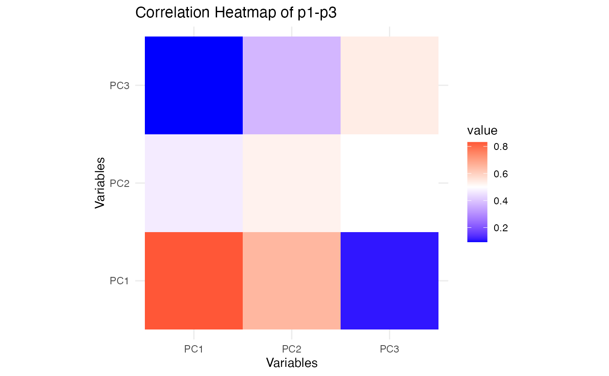
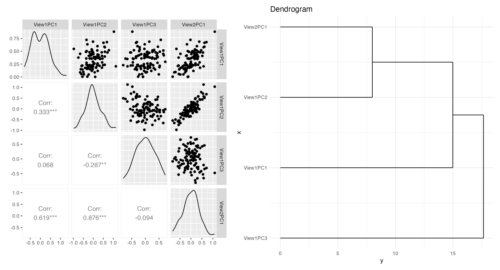
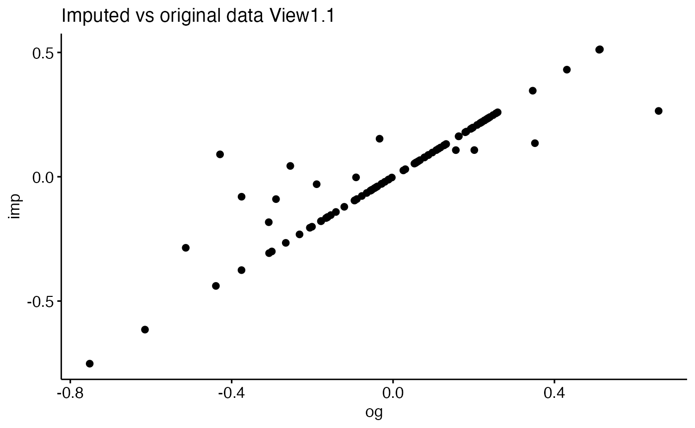
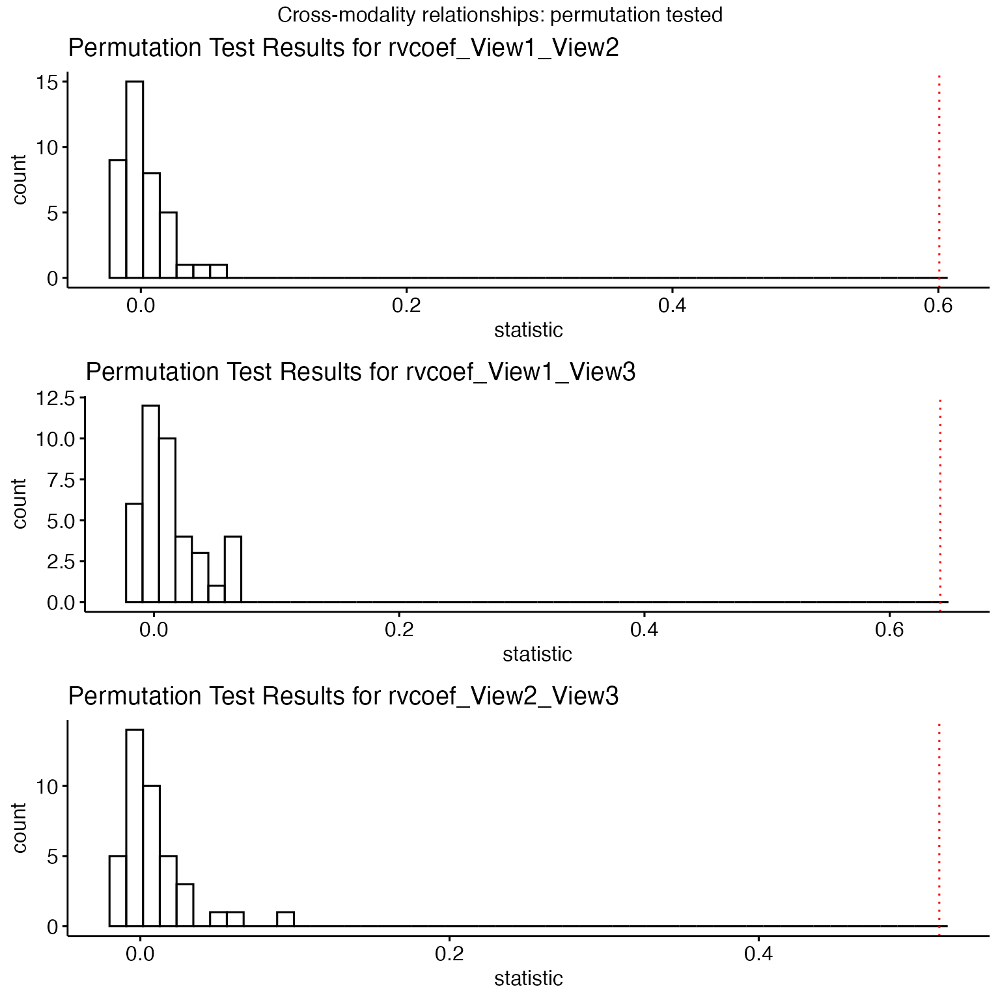

simlr_interpretation
simlr_interpretation.RmdSimilarity-driven multi-view linear reconstruction
Introduction
Similarity-driven multi-view linear reconstruction (SiMLR) is an algorithm that exploits inter-modality relationships to transform large scientific datasets into a smaller joint space. The link between the original data \(X_i\) (\(n \times p\)) and the reduced embedding space is a sparse set of features \(v_i\) ( \(p \times k\) ). Standard statistical tools may then be applied on the embeddings \(s_i=X_i v_i\).
SiMLR may be used in a variety of other ways. We will cover a basic example and follow with different use cases. These examples are perhaps less involved than those given in the original publication’s cloud computing examples but illustrate new functionality.
Example: Applying SiMLR to Simulated Multi-View Data
In this section, we explore how SiMLR can be applied to multi-view datasets. We’ll generate synthetic data to simulate the application of SiMLR, compare the results to traditional methods like Singular Value Decomposition (SVD), and visualize the relationships between the views. This example derives from the simulation-based evaluation in the original paper.
Step 1: Simulate Multi-View Data
We begin by simulating three different views of data, each representing different modalities or datasets that share some underlying structure.
library(ANTsR)
#> Warning: replacing previous import 'stats::filter' by 'dplyr::filter' when
#> loading 'ANTsR'
#> ANTsR 0.6.1
#> Environment variables set either in .Renviron or with a seed (e.g. XXX):
#> Sys.setenv(ANTS_RANDOM_SEED = XXX)
#> Sys.setenv(ITK_GLOBAL_DEFAULT_NUMBER_OF_THREADS = 1)
#> may influence reproducibility in some methods. See
#> https://github.com/ANTsX/ANTs/wiki/antsRegistration-reproducibility-issues
#> for more information.Also see *repro methods in antsRegistration.
#>
#> Attaching package: 'ANTsR'
#> The following objects are masked from 'package:stats':
#>
#> sd, var
#> The following objects are masked from 'package:base':
#>
#> all, any, apply, max, min, prod, range, sum
library(reshape2)
set.seed(1500)
nsub <- 100 # Number of subjects/samples
npix <- c(100, 200, 133) # Number of features in each view
nk <- 5 # Number of latent factors
# Generating outcome matrices for each view
outcome <- matrix(rnorm(nsub * nk), ncol = nk)
outcome1 <- matrix(rnorm(nsub * nk), ncol = nk)
outcome2 <- matrix(rnorm(nsub * nk), ncol = nk)
outcome3 <- matrix(rnorm(nsub * nk), ncol = nk)
# Generating transformation matrices for each view
view1tx <- matrix(rnorm(npix[1] * nk), nrow = nk)
view2tx <- matrix(rnorm(npix[2] * nk), nrow = nk)
view3tx <- matrix(rnorm(npix[3] * nk), nrow = nk)
# Creating the multi-view data matrices
mat1 <- (outcome %*% t(outcome1) %*% (outcome1)) %*% view1tx
mat2 <- (outcome %*% t(outcome2) %*% (outcome2)) %*% view2tx
mat3 <- (outcome %*% t(outcome3) %*% (outcome3)) %*% view3tx
colnames(mat1)=paste0("m1.",1:ncol(mat1))
colnames(mat2)=paste0("m2.",1:ncol(mat2))
colnames(mat3)=paste0("m3.",1:ncol(mat3))
# Combine the matrices into a list
matlist <- list(m1 = mat1, m2 = mat2, m3 = mat3)In this code, mat1, mat2, and
mat3 represent three views of the data. Each view is
constructed to share a common underlying structure but with different
transformations applied.
Step 2: Apply SiMLR
Now we apply the SiMLR algorithm to the simulated multi-view data to find a common representation across the views.
# Applying SiMLR
prepro=c( "centerAndScale","np")
constr='Stiefelx100x1'
constr='orthox100x0.1'
constr='Grassmannx100x1'
result <- simlr(matlist,constraint=constr,scale=prepro,
# mixAlg='pca', energyType='cca', # recommended
mixAlg='ica', energyType='regression', # recommended
iterations=100, verbose=TRUE)
#> [1] "Grassmann" "100" "1"
#> [1] " <0> BUILD-V <0> BUILD-V <0> BUILD-V <0> BUILD-V <0> "
#> [1] "initialDataTerm: 7.22587649229506 <o> mixer: ica <o> E: regression"
#> [1] "Iteration: 1 bestEv: 11.5414382771651 bestIt: 1 CE: 11.5414382771651 featOrth: 0.03353844511027"
#> [1] "Iteration: 2 bestEv: 4.08621196186966 bestIt: 2 CE: 4.08621196186966 featOrth: 0.023082933646806"
#> [1] "Iteration: 3 bestEv: 0.480130012297061 bestIt: 3 CE: 0.480130012297061 featOrth: 0.0041972214013653"
#> [1] "Iteration: 4 bestEv: 0.284969369557556 bestIt: 4 CE: 0.284969369557556 featOrth: 0.00256466180362829"
#> [1] "Iteration: 5 bestEv: 0.197477350741243 bestIt: 5 CE: 0.197477350741243 featOrth: 0.00172925074205155"
#> [1] "Iteration: 6 bestEv: 0.152956643086643 bestIt: 6 CE: 0.152956643086643 featOrth: 0.00126817648498364"
#> [1] "Iteration: 7 bestEv: 0.129276536254973 bestIt: 7 CE: 0.129276536254973 featOrth: 0.00103292443664437"
#> [1] "Iteration: 8 bestEv: 0.116853471821099 bestIt: 8 CE: 0.116853471821099 featOrth: 0.000923304573690797"
#> [1] "Iteration: 9 bestEv: 0.104517125505523 bestIt: 9 CE: 0.104517125505523 featOrth: 0.000773848839689275"
#> [1] "Iteration: 10 bestEv: 0.0926675474909758 bestIt: 10 CE: 0.0926675474909758 featOrth: 0.000701816846124169"
#> [1] "Iteration: 11 bestEv: 0.0814648228210452 bestIt: 11 CE: 0.0814648228210452 featOrth: 0.000611598205807818"
#> [1] "Iteration: 12 bestEv: 0.0756700143727747 bestIt: 12 CE: 0.0756700143727747 featOrth: 0.00055185742627314"
#> [1] "Iteration: 13 bestEv: 0.072876354937637 bestIt: 13 CE: 0.072876354937637 featOrth: 0.00052267696092879"
#> [1] "Iteration: 14 bestEv: 0.0709727600961478 bestIt: 14 CE: 0.0709727600961478 featOrth: 0.000481417806626036"
#> [1] "Iteration: 15 bestEv: 0.0694565882517105 bestIt: 15 CE: 0.0694565882517105 featOrth: 0.00048091828621898"
#> [1] "Iteration: 16 bestEv: 0.0654571368522562 bestIt: 16 CE: 0.0654571368522562 featOrth: 0.000451553447053557"
#> [1] "Iteration: 17 bestEv: 0.0625885268655792 bestIt: 17 CE: 0.0625885268655792 featOrth: 0.000417105648538948"
#> [1] "Iteration: 18 bestEv: 0.059929473613125 bestIt: 18 CE: 0.059929473613125 featOrth: 0.000415673380992614"
#> [1] "Iteration: 19 bestEv: 0.0599209470024873 bestIt: 19 CE: 0.0599209470024873 featOrth: 0.000407583959705913"
#> [1] "Iteration: 20 bestEv: 0.0591286626225656 bestIt: 20 CE: 0.0591286626225655 featOrth: 0.00039837572753728"
#> [1] "Iteration: 21 bestEv: 0.0561511702321401 bestIt: 21 CE: 0.0561511702321401 featOrth: 0.000376216839815028"
#> [1] "Iteration: 22 bestEv: 0.0459795129399537 bestIt: 22 CE: 0.0459795129399537 featOrth: 0.000283216047118631"
#> [1] "Iteration: 23 bestEv: 0.0407341568489698 bestIt: 23 CE: 0.0407341568489698 featOrth: 0.000234967953684687"
#> [1] "Iteration: 24 bestEv: 0.0377968155675031 bestIt: 24 CE: 0.0377968155675031 featOrth: 0.000194042046162887"
#> [1] "Iteration: 25 bestEv: 0.0377968155675031 bestIt: 24 CE: 0.0377968155675031 featOrth: 0.000194042046162887"
#> [1] "Iteration: 26 bestEv: 0.0377968155675031 bestIt: 24 CE: 0.0377968155675031 featOrth: 0.000194042046162887"
#> [1] "Iteration: 27 bestEv: 0.0377968155675031 bestIt: 24 CE: 0.0377968155675031 featOrth: 0.000194042046162887"
#> [1] "Iteration: 28 bestEv: 0.0377968155675031 bestIt: 24 CE: 0.0377968155675031 featOrth: 0.000194042046162887"
#> [1] "Iteration: 29 bestEv: 0.0377968155675031 bestIt: 24 CE: 0.0377968155675031 featOrth: 0.000194042046162887"
#> [1] "Iteration: 30 bestEv: 0.0377968155675031 bestIt: 24 CE: 0.0377968155675031 featOrth: 0.000194042046162887"
# Projecting data into the reduced space
p1 <- mat1 %*% (result$v[[1]])
p2 <- mat2 %*% (result$v[[2]])
p3 <- mat3 %*% (result$v[[3]])SiMLR identifies a sparse set of features that best reconstruct each
view, resulting in projections p1, p2, and
p3 for each view.
Step 3: Visualization and Comparison
To understand the effectiveness of the SiMLR projections, we can compare the correlations between the projections of different views. Additionally, we’ll compare the results to those obtained via Singular Value Decomposition (SVD).
# Calculate SVD for comparison
svd1 <- svd(mat1, nu = nk, nv = 0)$u
svd2 <- svd(mat2, nu = nk, nv = 0)$u
svd3 <- svd(mat3, nu = nk, nv = 0)$u
# Calculate correlations between the SiMLR projections
cor_p1_p2 <- range(cor(p1, p2))
cor_p1_p3 <- range(cor(p1, p3))
cor_p2_p3 <- range(cor(p2, p3))
# Compare with correlations from SVD
cor_svd1_svd2 <- range(cor(svd1, svd2))
# Print the results
cat("Correlation between p1 and p2:", cor_p1_p2, "\n")
#> Correlation between p1 and p2: -0.6072009 0.5295442
cat("Correlation between p1 and p3:", cor_p1_p3, "\n")
#> Correlation between p1 and p3: -0.78536 0.8769688
cat("Correlation between p2 and p3:", cor_p2_p3, "\n")
#> Correlation between p2 and p3: -0.6106315 0.9156068
cat("Correlation between SVD1 and SVD2:", cor_svd1_svd2, "\n")
#> Correlation between SVD1 and SVD2: -0.834545 0.5642089Visualizing Correlations
Visualizing these correlations helps us understand the similarity between the views after the SiMLR transformation.
library(ggplot2)
#> Warning: package 'ggplot2' was built under R version 4.3.1
# Function to plot correlation heatmaps
plot_cor_heatmap <- function(mat1, mat2, title) {
cor_mat <- abs(cor(mat1,mat2))
ggplot(melt(cor_mat), aes(Var1, Var2, fill = value)) +
geom_tile() +
scale_fill_gradient2(midpoint = 0.5, low = "blue", high = "red", mid = "white") +
theme_minimal() +
labs(title = title, x = "Variables", y = "Variables") +
coord_fixed()
}
# Plotting the correlations
plot_cor_heatmap(p1, p2, "Correlation Heatmap of p1-p2")
plot_cor_heatmap(p1, p3,"Correlation Heatmap of p1-p3")
plot_cor_heatmap(p2, p3, "Correlation Heatmap of p2-p3")These heatmaps show how the reduced representations from SiMLR correlate within each view. Comparing these with similar plots for SVD will reveal whether SiMLR captures more meaningful relationships between the views.
Step 4: Permutation Test
A permutation test can assess whether the observed correlations are significant.
s1 <- sample(1:nsub)
s2 <- sample(1:nsub)
permMats=list(vox = mat1, vox2 = mat2[s1, ], vox3 = mat3[s2, ])
resultp <- simlr(permMats,
constraint=constr,scale=prepro)
p1p <- mat1 %*% (resultp$v[[1]])
p2p <- mat2[s1, ] %*% (resultp$v[[2]])
p3p <- mat3[s2, ] %*% (resultp$v[[3]])
# Compare the permuted correlations
cor_p1p_p2p <- range(cor(p1p, p2p))
cor_p1p_p3p <- range(cor(p1p, p3p))
cor_p2p_p3p <- range(cor(p2p, p3p))
# Print permuted results
cat("Permuted Correlation between p1p and p2p:", cor_p1p_p2p, "\n")
#> Permuted Correlation between p1p and p2p: -0.1859454 0.2437832
cat("Permuted Correlation between p1p and p3p:", cor_p1p_p3p, "\n")
#> Permuted Correlation between p1p and p3p: -0.2218706 0.2266735
cat("Permuted Correlation between p2p and p3p:", cor_p2p_p3p, "\n")
#> Permuted Correlation between p2p and p3p: -0.06200634 0.06821151The permutation test will show if the observed correlations are stronger than those expected by chance.
This introductory example demonstrates how SiMLR can uncover the shared structure across multiple views of data. The correlations between the projections indicate the degree to which the algorithm has captured this shared structure, and the permutation test serves as a validation step.
Integration of Multiple Data Types via Dimensionality Reduction
SiMLR is particularly useful when working with datasets from different modalities (e.g., genomics, proteomics, and imaging data). By finding a joint embedding space, SiMLR can integrate these diverse data types into a unified representation, facilitating downstream analyses such as clustering, classification, or regression.
When dealing with high-dimensional data, dimensionality reduction techniques are often required to make the data more manageable and to avoid issues like the curse of dimensionality. SiMLR provides an approach that not only reduces dimensionality but also maintains the relationships between different views of the data, making it a powerful tool for exploratory data analysis and visualization. Below, we illustrate reading, writing and exploratory integrated visualization.
library(fpc)
library(cluster)
library(gridExtra)
library(ggpubr)
sim2nm=tempfile()
write_simlr_data_frames( result$v, sim2nm )
simres2=read_simlr_data_frames( sim2nm, names(matlist) )
popdf = data.frame( age = outcome, cog=outcome1, mat1, mat2, mat3 )
temp2=apply_simlr_matrices( popdf, simres2,
center=TRUE, scale=TRUE, absolute_value=rep(TRUE,length(matlist)) )
simnames=temp2[[2]]
zz=exploratory_visualization( temp2[[1]][, temp2[[2]]], dotsne=FALSE )
#> Warning: package 'GGally' was built under R version 4.3.1
#> Registered S3 method overwritten by 'GGally':
#> method from
#> +.gg ggplot2
#> Warning: package 'ggdendro' was built under R version 4.3.1
#> Warning: package 'patchwork' was built under R version 4.3.1
print( zz$plot )
Now we can icorporate the “modalities” in order to predict the simulated outcome matrix. Note that contributions exist from each modality in the regression (in some cases). This is one of the advantages of SiMLR: it provides systematic guidance for building these types of integrative models.
# multi-view regression
summary( lm( age.1 ~ m1PC1 + m2PC1 + m3PC1, data=temp2[[1]] ))
#>
#> Call:
#> lm(formula = age.1 ~ m1PC1 + m2PC1 + m3PC1, data = temp2[[1]])
#>
#> Residuals:
#> Min 1Q Median 3Q Max
#> -2.3844 -0.5785 -0.1194 0.6110 2.1895
#>
#> Coefficients:
#> Estimate Std. Error t value Pr(>|t|)
#> (Intercept) 0.06104 0.09057 0.674 0.50198
#> m1PC1 86.20382 16.50727 5.222 1.02e-06 ***
#> m2PC1 319.34576 118.89762 2.686 0.00852 **
#> m3PC1 -148.60653 44.93363 -3.307 0.00133 **
#> ---
#> Signif. codes: 0 '***' 0.001 '**' 0.01 '*' 0.05 '.' 0.1 ' ' 1
#>
#> Residual standard error: 0.9057 on 96 degrees of freedom
#> Multiple R-squared: 0.2501, Adjusted R-squared: 0.2266
#> F-statistic: 10.67 on 3 and 96 DF, p-value: 4.069e-06
summary( lm( age.2 ~ m1PC1 + m2PC1 + m3PC1, data=temp2[[1]] ))
#>
#> Call:
#> lm(formula = age.2 ~ m1PC1 + m2PC1 + m3PC1, data = temp2[[1]])
#>
#> Residuals:
#> Min 1Q Median 3Q Max
#> -1.00155 -0.26391 0.06496 0.26590 1.14346
#>
#> Coefficients:
#> Estimate Std. Error t value Pr(>|t|)
#> (Intercept) -0.06212 0.04237 -1.466 0.145891
#> m1PC1 125.84626 7.72234 16.296 < 2e-16 ***
#> m2PC1 197.18134 55.62207 3.545 0.000609 ***
#> m3PC1 -252.25580 21.02062 -12.000 < 2e-16 ***
#> ---
#> Signif. codes: 0 '***' 0.001 '**' 0.01 '*' 0.05 '.' 0.1 ' ' 1
#>
#> Residual standard error: 0.4237 on 96 degrees of freedom
#> Multiple R-squared: 0.8073, Adjusted R-squared: 0.8013
#> F-statistic: 134.1 on 3 and 96 DF, p-value: < 2.2e-16
summary( lm( age.3 ~ m1PC1 + m2PC1 + m3PC1, data=temp2[[1]] ))
#>
#> Call:
#> lm(formula = age.3 ~ m1PC1 + m2PC1 + m3PC1, data = temp2[[1]])
#>
#> Residuals:
#> Min 1Q Median 3Q Max
#> -0.29992 -0.08532 0.00015 0.08359 0.32811
#>
#> Coefficients:
#> Estimate Std. Error t value Pr(>|t|)
#> (Intercept) 0.03258 0.01354 2.407 0.018 *
#> m1PC1 81.51622 2.46756 33.035 <2e-16 ***
#> m2PC1 1.48844 17.77317 0.084 0.933
#> m3PC1 350.62507 6.71681 52.201 <2e-16 ***
#> ---
#> Signif. codes: 0 '***' 0.001 '**' 0.01 '*' 0.05 '.' 0.1 ' ' 1
#>
#> Residual standard error: 0.1354 on 96 degrees of freedom
#> Multiple R-squared: 0.9822, Adjusted R-squared: 0.9817
#> F-statistic: 1767 on 3 and 96 DF, p-value: < 2.2e-16
summary( lm( age.4 ~ m1PC1 + m2PC1 + m3PC1, data=temp2[[1]] ))
#>
#> Call:
#> lm(formula = age.4 ~ m1PC1 + m2PC1 + m3PC1, data = temp2[[1]])
#>
#> Residuals:
#> Min 1Q Median 3Q Max
#> -1.42381 -0.37077 0.04138 0.42440 1.33062
#>
#> Coefficients:
#> Estimate Std. Error t value Pr(>|t|)
#> (Intercept) 0.0238 0.0594 0.401 0.690
#> m1PC1 14.8592 10.8272 1.372 0.173
#> m2PC1 991.2540 77.9858 12.711 < 2e-16 ***
#> m3PC1 -147.9854 29.4723 -5.021 2.37e-06 ***
#> ---
#> Signif. codes: 0 '***' 0.001 '**' 0.01 '*' 0.05 '.' 0.1 ' ' 1
#>
#> Residual standard error: 0.594 on 96 degrees of freedom
#> Multiple R-squared: 0.651, Adjusted R-squared: 0.6401
#> F-statistic: 59.7 on 3 and 96 DF, p-value: < 2.2e-16
summary( lm( age.5 ~ m1PC1 + m2PC1 + m3PC1, data=temp2[[1]] ))
#>
#> Call:
#> lm(formula = age.5 ~ m1PC1 + m2PC1 + m3PC1, data = temp2[[1]])
#>
#> Residuals:
#> Min 1Q Median 3Q Max
#> -1.74091 -0.42386 0.05677 0.51003 1.63835
#>
#> Coefficients:
#> Estimate Std. Error t value Pr(>|t|)
#> (Intercept) -0.08199 0.07259 -1.130 0.261456
#> m1PC1 -28.32032 13.22977 -2.141 0.034836 *
#> m2PC1 -795.15011 95.29062 -8.344 5.28e-13 ***
#> m3PC1 126.43925 36.01210 3.511 0.000682 ***
#> ---
#> Signif. codes: 0 '***' 0.001 '**' 0.01 '*' 0.05 '.' 0.1 ' ' 1
#>
#> Residual standard error: 0.7259 on 96 degrees of freedom
#> Multiple R-squared: 0.4288, Adjusted R-squared: 0.4109
#> F-statistic: 24.02 on 3 and 96 DF, p-value: 1.111e-11Sparse Feature Selection
SiMLR incorporates sparse feature selection, allowing users to identify a minimal subset of features that contribute most to the joint embedding space. This can be particularly advantageous in settings where interpretability is crucial, such as biomarker discovery in biological datasets.
pp=plot_features( simres2 )
grid.arrange( grobs=pp, nrow=3, top='Joint features' )
Improved Model Interpretability
By projecting the data into a joint space, SiMLR helps improve the interpretability of machine learning models. The sparse feature selection ensures that only the most informative features are retained, making it easier to understand the relationships between the input data and the model’s predictions.
Cross-Modal Prediction or Imputation
In scenarios where you have multiple data modalities but missing information scattered across some of the views, SiMLR can be used to impute the missing data by leveraging the relationships between the available modalities. This cross-modal prediction capability is particularly useful in multi-omics studies and other fields where complete data is often unavailable.
popdfi=popdf
proportion <- 0.1
num_NAs <- ceiling(proportion * nrow(popdfi) * ncol(popdfi))
indices <- arrayInd(sample(1:(nrow(popdfi) * ncol(popdfi)), num_NAs), .dim = dim(popdfi))
popdfi[indices] <- NA
nms=names(simres2)
nsimx=3
sep='.'
imputedcols=c()
for ( n in nms ) {
for ( v in 1:nsimx ) {
thiscol=paste0(n,sep,v)
if ( any( is.na( popdfi[,thiscol] ) )) {
imputedcols=c(imputedcols,thiscol)
popdfi = simlr_impute( popdfi, nms, v, n, separator=sep )
}
}
}
impresult=data.frame( og=popdf[,imputedcols[1]], imp=popdfi[,imputedcols[1]])
ggscatter( impresult, 'og', 'imp' ) + ggtitle(paste("Imputed vs original data",imputedcols[1]))
#> Warning: Removed 3 rows containing missing values or values outside the scale range
#> (`geom_point()`).
Testing Significance of Joint Relationships
We use a metric (rvcoef) that is not directly optimized
to assess the significance of the simlr result versus permuted data. The
RV coefficient is analogous to the Pearson correlation coefficient but
is used for comparing two matrices (or datasets) rather than two
variables. It measures the similarity of the column spaces (subspaces)
spanned by the columns of two matrices. We compute the
rvcoef across all pairs of data at each permutation and
compare to the original values.
initu = initializeSimlr( matlist, 3, jointReduction = TRUE )
np=40
myperm = simlr.perm( matlist,
constraint=constr,scale=prepro,
initialUMatrix=initu,
nperms=np, FUN=rvcoef, verbose=TRUE )
#> [1] "Grassmann" "100" "1"
#> [1] " <0> BUILD-V <0> BUILD-V <0> BUILD-V <0> BUILD-V <0> "
#> [1] "initialDataTerm: 7.0559578404981 <o> mixer: svd <o> E: cca"
#> [1] "Iteration: 1 bestEv: 3.1430611916353 bestIt: 1 CE: 3.1430611916353 featOrth: 0.0370056323113553"
#> [1] "Iteration: 2 bestEv: 2.14327510013009 bestIt: 2 CE: 2.14327510013009 featOrth: 0.026570879147914"
#> [1] "Iteration: 3 bestEv: 0.984722572028974 bestIt: 3 CE: 0.984722572028974 featOrth: 0.0155705913550374"
#> [1] "Iteration: 4 bestEv: 0.984722572028974 bestIt: 3 CE: 0.984722572028974 featOrth: 0.0155705913550374"
#> [1] "Iteration: 5 bestEv: 0.984722572028974 bestIt: 3 CE: 0.984722572028974 featOrth: 0.0155705913550374"
#> [1] "Iteration: 6 bestEv: 0.984722572028974 bestIt: 3 CE: 0.984722572028974 featOrth: 0.0155705913550374"
#> [1] "Iteration: 7 bestEv: 0.984722572028974 bestIt: 3 CE: 0.984722572028974 featOrth: 0.0155705913550374"
#> [1] "Iteration: 8 bestEv: 0.984722572028974 bestIt: 3 CE: 0.984722572028974 featOrth: 0.0155705913550374"
#> [1] "Iteration: 9 bestEv: 0.984722572028974 bestIt: 3 CE: 0.984722572028974 featOrth: 0.0155705913550374"
print( tail( myperm$significance, 2 ) )
#> n perm m1_m2 m1_m3 m2_m3
#> 42 3 ttest 1.879502e-64 2.627235e-46 3.749372e-51
#> 43 3 pvalue 0.000000e+00 0.000000e+00 0.000000e+00
gglist = list()
simlrmaps=colnames(myperm$significance)[-c(1:2)]
for ( xxx in simlrmaps ) {
pvec=myperm$significance[ myperm$significance$perm %in% as.character(1:np),xxx]
original_tstat <- myperm$significance[1,xxx] # replace with actual value
gglist[[length(gglist)+1]]=( visualize_permutation_test( pvec, original_tstat, xxx ) )
}
grid.arrange( grobs=gglist, top='Cross-modality relationships: permutation tested')
# display simlr results
gglist2=list()
for ( i in 1:(length(matlist)-1)) {
for ( j in ((i+1):length(matlist))) {
toviz1=data.matrix(simres2[[i]])
toviz2=data.matrix(simres2[[j]])
temp=visualize_lowrank_relationships( matlist[[i]], matlist[[j]],
toviz1, toviz2,
nm1=names(matlist)[i], nm2=names(matlist)[j] )$plot
gglist2[[length(gglist2)+1]]=temp
}
}
grid.arrange(grobs=(gglist2),nrow=1, top='Low-rank correlations: SiMLR')
Evaluating Machine Learning Objective Functions
This section of the tutorial vignette provides an example of how to
set up and run a parameter search using the simlr.search function. Here,
csearch contains a list of constraint options that include
“none” and different options for enforcing orthogonality in the
feature space. This list will be used to explore different
constraint options during the parameter search.
In this step, the simlr.parameters function is called to create a
parameter list (simparms) that will control the grid
search. Each parameter category (e.g., nsimlr_options,
prescaling_options, etc.) is provided with options as a
list. These parameters specify the settings and constraints that will be
explored during the optimization process.
nsimlr_options: The number of latent factors to consider.prescaling_options: Methods for data scaling/preprocessing (robust, whiten, np).objectiver_options: The objective function used (eg regression or cca).mixer_options: The mixing technique (ica or pca).sparval_options: Sparseness settings.expBeta_options: Exponential smoothing parameter beta values. e.g. 0.0, 0.9, 0.99, 0.999.positivities_options: Positivity constraints.optimus_options: The optimization strategy (lineSearch, mixed, greedy).constraint_options: Feature space orthogonality constraints to apply.search_type: The type of search to perform (full indicates a full grid search).num_samples: The number of samples to evaluate during the search.
paster <- function(vec1, vec2) {
paste0(rep(vec1, each = length(vec2)), vec2)
}
csearch = as.list( c("none",
paster( c("Grassmannx","Stiefelx","orthox"),
c("10x10","100x1","100x1","1x1"))))
# the 10x10 are weights on the optimization term of the energy
simparms = simlr.parameters(
nsimlr_options = list( 2 ),
prescaling_options = list(
c( "robust", "centerAndScale", "np") ),
objectiver_options = list("regression",'cca'),
mixer_options=list("ica",'pca'),
sparval_options=list( c(0.5,0.5,0.5) ),
expBeta_options = list( c(0.99) ),
positivities_options = list(
c("positive","positive","positive")),
optimus_options=list( 'lineSearch'),
constraint_options=csearch,
search_type="full"
# num_samples=5
)The regularizeSimlr function is used to apply
regularization to the input matrices matlist. Regularization can help
prevent overfitting by penalizing complexity. The fraction and sigma
parameters control the extent and type of regularization.
regs = regularizeSimlr(matlist, fraction=0.05,
sigma=rep(1.5,length(matlist)))
plot( image( regs[[1]] ) )

The simlr.search function performs the grid search over
the parameter space defined in simparms. It takes the
matrices matlist and regs as input. The nperms specifies
the number of permutations to evaluate for robustness. The
verbose parameter controls the level of detail in the
output during the search process.
simlrXs=simlr.search(
matlist,
regs=regs,
simparms,
nperms=12,
verbose=4
)
#> Will search: 52 parameter sets[1] "robust" "centerAndScale" "np"
#> [1] "regression"
#> [1] "ica"
#> [1] "none"
#> [1] 0.5 0.5 0.5
#> [1] 0.99
#> [1] "positive" "positive" "positive"
#> [1] "lineSearch"
#> [1] "none" NA NA
#> [1] " <0> BUILD-V <0> BUILD-V <0> BUILD-V <0> BUILD-V <0> "
#> [1] "initialDataTerm: 0.583398050406628 <o> mixer: ica <o> E: regression"
#> [1] "Iteration: 1 bestEv: 0.0102514748239556 bestIt: 1 CE: 0.0102514748239556 featOrth: 0.0667607032389575"
#> [1] "Iteration: 2 bestEv: 0.00989712526672033 bestIt: 2 CE: 0.00989712526672033 featOrth: 0.0435349207277574"
#> [1] "Iteration: 3 bestEv: 0.00966098455492624 bestIt: 3 CE: 0.00966098455492624 featOrth: 0.0718737062245701"
#> [1] "Iteration: 4 bestEv: 0.00958824657043665 bestIt: 4 CE: 0.00958824657043665 featOrth: 0.052723050768759"
#> [1] "Iteration: 5 bestEv: 0.00918575994224746 bestIt: 5 CE: 0.00918575994224746 featOrth: 0.042789323775297"
#> [1] "Iteration: 6 bestEv: 0.00918575994224746 bestIt: 5 CE: 0.00923010160600085 featOrth: 0.0467986074148375"
#> [1] "Iteration: 7 bestEv: 0.00918575994224746 bestIt: 5 CE: 0.00962177119058793 featOrth: 0.0654002868710363"
#> [1] "Iteration: 8 bestEv: 0.00918575994224746 bestIt: 5 CE: 0.00961416484088604 featOrth: 0.0547616523050728"
#> [1] "Iteration: 9 bestEv: 0.00918575994224746 bestIt: 5 CE: 0.00986903136781524 featOrth: 0.0582348145849807"
#> [1] "Iteration: 10 bestEv: 0.00918575994224746 bestIt: 5 CE: 0.00977027960685396 featOrth: 0.0761300076775306"
#> [1] "Iteration: 11 bestEv: 0.00918575994224746 bestIt: 5 CE: 0.00943510985352491 featOrth: 0.0371337987142039"
#> [1] "robust" "centerAndScale" "np"
#> [1] "cca"
#> [1] "ica"
#> [1] "none"
#> [1] 0.5 0.5 0.5
#> [1] 0.99
#> [1] "positive" "positive" "positive"
#> [1] "lineSearch"
#> [1] "none" NA NA
#> [1] " <0> BUILD-V <0> BUILD-V <0> BUILD-V <0> BUILD-V <0> "
#> [1] "initialDataTerm: -0.923787715699613 <o> mixer: ica <o> E: cca"
#> [1] "Iteration: 1 bestEv: -0.681910847503995 bestIt: 1 CE: -0.681910847503995 featOrth: 0.0884326002748028"
#> [1] "Iteration: 2 bestEv: -0.681910847503995 bestIt: 1 CE: -0.642975108671044 featOrth: 0.0849230469772611"
#> [1] "Iteration: 3 bestEv: -0.681910847503995 bestIt: 1 CE: -0.641232997618985 featOrth: 0.0572436161483313"
#> [1] "Iteration: 4 bestEv: -0.704804227730167 bestIt: 4 CE: -0.704804227730167 featOrth: 0.0768691691136011"
#> [1] "Iteration: 5 bestEv: -0.966834973813831 bestIt: 5 CE: -0.966834973813832 featOrth: 0.0533582937508945"
#> [1] "Iteration: 6 bestEv: -0.966834973813831 bestIt: 5 CE: -0.548469580266177 featOrth: 0.0363039174201783"
#> [1] "Iteration: 7 bestEv: -0.966834973813831 bestIt: 5 CE: -0.548469580266177 featOrth: 0.0363039174201783"
#> [1] "Iteration: 8 bestEv: -0.966834973813831 bestIt: 5 CE: -0.644043197453795 featOrth: 0.0362010872946781"
#> [1] "Iteration: 9 bestEv: -0.966834973813831 bestIt: 5 CE: -0.964282775538944 featOrth: 0.0483778476700115"
#> [1] "Iteration: 10 bestEv: -0.966834973813831 bestIt: 5 CE: -0.962306387785014 featOrth: 0.0478954688623747"
#> [1] "Iteration: 11 bestEv: -0.966834973813831 bestIt: 5 CE: -0.960763294413568 featOrth: 0.0478480503008161"
#> [1] "robust" "centerAndScale" "np"
#> [1] "regression"
#> [1] "pca"
#> [1] "none"
#> [1] 0.5 0.5 0.5
#> [1] 0.99
#> [1] "positive" "positive" "positive"
#> [1] "lineSearch"
#> [1] "none" NA NA
#> [1] " <0> BUILD-V <0> BUILD-V <0> BUILD-V <0> BUILD-V <0> "
#> [1] "initialDataTerm: 0.583398050406628 <o> mixer: pca <o> E: regression"
#> [1] "Iteration: 1 bestEv: 0.00845572196960357 bestIt: 1 CE: 0.00845572196960357 featOrth: 0.0667607032389575"
#> [1] "Iteration: 2 bestEv: 0.00845572196960357 bestIt: 1 CE: 0.0087967121934184 featOrth: 0.0679366966164035"
#> [1] "Iteration: 3 bestEv: 0.00845572196960357 bestIt: 1 CE: 0.00853746869047362 featOrth: 0.0636581549341637"
#> [1] "Iteration: 4 bestEv: 0.00845572196960357 bestIt: 1 CE: 0.00852504590036578 featOrth: 0.0638233536479087"
#> [1] "Iteration: 5 bestEv: 0.00845572196960357 bestIt: 1 CE: 0.00852854568370184 featOrth: 0.063178107177924"
#> [1] "Iteration: 6 bestEv: 0.00845572196960357 bestIt: 1 CE: 0.00853172142561275 featOrth: 0.0625920644728356"
#> [1] "Iteration: 7 bestEv: 0.00845572196960357 bestIt: 1 CE: 0.00853467380599137 featOrth: 0.0620782331198348"
#> [1] "improvement"
#> nsimlr objectiver mixer ebber optimus constraint final_energy prescaling1
#> 1 2 regression pca 0.99 lineSearch none 20.13228 robust
#> prescaling2 prescaling3 sparval1 sparval2 sparval3 positivity1 positivity2
#> 1 centerAndScale np 0.5 0.5 0.5 positive positive
#> positivity3 perm m1_m2 m1_m3 m2_m3
#> 1 positive 0 0.5044138 0.2953116 0.3052025
#> PC1 PC2
#> m3.1 0.013392020 0.00000000
#> m3.2 0.000000000 0.00000000
#> m3.3 0.012007522 0.00000000
#> m3.4 0.000000000 0.00000000
#> m3.5 0.018620200 0.01795394
#> m3.6 0.005912624 0.03007971
#> [1] "robust" "centerAndScale" "np"
#> [1] "cca"
#> [1] "pca"
#> [1] "none"
#> [1] 0.5 0.5 0.5
#> [1] 0.99
#> [1] "positive" "positive" "positive"
#> [1] "lineSearch"
#> [1] "none" NA NA
#> [1] " <0> BUILD-V <0> BUILD-V <0> BUILD-V <0> BUILD-V <0> "
#> [1] "initialDataTerm: -0.923787715699613 <o> mixer: pca <o> E: cca"
#> [1] "Iteration: 1 bestEv: -0.407702930999903 bestIt: 1 CE: -0.407702930999903 featOrth: 0.0884326002748028"
#> [1] "Iteration: 2 bestEv: -0.407702930999903 bestIt: 1 CE: -0.252099439429198 featOrth: 0.0535853719038503"
#> [1] "Iteration: 3 bestEv: -0.812885497564707 bestIt: 3 CE: -0.812885497564707 featOrth: 0.155964422723384"
#> [1] "Iteration: 4 bestEv: -0.812885497564707 bestIt: 3 CE: -0.768949800017579 featOrth: 0.117130177544626"
#> [1] "Iteration: 5 bestEv: -0.812885497564707 bestIt: 3 CE: -0.657833055667614 featOrth: 0.0842557212710104"
#> [1] "Iteration: 6 bestEv: -0.851843622532129 bestIt: 6 CE: -0.851843622532129 featOrth: 0.0940287417440302"
#> [1] "Iteration: 7 bestEv: -0.855577718449521 bestIt: 7 CE: -0.855577718449521 featOrth: 0.0814910708775088"
#> [1] "Iteration: 8 bestEv: -0.880792309150649 bestIt: 8 CE: -0.880792309150649 featOrth: 0.090974338067911"
#> [1] "Iteration: 9 bestEv: -0.919682600591653 bestIt: 9 CE: -0.919682600591653 featOrth: 0.10567725332165"
#> [1] "Iteration: 10 bestEv: -0.920266020457128 bestIt: 10 CE: -0.920266020457128 featOrth: 0.105206668577923"
#> [1] "Iteration: 11 bestEv: -0.920266020457128 bestIt: 10 CE: -0.918240798526631 featOrth: 0.102945084040736"
#> [1] "Iteration: 12 bestEv: -0.920266020457128 bestIt: 10 CE: -0.918240798526631 featOrth: 0.102945084040736"
#> [1] "Iteration: 13 bestEv: -0.920266020457128 bestIt: 10 CE: -0.58723881151041 featOrth: 0.0748887553867442"
#> [1] "Iteration: 14 bestEv: -0.920266020457128 bestIt: 10 CE: -0.569374309636528 featOrth: 0.0736792324616851"
#> [1] "Iteration: 15 bestEv: -0.920266020457128 bestIt: 10 CE: -0.569374309636528 featOrth: 0.0736792324616851"
#> [1] "Iteration: 16 bestEv: -0.920266020457128 bestIt: 10 CE: -0.528771649839351 featOrth: 0.072033952241728"
#> [1] "robust" "centerAndScale" "np"
#> [1] "regression"
#> [1] "ica"
#> [1] "Grassmannx10x10"
#> [1] 0.5 0.5 0.5
#> [1] 0.99
#> [1] "positive" "positive" "positive"
#> [1] "lineSearch"
#> [1] "Grassmann" "10" "10"
#> [1] " <0> BUILD-V <0> BUILD-V <0> BUILD-V <0> BUILD-V <0> "
#> [1] "initialDataTerm: 1.25100508279622 <o> mixer: ica <o> E: regression"
#> [1] "Iteration: 1 bestEv: 0.237184452661408 bestIt: 1 CE: 0.237184452661408 featOrth: 2.30359310036867e-05"
#> [1] "Iteration: 2 bestEv: 0.177628284796421 bestIt: 2 CE: 0.177628284796421 featOrth: 0.00218175400736428"
#> [1] "Iteration: 3 bestEv: 0.100439385053478 bestIt: 3 CE: 0.100439385053478 featOrth: 0.000762033747937794"
#> [1] "Iteration: 4 bestEv: 0.0853108690922176 bestIt: 4 CE: 0.0853108690922176 featOrth: 0.000283194089042364"
#> [1] "Iteration: 5 bestEv: 0.0709658345429911 bestIt: 5 CE: 0.0709658345429911 featOrth: 0.000404602275343169"
#> [1] "Iteration: 6 bestEv: 0.0622861142266952 bestIt: 6 CE: 0.0622861142266952 featOrth: 0.000353553008594557"
#> [1] "Iteration: 7 bestEv: 0.0550855727200578 bestIt: 7 CE: 0.0550855727200578 featOrth: 0.000217127370110649"
#> [1] "Iteration: 8 bestEv: 0.0483257724033888 bestIt: 8 CE: 0.0483257724033888 featOrth: 0.000239149304386075"
#> [1] "Iteration: 9 bestEv: 0.0426194418951527 bestIt: 9 CE: 0.0426194418951527 featOrth: 0.000277440875568835"
#> [1] "Iteration: 10 bestEv: 0.0377358215286436 bestIt: 10 CE: 0.0377358215286436 featOrth: 0.000212920625383232"
#> [1] "Iteration: 11 bestEv: 0.035330431626499 bestIt: 11 CE: 0.035330431626499 featOrth: 0.0002874361943797"
#> [1] "Iteration: 12 bestEv: 0.0336470415319477 bestIt: 12 CE: 0.0336470415319477 featOrth: 0.000191646304692365"
#> [1] "Iteration: 13 bestEv: 0.0327935098576746 bestIt: 13 CE: 0.0327935098576746 featOrth: 0.000200900701631965"
#> [1] "Iteration: 14 bestEv: 0.0321829413731842 bestIt: 14 CE: 0.0321829413731842 featOrth: 0.000212390705307405"
#> [1] "Iteration: 15 bestEv: 0.0292251756694916 bestIt: 15 CE: 0.0292251756694916 featOrth: 0.000222993486945821"
#> [1] "Iteration: 16 bestEv: 0.0285975579544225 bestIt: 16 CE: 0.0285975579544225 featOrth: 0.000203167663771171"
#> [1] "Iteration: 17 bestEv: 0.0281924111867021 bestIt: 17 CE: 0.0281924111867021 featOrth: 0.000194917441949429"
#> [1] "Iteration: 18 bestEv: 0.0267947780756691 bestIt: 18 CE: 0.0267947780756691 featOrth: 0.000240976070323354"
#> [1] "Iteration: 19 bestEv: 0.0266071857687879 bestIt: 19 CE: 0.0266071857687879 featOrth: 0.00024122692887667"
#> [1] "Iteration: 20 bestEv: 0.0247056793801687 bestIt: 20 CE: 0.0247056793801687 featOrth: 0.000322214923109493"
#> [1] "Iteration: 21 bestEv: 0.0247056793801687 bestIt: 20 CE: 0.0247056793801687 featOrth: 0.000322214923109493"
#> [1] "Iteration: 22 bestEv: 0.0247056793801687 bestIt: 20 CE: 0.0247056793801687 featOrth: 0.000322214923109493"
#> [1] "Iteration: 23 bestEv: 0.0247056793801687 bestIt: 20 CE: 0.0247056793801687 featOrth: 0.000322214923109493"
#> [1] "Iteration: 24 bestEv: 0.0247056793801687 bestIt: 20 CE: 0.0247056793801687 featOrth: 0.000322214923109493"
#> [1] "Iteration: 25 bestEv: 0.0247056793801687 bestIt: 20 CE: 0.0247056793801687 featOrth: 0.000322214923109493"
#> [1] "Iteration: 26 bestEv: 0.0246116845318109 bestIt: 26 CE: 0.0246116845318109 featOrth: 0.000321275119595209"
#> [1] "Iteration: 27 bestEv: 0.0246116845318109 bestIt: 26 CE: 0.0246116845318109 featOrth: 0.000321275119595209"
#> [1] "Iteration: 28 bestEv: 0.0246116845318109 bestIt: 26 CE: 0.0246116845318109 featOrth: 0.000321275119595209"
#> [1] "Iteration: 29 bestEv: 0.0215108142925757 bestIt: 29 CE: 0.0215108142925757 featOrth: 0.000646254578460421"
#> [1] "Iteration: 30 bestEv: 0.0215108142925757 bestIt: 29 CE: 0.0215108142925757 featOrth: 0.000646254578460421"
#> [1] "Iteration: 31 bestEv: 0.0215108142925757 bestIt: 29 CE: 0.0215108142925757 featOrth: 0.000646254578460421"
#> [1] "Iteration: 32 bestEv: 0.0215108142925757 bestIt: 29 CE: 0.0215108142925757 featOrth: 0.000646254578460421"
#> [1] "Iteration: 33 bestEv: 0.0215108142925757 bestIt: 29 CE: 0.0215108142925757 featOrth: 0.000646254578460421"
#> [1] "Iteration: 34 bestEv: 0.0215108142925757 bestIt: 29 CE: 0.0215108142925757 featOrth: 0.000646254578460421"
#> [1] "Iteration: 35 bestEv: 0.0215108142925757 bestIt: 29 CE: 0.0215108142925757 featOrth: 0.000646254578460421"
#> [1] "improvement"
#> nsimlr objectiver mixer ebber optimus constraint final_energy
#> 1 2 regression ica 0.99 lineSearch Grassmannx10x10 21.56241
#> prescaling1 prescaling2 prescaling3 sparval1 sparval2 sparval3 positivity1
#> 1 robust centerAndScale np 0.5 0.5 0.5 positive
#> positivity2 positivity3 perm m1_m2 m1_m3 m2_m3
#> 1 positive positive 0 0.6938846 0.3555743 0.437541
#> PC1 PC2
#> m3.1 1.160190e-02 0.0000000000
#> m3.2 6.997144e-05 0.0001090568
#> m3.3 3.740359e-02 0.0000000000
#> m3.4 0.000000e+00 0.0000000000
#> m3.5 1.090682e-02 0.0116909065
#> m3.6 0.000000e+00 0.0326001973
#> [1] "robust" "centerAndScale" "np"
#> [1] "cca"
#> [1] "ica"
#> [1] "Grassmannx10x10"
#> [1] 0.5 0.5 0.5
#> [1] 0.99
#> [1] "positive" "positive" "positive"
#> [1] "lineSearch"
#> [1] "Grassmann" "10" "10"
#> [1] " <0> BUILD-V <0> BUILD-V <0> BUILD-V <0> BUILD-V <0> "
#> [1] "initialDataTerm: -0.256180683310025 <o> mixer: ica <o> E: cca"
#> [1] "Iteration: 1 bestEv: -0.403162131399664 bestIt: 1 CE: -0.403162131399664 featOrth: 0.00336145297998003"
#> [1] "Iteration: 2 bestEv: -0.604027710338999 bestIt: 2 CE: -0.604027710338999 featOrth: 0.00281525016511634"
#> [1] "Iteration: 3 bestEv: -0.604027710338999 bestIt: 2 CE: -0.567336852179014 featOrth: 0.00186404525686447"
#> [1] "Iteration: 4 bestEv: -0.604027710338999 bestIt: 2 CE: -0.602967479366712 featOrth: 0.0024843137684324"
#> [1] "Iteration: 5 bestEv: -0.622356154298575 bestIt: 5 CE: -0.622356154298575 featOrth: 0.00283387923175915"
#> [1] "Iteration: 6 bestEv: -0.626120748641519 bestIt: 6 CE: -0.626120748641519 featOrth: 0.00257608466697399"
#> [1] "Iteration: 7 bestEv: -0.626120748641519 bestIt: 6 CE: -0.623603080545204 featOrth: 0.00334564824887162"
#> [1] "Iteration: 8 bestEv: -0.626120748641519 bestIt: 6 CE: -0.623603080545204 featOrth: 0.00334564824887162"
#> [1] "Iteration: 9 bestEv: -0.626120748641519 bestIt: 6 CE: -0.623603080545204 featOrth: 0.00334564824887162"
#> [1] "Iteration: 10 bestEv: -0.626120748641519 bestIt: 6 CE: -0.623603080545204 featOrth: 0.00334564824887162"
#> [1] "Iteration: 11 bestEv: -0.626120748641519 bestIt: 6 CE: -0.623603080545204 featOrth: 0.00334564824887162"
#> [1] "Iteration: 12 bestEv: -0.792774150318934 bestIt: 12 CE: -0.792774150318934 featOrth: 0.00277913687830129"
#> [1] "Iteration: 13 bestEv: -0.792774150318934 bestIt: 12 CE: -0.792344673849731 featOrth: 0.00217839385226207"
#> [1] "Iteration: 14 bestEv: -0.798597657559087 bestIt: 14 CE: -0.798597657559087 featOrth: 0.00174830155460466"
#> [1] "Iteration: 15 bestEv: -0.798597657559087 bestIt: 14 CE: -0.792277076833766 featOrth: 0.00165724840230397"
#> [1] "Iteration: 16 bestEv: -0.798597657559087 bestIt: 14 CE: -0.79798867961827 featOrth: 0.00129035596671857"
#> [1] "Iteration: 17 bestEv: -0.798597657559087 bestIt: 14 CE: -0.795193390255349 featOrth: 0.00129825533705678"
#> [1] "Iteration: 18 bestEv: -0.798597657559087 bestIt: 14 CE: -0.793023320926906 featOrth: 0.00130076172188352"
#> [1] "Iteration: 19 bestEv: -0.798597657559087 bestIt: 14 CE: -0.789443930397348 featOrth: 0.00131283753743851"
#> [1] "Iteration: 20 bestEv: -0.798597657559087 bestIt: 14 CE: -0.789443930397348 featOrth: 0.00131283753743851"
#> [1] "robust" "centerAndScale" "np"
#> [1] "regression"
#> [1] "pca"
#> [1] "Grassmannx10x10"
#> [1] 0.5 0.5 0.5
#> [1] 0.99
#> [1] "positive" "positive" "positive"
#> [1] "lineSearch"
#> [1] "Grassmann" "10" "10"
#> [1] " <0> BUILD-V <0> BUILD-V <0> BUILD-V <0> BUILD-V <0> "
#> [1] "initialDataTerm: 1.25100508279622 <o> mixer: pca <o> E: regression"
#> [1] "Iteration: 1 bestEv: 0.237010555483456 bestIt: 1 CE: 0.237010555483456 featOrth: 2.30359310036867e-05"
#> [1] "Iteration: 2 bestEv: 0.166384964737938 bestIt: 2 CE: 0.166384964737938 featOrth: 0.000942970414049846"
#> [1] "Iteration: 3 bestEv: 0.0926427844767851 bestIt: 3 CE: 0.0926427844767851 featOrth: 0.000311224624021638"
#> [1] "Iteration: 4 bestEv: 0.0779647405896616 bestIt: 4 CE: 0.0779647405896616 featOrth: 0.000454673551623459"
#> [1] "Iteration: 5 bestEv: 0.0643846458111018 bestIt: 5 CE: 0.0643846458111018 featOrth: 0.000453293811604207"
#> [1] "Iteration: 6 bestEv: 0.0607853007000804 bestIt: 6 CE: 0.0607853007000804 featOrth: 0.000381275553675063"
#> [1] "Iteration: 7 bestEv: 0.0516136421826456 bestIt: 7 CE: 0.0516136421826456 featOrth: 0.000551672078236491"
#> [1] "Iteration: 8 bestEv: 0.0450218008463065 bestIt: 8 CE: 0.0450218008463065 featOrth: 0.000209747321969012"
#> [1] "Iteration: 9 bestEv: 0.041810577582262 bestIt: 9 CE: 0.041810577582262 featOrth: 0.000223595127895771"
#> [1] "Iteration: 10 bestEv: 0.0358627946311294 bestIt: 10 CE: 0.0358627946311294 featOrth: 0.000385854864404967"
#> [1] "Iteration: 11 bestEv: 0.0335799438335706 bestIt: 11 CE: 0.0335799438335706 featOrth: 0.000233088538733437"
#> [1] "Iteration: 12 bestEv: 0.0308327090876032 bestIt: 12 CE: 0.0308327090876032 featOrth: 0.000301133687945096"
#> [1] "Iteration: 13 bestEv: 0.0303314889733687 bestIt: 13 CE: 0.0303314889733687 featOrth: 0.00021549812074918"
#> [1] "Iteration: 14 bestEv: 0.0300711512577661 bestIt: 14 CE: 0.0300711512577661 featOrth: 0.000213700161025347"
#> [1] "Iteration: 15 bestEv: 0.0286346305946391 bestIt: 15 CE: 0.0286346305946391 featOrth: 0.000277448333261432"
#> [1] "Iteration: 16 bestEv: 0.0286346305946391 bestIt: 15 CE: 0.0286346305946391 featOrth: 0.000277448333261432"
#> [1] "Iteration: 17 bestEv: 0.0286346305946391 bestIt: 15 CE: 0.0286346305946391 featOrth: 0.000277448333261432"
#> [1] "Iteration: 18 bestEv: 0.0226963844233598 bestIt: 18 CE: 0.0226963844233598 featOrth: 0.000553508042699336"
#> [1] "Iteration: 19 bestEv: 0.0226963844233598 bestIt: 18 CE: 0.0228530820770538 featOrth: 0.000553476530243937"
#> [1] "Iteration: 20 bestEv: 0.0222323140367165 bestIt: 20 CE: 0.0222323140367165 featOrth: 0.000552964437145945"
#> [1] "Iteration: 21 bestEv: 0.0222323140367165 bestIt: 20 CE: 0.0226088814323472 featOrth: 0.0005531185336545"
#> [1] "Iteration: 22 bestEv: 0.0222323140367165 bestIt: 20 CE: 0.022458496913351 featOrth: 0.000552783585994021"
#> [1] "Iteration: 23 bestEv: 0.0222323140367165 bestIt: 20 CE: 0.0223539378245985 featOrth: 0.000552847521311157"
#> [1] "Iteration: 24 bestEv: 0.0222323140367165 bestIt: 20 CE: 0.0231066998635607 featOrth: 0.000552948750220638"
#> [1] "Iteration: 25 bestEv: 0.0222323140367165 bestIt: 20 CE: 0.0230657473968752 featOrth: 0.000552830684429562"
#> [1] "Iteration: 26 bestEv: 0.0211697784710775 bestIt: 26 CE: 0.0211697784710775 featOrth: 0.00055255268715628"
#> [1] "Iteration: 27 bestEv: 0.0211697784710775 bestIt: 26 CE: 0.0218630338597877 featOrth: 0.000552933564529659"
#> [1] "Iteration: 28 bestEv: 0.0211697784710775 bestIt: 26 CE: 0.0221711797290334 featOrth: 0.000552515416904157"
#> [1] "Iteration: 29 bestEv: 0.0211697784710775 bestIt: 26 CE: 0.0221342696847951 featOrth: 0.000552740605709478"
#> [1] "Iteration: 30 bestEv: 0.0211193477022873 bestIt: 30 CE: 0.0211193477022874 featOrth: 0.000552476595174642"
#> [1] "Iteration: 31 bestEv: 0.0211193477022873 bestIt: 30 CE: 0.0211193477022874 featOrth: 0.000552476595174642"
#> [1] "Iteration: 32 bestEv: 0.0211193477022873 bestIt: 30 CE: 0.0211193477022874 featOrth: 0.000552476595174642"
#> [1] "Iteration: 33 bestEv: 0.0211058790588581 bestIt: 33 CE: 0.0211058790588581 featOrth: 0.000552584941424626"
#> [1] "Iteration: 34 bestEv: 0.0211058790588581 bestIt: 33 CE: 0.0211058790588581 featOrth: 0.000552584941424626"
#> [1] "Iteration: 35 bestEv: 0.0211058790588581 bestIt: 33 CE: 0.0211058790588581 featOrth: 0.000552584941424626"
#> [1] "Iteration: 36 bestEv: 0.0211058790588581 bestIt: 33 CE: 0.0211226695578629 featOrth: 0.000552593599629494"
#> [1] "Iteration: 37 bestEv: 0.0211058790588581 bestIt: 33 CE: 0.0211475849783709 featOrth: 0.000552665970777635"
#> [1] "Iteration: 38 bestEv: 0.0211058790588581 bestIt: 33 CE: 0.0211619119775582 featOrth: 0.000552798860556121"
#> [1] "Iteration: 39 bestEv: 0.0211058790588581 bestIt: 33 CE: 0.0211619119775582 featOrth: 0.000552798860556121"
#> [1] "robust" "centerAndScale" "np"
#> [1] "cca"
#> [1] "pca"
#> [1] "Grassmannx10x10"
#> [1] 0.5 0.5 0.5
#> [1] 0.99
#> [1] "positive" "positive" "positive"
#> [1] "lineSearch"
#> [1] "Grassmann" "10" "10"
#> [1] " <0> BUILD-V <0> BUILD-V <0> BUILD-V <0> BUILD-V <0> "
#> [1] "initialDataTerm: -0.256180683310025 <o> mixer: pca <o> E: cca"
#> [1] "Iteration: 1 bestEv: -0.604061236845367 bestIt: 1 CE: -0.604061236845367 featOrth: 0.00336145297998003"
#> [1] "Iteration: 2 bestEv: -0.748792135449735 bestIt: 2 CE: -0.748792135449735 featOrth: 0.00660958135986834"
#> [1] "Iteration: 3 bestEv: -0.748792135449735 bestIt: 2 CE: -0.748792135449735 featOrth: 0.00660958135986834"
#> [1] "Iteration: 4 bestEv: -0.748792135449735 bestIt: 2 CE: -0.748792135449735 featOrth: 0.00660958135986834"
#> [1] "Iteration: 5 bestEv: -0.748792135449735 bestIt: 2 CE: -0.748792135449735 featOrth: 0.00660958135986834"
#> [1] "Iteration: 6 bestEv: -0.748792135449735 bestIt: 2 CE: -0.748792135449735 featOrth: 0.00660958135986834"
#> [1] "Iteration: 7 bestEv: -0.748792135449735 bestIt: 2 CE: -0.748792135449735 featOrth: 0.00660958135986834"
#> [1] "Iteration: 8 bestEv: -0.748792135449735 bestIt: 2 CE: -0.748627662869218 featOrth: 0.00619530459258346"
#> [1] "robust" "centerAndScale" "np"
#> [1] "regression"
#> [1] "ica"
#> [1] "Grassmannx100x1"
#> [1] 0.5 0.5 0.5
#> [1] 0.99
#> [1] "positive" "positive" "positive"
#> [1] "lineSearch"
#> [1] "Grassmann" "100" "1"
#> [1] " <0> BUILD-V <0> BUILD-V <0> BUILD-V <0> BUILD-V <0> "
#> [1] "initialDataTerm: 7.25946837430251 <o> mixer: ica <o> E: regression"
#> [1] "Iteration: 1 bestEv: 0.244409517106167 bestIt: 1 CE: 0.244409517106167 featOrth: 3.8954787373597e-05"
#> [1] "Iteration: 2 bestEv: 0.185400474439253 bestIt: 2 CE: 0.185400474439253 featOrth: 3.04328497675926e-05"
#> [1] "Iteration: 3 bestEv: 0.164372672362123 bestIt: 3 CE: 0.164372672362123 featOrth: 6.78359361016419e-05"
#> [1] "Iteration: 4 bestEv: 0.134332348630817 bestIt: 4 CE: 0.134332348630817 featOrth: 6.43568205177411e-05"
#> [1] "Iteration: 5 bestEv: 0.114779415206953 bestIt: 5 CE: 0.114779415206953 featOrth: 0.000124645248456748"
#> [1] "Iteration: 6 bestEv: 0.108258002237338 bestIt: 6 CE: 0.108258002237338 featOrth: 0.000103865401834176"
#> [1] "Iteration: 7 bestEv: 0.0978399923722457 bestIt: 7 CE: 0.0978399923722456 featOrth: 0.000154487788010309"
#> [1] "Iteration: 8 bestEv: 0.092730902707562 bestIt: 8 CE: 0.092730902707562 featOrth: 0.000126873336971603"
#> [1] "Iteration: 9 bestEv: 0.0897700915298995 bestIt: 9 CE: 0.0897700915298995 featOrth: 0.000124692440079977"
#> [1] "Iteration: 10 bestEv: 0.084997649304576 bestIt: 10 CE: 0.084997649304576 featOrth: 0.000137633934919202"
#> [1] "Iteration: 11 bestEv: 0.0829848041463062 bestIt: 11 CE: 0.0829848041463062 featOrth: 0.000133143296155386"
#> [1] "Iteration: 12 bestEv: 0.0808115285878685 bestIt: 12 CE: 0.0808115285878685 featOrth: 0.00013319140225241"
#> [1] "Iteration: 13 bestEv: 0.0808115285878685 bestIt: 12 CE: 0.0808115285878685 featOrth: 0.00013319140225241"
#> [1] "Iteration: 14 bestEv: 0.0744092749858592 bestIt: 14 CE: 0.0744092749858592 featOrth: 0.000164786664004297"
#> [1] "Iteration: 15 bestEv: 0.0725596095524975 bestIt: 15 CE: 0.0725596095524975 featOrth: 0.000164335889902654"
#> [1] "Iteration: 16 bestEv: 0.0725596095524975 bestIt: 15 CE: 0.0725596095524975 featOrth: 0.000164335889902654"
#> [1] "Iteration: 17 bestEv: 0.0711886659918525 bestIt: 17 CE: 0.0711886659918525 featOrth: 0.000163501583282696"
#> [1] "Iteration: 18 bestEv: 0.0711886659918525 bestIt: 17 CE: 0.0711886659918525 featOrth: 0.000163501583282696"
#> [1] "Iteration: 19 bestEv: 0.0711886659918525 bestIt: 17 CE: 0.0711886659918525 featOrth: 0.000163501583282696"
#> [1] "Iteration: 20 bestEv: 0.0711886659918525 bestIt: 17 CE: 0.0711886659918525 featOrth: 0.000163501583282696"
#> [1] "Iteration: 21 bestEv: 0.0711886659918525 bestIt: 17 CE: 0.0711886659918525 featOrth: 0.000163501583282696"
#> [1] "Iteration: 22 bestEv: 0.0678639051839652 bestIt: 22 CE: 0.0678639051839652 featOrth: 0.000200296904854955"
#> [1] "Iteration: 23 bestEv: 0.0664737687225152 bestIt: 23 CE: 0.0664737687225152 featOrth: 0.000203044408011055"
#> [1] "Iteration: 24 bestEv: 0.0620374758340213 bestIt: 24 CE: 0.0620374758340213 featOrth: 0.000169281139405133"
#> [1] "Iteration: 25 bestEv: 0.0495654469795617 bestIt: 25 CE: 0.0495654469795617 featOrth: 0.000138058840457648"
#> [1] "Iteration: 26 bestEv: 0.0494338093074407 bestIt: 26 CE: 0.0494338093074407 featOrth: 0.00013565961800081"
#> [1] "Iteration: 27 bestEv: 0.0494338093074407 bestIt: 26 CE: 0.0494338093074407 featOrth: 0.00013565961800081"
#> [1] "Iteration: 28 bestEv: 0.0494338093074407 bestIt: 26 CE: 0.0494338093074407 featOrth: 0.00013565961800081"
#> [1] "Iteration: 29 bestEv: 0.0494338093074407 bestIt: 26 CE: 0.0494338093074407 featOrth: 0.00013565961800081"
#> [1] "Iteration: 30 bestEv: 0.0494338093074407 bestIt: 26 CE: 0.0494338093074407 featOrth: 0.00013565961800081"
#> [1] "Iteration: 31 bestEv: 0.0494338093074407 bestIt: 26 CE: 0.0494338093074407 featOrth: 0.00013565961800081"
#> [1] "Iteration: 32 bestEv: 0.0494338093074407 bestIt: 26 CE: 0.0494338093074407 featOrth: 0.00013565961800081"
#> i 10 ...[1] "robust" "centerAndScale" "np"
#> [1] "cca"
#> [1] "ica"
#> [1] "Grassmannx100x1"
#> [1] 0.5 0.5 0.5
#> [1] 0.99
#> [1] "positive" "positive" "positive"
#> [1] "lineSearch"
#> [1] "Grassmann" "100" "1"
#> [1] " <0> BUILD-V <0> BUILD-V <0> BUILD-V <0> BUILD-V <0> "
#> [1] "initialDataTerm: 5.75228260819627 <o> mixer: ica <o> E: cca"
#> [1] "Iteration: 1 bestEv: -0.36301214448911 bestIt: 1 CE: -0.36301214448911 featOrth: 0.00231377941384869"
#> [1] "Iteration: 2 bestEv: -0.415432556531959 bestIt: 2 CE: -0.415432556531959 featOrth: 0.00230899667264223"
#> [1] "Iteration: 3 bestEv: -0.415432556531959 bestIt: 2 CE: -0.264067269263327 featOrth: 0.00280081372605266"
#> [1] "Iteration: 4 bestEv: -0.415432556531959 bestIt: 2 CE: -0.264067269263327 featOrth: 0.00280081372605266"
#> [1] "Iteration: 5 bestEv: -0.415432556531959 bestIt: 2 CE: -0.34945996365565 featOrth: 0.00307062412236973"
#> [1] "Iteration: 6 bestEv: -0.43752387102329 bestIt: 6 CE: -0.43752387102329 featOrth: 0.000295539603771836"
#> [1] "Iteration: 7 bestEv: -0.457062913508682 bestIt: 7 CE: -0.457062913508682 featOrth: 0.000113602380730726"
#> [1] "Iteration: 8 bestEv: -0.492444492110606 bestIt: 8 CE: -0.492444492110606 featOrth: 0.000236463785642253"
#> [1] "Iteration: 9 bestEv: -0.492444492110606 bestIt: 8 CE: -0.492444492110606 featOrth: 0.000236463785642253"
#> [1] "Iteration: 10 bestEv: -0.6344300000994 bestIt: 10 CE: -0.6344300000994 featOrth: 0.000104540664014931"
#> [1] "Iteration: 11 bestEv: -0.644830076546678 bestIt: 11 CE: -0.644830076546678 featOrth: 0.000100565085776167"
#> [1] "Iteration: 12 bestEv: -0.651511490919837 bestIt: 12 CE: -0.651511490919837 featOrth: 0.000101149303441264"
#> [1] "Iteration: 13 bestEv: -0.662181575459815 bestIt: 13 CE: -0.662181575459815 featOrth: 0.000103432775603137"
#> [1] "Iteration: 14 bestEv: -0.677544132919806 bestIt: 14 CE: -0.677544132919806 featOrth: 9.9744001214592e-05"
#> [1] "Iteration: 15 bestEv: -0.677544132919806 bestIt: 14 CE: -0.677544132919806 featOrth: 9.9744001214592e-05"
#> [1] "Iteration: 16 bestEv: -0.677544132919806 bestIt: 14 CE: -0.675972313912375 featOrth: 0.000129478581434189"
#> [1] "Iteration: 17 bestEv: -0.677544132919806 bestIt: 14 CE: -0.677514706579402 featOrth: 0.000116003319069228"
#> [1] "Iteration: 18 bestEv: -0.677544132919806 bestIt: 14 CE: -0.677514706579402 featOrth: 0.000116003319069228"
#> [1] "Iteration: 19 bestEv: -0.677544132919806 bestIt: 14 CE: -0.677514706579402 featOrth: 0.000116003319069228"
#> [1] "Iteration: 20 bestEv: -0.677544132919806 bestIt: 14 CE: -0.677514706579402 featOrth: 0.000116003319069228"
#> [1] "robust" "centerAndScale" "np"
#> [1] "regression"
#> [1] "pca"
#> [1] "Grassmannx100x1"
#> [1] 0.5 0.5 0.5
#> [1] 0.99
#> [1] "positive" "positive" "positive"
#> [1] "lineSearch"
#> [1] "Grassmann" "100" "1"
#> [1] " <0> BUILD-V <0> BUILD-V <0> BUILD-V <0> BUILD-V <0> "
#> [1] "initialDataTerm: 7.25946837430251 <o> mixer: pca <o> E: regression"
#> [1] "Iteration: 1 bestEv: 0.24486466567567 bestIt: 1 CE: 0.24486466567567 featOrth: 3.8954787373597e-05"
#> [1] "Iteration: 2 bestEv: 0.182717850147193 bestIt: 2 CE: 0.182717850147193 featOrth: 4.29472005025016e-05"
#> [1] "Iteration: 3 bestEv: 0.145744097063138 bestIt: 3 CE: 0.145744097063138 featOrth: 8.61214354141716e-05"
#> [1] "Iteration: 4 bestEv: 0.125948617711368 bestIt: 4 CE: 0.125948617711368 featOrth: 6.35946272612566e-05"
#> [1] "Iteration: 5 bestEv: 0.114368634881569 bestIt: 5 CE: 0.114368634881569 featOrth: 0.000112390980124534"
#> [1] "Iteration: 6 bestEv: 0.102672820738922 bestIt: 6 CE: 0.102672820738922 featOrth: 0.000110315666788085"
#> [1] "Iteration: 7 bestEv: 0.0900658100519336 bestIt: 7 CE: 0.0900658100519336 featOrth: 9.99359359262913e-05"
#> [1] "Iteration: 8 bestEv: 0.0884597637883539 bestIt: 8 CE: 0.0884597637883539 featOrth: 7.91656850472276e-05"
#> [1] "Iteration: 9 bestEv: 0.0871743231943659 bestIt: 9 CE: 0.0871743231943659 featOrth: 7.97504791397386e-05"
#> [1] "Iteration: 10 bestEv: 0.085014187157855 bestIt: 10 CE: 0.085014187157855 featOrth: 8.06313869876768e-05"
#> [1] "Iteration: 11 bestEv: 0.085014187157855 bestIt: 10 CE: 0.085014187157855 featOrth: 8.06313869876768e-05"
#> [1] "Iteration: 12 bestEv: 0.083126610822226 bestIt: 12 CE: 0.083126610822226 featOrth: 8.03542734926027e-05"
#> [1] "Iteration: 13 bestEv: 0.083126610822226 bestIt: 12 CE: 0.083126610822226 featOrth: 8.03542734926027e-05"
#> [1] "Iteration: 14 bestEv: 0.083126610822226 bestIt: 12 CE: 0.083126610822226 featOrth: 8.03542734926027e-05"
#> [1] "Iteration: 15 bestEv: 0.083126610822226 bestIt: 12 CE: 0.083126610822226 featOrth: 8.03542734926027e-05"
#> [1] "Iteration: 16 bestEv: 0.0760199212099962 bestIt: 16 CE: 0.0760199212099962 featOrth: 7.98797203429841e-05"
#> [1] "Iteration: 17 bestEv: 0.0636120999453672 bestIt: 17 CE: 0.0636120999453672 featOrth: 6.26224593169516e-05"
#> [1] "Iteration: 18 bestEv: 0.0625789745008906 bestIt: 18 CE: 0.0625789745008906 featOrth: 6.21149699618366e-05"
#> [1] "Iteration: 19 bestEv: 0.0548439543091855 bestIt: 19 CE: 0.0548439543091855 featOrth: 0.000104101756958156"
#> [1] "Iteration: 20 bestEv: 0.0539077681348919 bestIt: 20 CE: 0.0539077681348919 featOrth: 0.000104623573486458"
#> [1] "Iteration: 21 bestEv: 0.0539077681348919 bestIt: 20 CE: 0.0539077681348919 featOrth: 0.000104623573486458"
#> [1] "Iteration: 22 bestEv: 0.0539077681348919 bestIt: 20 CE: 0.0539077681348919 featOrth: 0.000104623573486458"
#> [1] "Iteration: 23 bestEv: 0.0523685652101187 bestIt: 23 CE: 0.0523685652101187 featOrth: 0.000119092206627375"
#> [1] "Iteration: 24 bestEv: 0.0506636365350285 bestIt: 24 CE: 0.0506636365350285 featOrth: 0.000104169307117967"
#> [1] "Iteration: 25 bestEv: 0.0499786330102264 bestIt: 25 CE: 0.0499786330102264 featOrth: 0.000104516236719468"
#> [1] "Iteration: 26 bestEv: 0.049390348655813 bestIt: 26 CE: 0.049390348655813 featOrth: 0.000107127658482111"
#> [1] "Iteration: 27 bestEv: 0.0491962850379925 bestIt: 27 CE: 0.0491962850379925 featOrth: 0.000106099464279292"
#> [1] "Iteration: 28 bestEv: 0.0365209645288859 bestIt: 28 CE: 0.0365209645288859 featOrth: 9.26010072554305e-05"
#> [1] "Iteration: 29 bestEv: 0.0365209645288859 bestIt: 28 CE: 0.0372110308330445 featOrth: 7.49208583560487e-05"
#> [1] "Iteration: 30 bestEv: 0.025844921033304 bestIt: 30 CE: 0.025844921033304 featOrth: 6.93213289015161e-05"
#> [1] "Iteration: 31 bestEv: 0.0257541341257113 bestIt: 31 CE: 0.0257541341257113 featOrth: 6.94691352400177e-05"
#> [1] "Iteration: 32 bestEv: 0.0256915982305088 bestIt: 32 CE: 0.0256915982305088 featOrth: 6.94405765681499e-05"
#> [1] "Iteration: 33 bestEv: 0.0256915982305088 bestIt: 32 CE: 0.0257153544105855 featOrth: 6.89356001554465e-05"
#> [1] "Iteration: 34 bestEv: 0.0256871685139165 bestIt: 34 CE: 0.0256871685139165 featOrth: 6.88997063400277e-05"
#> [1] "Iteration: 35 bestEv: 0.0256871685139165 bestIt: 34 CE: 0.0256880319739488 featOrth: 6.88500607948414e-05"
#> [1] "Iteration: 36 bestEv: 0.0256819778523346 bestIt: 36 CE: 0.0256819778523346 featOrth: 6.88299554808542e-05"
#> [1] "Iteration: 37 bestEv: 0.0256751691449959 bestIt: 37 CE: 0.0256751691449959 featOrth: 6.88132882349444e-05"
#> [1] "Iteration: 38 bestEv: 0.0256699945808138 bestIt: 38 CE: 0.0256699945808138 featOrth: 6.88130691423606e-05"
#> [1] "Iteration: 39 bestEv: 0.0256660107125178 bestIt: 39 CE: 0.0256660107125178 featOrth: 6.88311704984994e-05"
#> [1] "Iteration: 40 bestEv: 0.0256660107125178 bestIt: 39 CE: 0.0256661950745787 featOrth: 6.8878780331478e-05"
#> [1] "Iteration: 41 bestEv: 0.0256660107125178 bestIt: 39 CE: 0.0256668269240548 featOrth: 6.89349439283567e-05"
#> [1] "Iteration: 42 bestEv: 0.0256660107125178 bestIt: 39 CE: 0.025670811380993 featOrth: 6.89967213939373e-05"
#> [1] "Iteration: 43 bestEv: 0.024193222401332 bestIt: 43 CE: 0.024193222401332 featOrth: 7.92677526933941e-05"
#> [1] "Iteration: 44 bestEv: 0.024193222401332 bestIt: 43 CE: 0.024193222401332 featOrth: 7.92677526933941e-05"
#> [1] "Iteration: 45 bestEv: 0.024193222401332 bestIt: 43 CE: 0.024193222401332 featOrth: 7.92677526933941e-05"
#> [1] "Iteration: 46 bestEv: 0.024193222401332 bestIt: 43 CE: 0.024193222401332 featOrth: 7.92677526933941e-05"
#> [1] "Iteration: 47 bestEv: 0.0199776702142631 bestIt: 47 CE: 0.0199776702142631 featOrth: 3.35472834465409e-05"
#> [1] "Iteration: 48 bestEv: 0.0199776702142631 bestIt: 47 CE: 0.0199776702142631 featOrth: 3.35472834465409e-05"
#> [1] "Iteration: 49 bestEv: 0.0184784960355138 bestIt: 49 CE: 0.0184784960355138 featOrth: 2.68597043910107e-05"
#> [1] "Iteration: 50 bestEv: 0.0175685977633998 bestIt: 50 CE: 0.0175685977633998 featOrth: 2.91992648054329e-05"
#> [1] "Iteration: 51 bestEv: 0.0159676333939732 bestIt: 51 CE: 0.0159676333939732 featOrth: 2.8927040661509e-05"
#> [1] "Iteration: 52 bestEv: 0.015457027781871 bestIt: 52 CE: 0.015457027781871 featOrth: 2.81243134975398e-05"
#> [1] "Iteration: 53 bestEv: 0.0148509870891125 bestIt: 53 CE: 0.0148509870891125 featOrth: 2.74365175848296e-05"
#> [1] "Iteration: 54 bestEv: 0.0148509870891125 bestIt: 53 CE: 0.0149939130012451 featOrth: 2.82137995217236e-05"
#> [1] "Iteration: 55 bestEv: 0.0137719591377578 bestIt: 55 CE: 0.0137719591377578 featOrth: 2.90510862238909e-05"
#> [1] "Iteration: 56 bestEv: 0.0137719591377578 bestIt: 55 CE: 0.014765567025075 featOrth: 3.07548580706123e-05"
#> [1] "Iteration: 57 bestEv: 0.0133178124118065 bestIt: 57 CE: 0.0133178124118065 featOrth: 3.20048515741801e-05"
#> [1] "Iteration: 58 bestEv: 0.0133178124118065 bestIt: 57 CE: 0.0135175323117845 featOrth: 1.91838024234639e-05"
#> [1] "Iteration: 59 bestEv: 0.0124026441007662 bestIt: 59 CE: 0.0124026441007662 featOrth: 2.55646584088978e-05"
#> [1] "Iteration: 60 bestEv: 0.0124026441007662 bestIt: 59 CE: 0.0131796421513681 featOrth: 1.75828975582729e-05"
#> [1] "Iteration: 61 bestEv: 0.0124026441007662 bestIt: 59 CE: 0.0126857066851048 featOrth: 1.7727248022955e-05"
#> [1] "Iteration: 62 bestEv: 0.0124026441007662 bestIt: 59 CE: 0.0124616191683095 featOrth: 1.83551942101204e-05"
#> [1] "Iteration: 63 bestEv: 0.0123977683840545 bestIt: 63 CE: 0.0123977683840545 featOrth: 1.86184420825257e-05"
#> [1] "Iteration: 64 bestEv: 0.0123518868605569 bestIt: 64 CE: 0.0123518868605569 featOrth: 1.8306586572854e-05"
#> [1] "Iteration: 65 bestEv: 0.0123038488480845 bestIt: 65 CE: 0.0123038488480845 featOrth: 1.80031470791419e-05"
#> [1] "Iteration: 66 bestEv: 0.0122114682526529 bestIt: 66 CE: 0.0122114682526529 featOrth: 1.74958709630447e-05"
#> [1] "Iteration: 67 bestEv: 0.012177449611871 bestIt: 67 CE: 0.012177449611871 featOrth: 1.73549378333063e-05"
#> [1] "Iteration: 68 bestEv: 0.0121222828163378 bestIt: 68 CE: 0.0121222828163378 featOrth: 1.70953388774691e-05"
#> [1] "Iteration: 69 bestEv: 0.0120457905725344 bestIt: 69 CE: 0.0120457905725344 featOrth: 1.65724293212836e-05"
#> [1] "Iteration: 70 bestEv: 0.0120457905725344 bestIt: 69 CE: 0.012046102347245 featOrth: 1.62703703001159e-05"
#> [1] "Iteration: 71 bestEv: 0.0120139866942594 bestIt: 71 CE: 0.0120139866942594 featOrth: 1.62220375151908e-05"
#> [1] "Iteration: 72 bestEv: 0.011991527063442 bestIt: 72 CE: 0.011991527063442 featOrth: 1.60331968272925e-05"
#> [1] "Iteration: 73 bestEv: 0.0119750103607104 bestIt: 73 CE: 0.0119750103607104 featOrth: 1.59096892635289e-05"
#> [1] "Iteration: 74 bestEv: 0.0119625801282645 bestIt: 74 CE: 0.0119625801282645 featOrth: 1.58048474539021e-05"
#> [1] "Iteration: 75 bestEv: 0.0119625801282645 bestIt: 74 CE: 0.0119657530640919 featOrth: 1.57631003042604e-05"
#> [1] "Iteration: 76 bestEv: 0.0119625801282645 bestIt: 74 CE: 0.0119657530640919 featOrth: 1.57631003042604e-05"
#> [1] "Iteration: 77 bestEv: 0.0119399580289998 bestIt: 77 CE: 0.0119399580289998 featOrth: 1.55713724841557e-05"
#> [1] "Iteration: 78 bestEv: 0.0119399580289998 bestIt: 77 CE: 0.0119434990629917 featOrth: 1.55651148652041e-05"
#> [1] "Iteration: 79 bestEv: 0.0119201387767789 bestIt: 79 CE: 0.0119201387767789 featOrth: 1.54395337229384e-05"
#> [1] "Iteration: 80 bestEv: 0.0119145154402753 bestIt: 80 CE: 0.0119145154402753 featOrth: 1.54971650202435e-05"
#> [1] "Iteration: 81 bestEv: 0.0119145154402753 bestIt: 80 CE: 0.0119226909963201 featOrth: 1.55132961181815e-05"
#> [1] "Iteration: 82 bestEv: 0.0119145154402753 bestIt: 80 CE: 0.0119157376174851 featOrth: 1.55024027743453e-05"
#> [1] "Iteration: 83 bestEv: 0.0119125931150639 bestIt: 83 CE: 0.0119125931150639 featOrth: 1.55097618183952e-05"
#> [1] "Iteration: 84 bestEv: 0.01188921955483 bestIt: 84 CE: 0.01188921955483 featOrth: 1.53920765151486e-05"
#> [1] "Iteration: 85 bestEv: 0.0118833763127743 bestIt: 85 CE: 0.0118833763127743 featOrth: 1.5373126750282e-05"
#> [1] "Iteration: 86 bestEv: 0.0118799862457062 bestIt: 86 CE: 0.0118799862457062 featOrth: 1.53498240765117e-05"
#> [1] "Iteration: 87 bestEv: 0.0118799862457062 bestIt: 86 CE: 0.0118844368880504 featOrth: 1.53276262794725e-05"
#> [1] "Iteration: 88 bestEv: 0.0118799862457062 bestIt: 86 CE: 0.0118858314888712 featOrth: 1.5310175667824e-05"
#> [1] "Iteration: 89 bestEv: 0.0118799862457062 bestIt: 86 CE: 0.0118858314888712 featOrth: 1.5310175667824e-05"
#> [1] "Iteration: 90 bestEv: 0.0118799862457062 bestIt: 86 CE: 0.0118858314888712 featOrth: 1.5310175667824e-05"
#> [1] "Iteration: 91 bestEv: 0.0118799862457062 bestIt: 86 CE: 0.0118858314888712 featOrth: 1.5310175667824e-05"
#> [1] "Iteration: 92 bestEv: 0.0118799862457062 bestIt: 86 CE: 0.0118858314888712 featOrth: 1.5310175667824e-05"
#> [1] "robust" "centerAndScale" "np"
#> [1] "cca"
#> [1] "pca"
#> [1] "Grassmannx100x1"
#> [1] 0.5 0.5 0.5
#> [1] 0.99
#> [1] "positive" "positive" "positive"
#> [1] "lineSearch"
#> [1] "Grassmann" "100" "1"
#> [1] " <0> BUILD-V <0> BUILD-V <0> BUILD-V <0> BUILD-V <0> "
#> [1] "initialDataTerm: 5.75228260819627 <o> mixer: pca <o> E: cca"
#> [1] "Iteration: 1 bestEv: -0.498426139658693 bestIt: 1 CE: -0.498426139658693 featOrth: 0.00231377941384869"
#> [1] "Iteration: 2 bestEv: -0.498426139658693 bestIt: 1 CE: -0.498426139658693 featOrth: 0.00231377941384869"
#> [1] "Iteration: 3 bestEv: -0.498426139658693 bestIt: 1 CE: -0.498426139658693 featOrth: 0.00231377941384869"
#> [1] "Iteration: 4 bestEv: -0.498426139658693 bestIt: 1 CE: -0.498426139658693 featOrth: 0.00231377941384869"
#> [1] "Iteration: 5 bestEv: -0.498426139658693 bestIt: 1 CE: -0.498426139658693 featOrth: 0.00231377941384869"
#> [1] "Iteration: 6 bestEv: -0.498426139658693 bestIt: 1 CE: -0.498426139658693 featOrth: 0.00231377941384869"
#> [1] "Iteration: 7 bestEv: -0.498426139658693 bestIt: 1 CE: -0.498426139658693 featOrth: 0.00231377941384869"
#> [1] "robust" "centerAndScale" "np"
#> [1] "regression"
#> [1] "ica"
#> [1] "Grassmannx100x1"
#> [1] 0.5 0.5 0.5
#> [1] 0.99
#> [1] "positive" "positive" "positive"
#> [1] "lineSearch"
#> [1] "Grassmann" "100" "1"
#> [1] " <0> BUILD-V <0> BUILD-V <0> BUILD-V <0> BUILD-V <0> "
#> [1] "initialDataTerm: 7.25946837430251 <o> mixer: ica <o> E: regression"
#> [1] "Iteration: 1 bestEv: 0.244409517106167 bestIt: 1 CE: 0.244409517106167 featOrth: 3.8954787373597e-05"
#> [1] "Iteration: 2 bestEv: 0.185400474439253 bestIt: 2 CE: 0.185400474439253 featOrth: 3.04328497675926e-05"
#> [1] "Iteration: 3 bestEv: 0.164372672362123 bestIt: 3 CE: 0.164372672362123 featOrth: 6.78359361016419e-05"
#> [1] "Iteration: 4 bestEv: 0.134332348630817 bestIt: 4 CE: 0.134332348630817 featOrth: 6.43568205177411e-05"
#> [1] "Iteration: 5 bestEv: 0.114779415206953 bestIt: 5 CE: 0.114779415206953 featOrth: 0.000124645248456748"
#> [1] "Iteration: 6 bestEv: 0.108258002237338 bestIt: 6 CE: 0.108258002237338 featOrth: 0.000103865401834176"
#> [1] "Iteration: 7 bestEv: 0.0978399923722457 bestIt: 7 CE: 0.0978399923722456 featOrth: 0.000154487788010309"
#> [1] "Iteration: 8 bestEv: 0.092730902707562 bestIt: 8 CE: 0.092730902707562 featOrth: 0.000126873336971603"
#> [1] "Iteration: 9 bestEv: 0.0897700915298995 bestIt: 9 CE: 0.0897700915298995 featOrth: 0.000124692440079977"
#> [1] "Iteration: 10 bestEv: 0.084997649304576 bestIt: 10 CE: 0.084997649304576 featOrth: 0.000137633934919202"
#> [1] "Iteration: 11 bestEv: 0.0829848041463062 bestIt: 11 CE: 0.0829848041463062 featOrth: 0.000133143296155386"
#> [1] "Iteration: 12 bestEv: 0.0808115285878685 bestIt: 12 CE: 0.0808115285878685 featOrth: 0.00013319140225241"
#> [1] "Iteration: 13 bestEv: 0.0808115285878685 bestIt: 12 CE: 0.0808115285878685 featOrth: 0.00013319140225241"
#> [1] "Iteration: 14 bestEv: 0.0744092749858592 bestIt: 14 CE: 0.0744092749858592 featOrth: 0.000164786664004297"
#> [1] "Iteration: 15 bestEv: 0.0725596095524975 bestIt: 15 CE: 0.0725596095524975 featOrth: 0.000164335889902654"
#> [1] "Iteration: 16 bestEv: 0.0725596095524975 bestIt: 15 CE: 0.0725596095524975 featOrth: 0.000164335889902654"
#> [1] "Iteration: 17 bestEv: 0.0711886659918525 bestIt: 17 CE: 0.0711886659918525 featOrth: 0.000163501583282696"
#> [1] "Iteration: 18 bestEv: 0.0711886659918525 bestIt: 17 CE: 0.0711886659918525 featOrth: 0.000163501583282696"
#> [1] "Iteration: 19 bestEv: 0.0711886659918525 bestIt: 17 CE: 0.0711886659918525 featOrth: 0.000163501583282696"
#> [1] "Iteration: 20 bestEv: 0.0711886659918525 bestIt: 17 CE: 0.0711886659918525 featOrth: 0.000163501583282696"
#> [1] "Iteration: 21 bestEv: 0.0711886659918525 bestIt: 17 CE: 0.0711886659918525 featOrth: 0.000163501583282696"
#> [1] "Iteration: 22 bestEv: 0.0678639051839652 bestIt: 22 CE: 0.0678639051839652 featOrth: 0.000200296904854955"
#> [1] "Iteration: 23 bestEv: 0.0664737687225152 bestIt: 23 CE: 0.0664737687225152 featOrth: 0.000203044408011055"
#> [1] "Iteration: 24 bestEv: 0.0620374758340213 bestIt: 24 CE: 0.0620374758340213 featOrth: 0.000169281139405133"
#> [1] "Iteration: 25 bestEv: 0.0495654469795617 bestIt: 25 CE: 0.0495654469795617 featOrth: 0.000138058840457648"
#> [1] "Iteration: 26 bestEv: 0.0494338093074407 bestIt: 26 CE: 0.0494338093074407 featOrth: 0.00013565961800081"
#> [1] "Iteration: 27 bestEv: 0.0494338093074407 bestIt: 26 CE: 0.0494338093074407 featOrth: 0.00013565961800081"
#> [1] "Iteration: 28 bestEv: 0.0494338093074407 bestIt: 26 CE: 0.0494338093074407 featOrth: 0.00013565961800081"
#> [1] "Iteration: 29 bestEv: 0.0494338093074407 bestIt: 26 CE: 0.0494338093074407 featOrth: 0.00013565961800081"
#> [1] "Iteration: 30 bestEv: 0.0494338093074407 bestIt: 26 CE: 0.0494338093074407 featOrth: 0.00013565961800081"
#> [1] "Iteration: 31 bestEv: 0.0494338093074407 bestIt: 26 CE: 0.0494338093074407 featOrth: 0.00013565961800081"
#> [1] "Iteration: 32 bestEv: 0.0494338093074407 bestIt: 26 CE: 0.0494338093074407 featOrth: 0.00013565961800081"
#> [1] "robust" "centerAndScale" "np"
#> [1] "cca"
#> [1] "ica"
#> [1] "Grassmannx100x1"
#> [1] 0.5 0.5 0.5
#> [1] 0.99
#> [1] "positive" "positive" "positive"
#> [1] "lineSearch"
#> [1] "Grassmann" "100" "1"
#> [1] " <0> BUILD-V <0> BUILD-V <0> BUILD-V <0> BUILD-V <0> "
#> [1] "initialDataTerm: 5.75228260819627 <o> mixer: ica <o> E: cca"
#> [1] "Iteration: 1 bestEv: -0.36301214448911 bestIt: 1 CE: -0.36301214448911 featOrth: 0.00231377941384869"
#> [1] "Iteration: 2 bestEv: -0.415432556531959 bestIt: 2 CE: -0.415432556531959 featOrth: 0.00230899667264223"
#> [1] "Iteration: 3 bestEv: -0.415432556531959 bestIt: 2 CE: -0.264067269263327 featOrth: 0.00280081372605266"
#> [1] "Iteration: 4 bestEv: -0.415432556531959 bestIt: 2 CE: -0.264067269263327 featOrth: 0.00280081372605266"
#> [1] "Iteration: 5 bestEv: -0.415432556531959 bestIt: 2 CE: -0.34945996365565 featOrth: 0.00307062412236973"
#> [1] "Iteration: 6 bestEv: -0.43752387102329 bestIt: 6 CE: -0.43752387102329 featOrth: 0.000295539603771836"
#> [1] "Iteration: 7 bestEv: -0.457062913508682 bestIt: 7 CE: -0.457062913508682 featOrth: 0.000113602380730726"
#> [1] "Iteration: 8 bestEv: -0.492444492110606 bestIt: 8 CE: -0.492444492110606 featOrth: 0.000236463785642253"
#> [1] "Iteration: 9 bestEv: -0.492444492110606 bestIt: 8 CE: -0.492444492110606 featOrth: 0.000236463785642253"
#> [1] "Iteration: 10 bestEv: -0.6344300000994 bestIt: 10 CE: -0.6344300000994 featOrth: 0.000104540664014931"
#> [1] "Iteration: 11 bestEv: -0.644830076546678 bestIt: 11 CE: -0.644830076546678 featOrth: 0.000100565085776167"
#> [1] "Iteration: 12 bestEv: -0.651511490919837 bestIt: 12 CE: -0.651511490919837 featOrth: 0.000101149303441264"
#> [1] "Iteration: 13 bestEv: -0.662181575459815 bestIt: 13 CE: -0.662181575459815 featOrth: 0.000103432775603137"
#> [1] "Iteration: 14 bestEv: -0.677544132919806 bestIt: 14 CE: -0.677544132919806 featOrth: 9.9744001214592e-05"
#> [1] "Iteration: 15 bestEv: -0.677544132919806 bestIt: 14 CE: -0.677544132919806 featOrth: 9.9744001214592e-05"
#> [1] "Iteration: 16 bestEv: -0.677544132919806 bestIt: 14 CE: -0.675972313912375 featOrth: 0.000129478581434189"
#> [1] "Iteration: 17 bestEv: -0.677544132919806 bestIt: 14 CE: -0.677514706579402 featOrth: 0.000116003319069228"
#> [1] "Iteration: 18 bestEv: -0.677544132919806 bestIt: 14 CE: -0.677514706579402 featOrth: 0.000116003319069228"
#> [1] "Iteration: 19 bestEv: -0.677544132919806 bestIt: 14 CE: -0.677514706579402 featOrth: 0.000116003319069228"
#> [1] "Iteration: 20 bestEv: -0.677544132919806 bestIt: 14 CE: -0.677514706579402 featOrth: 0.000116003319069228"
#> [1] "robust" "centerAndScale" "np"
#> [1] "regression"
#> [1] "pca"
#> [1] "Grassmannx100x1"
#> [1] 0.5 0.5 0.5
#> [1] 0.99
#> [1] "positive" "positive" "positive"
#> [1] "lineSearch"
#> [1] "Grassmann" "100" "1"
#> [1] " <0> BUILD-V <0> BUILD-V <0> BUILD-V <0> BUILD-V <0> "
#> [1] "initialDataTerm: 7.25946837430251 <o> mixer: pca <o> E: regression"
#> [1] "Iteration: 1 bestEv: 0.24486466567567 bestIt: 1 CE: 0.24486466567567 featOrth: 3.8954787373597e-05"
#> [1] "Iteration: 2 bestEv: 0.182717850147193 bestIt: 2 CE: 0.182717850147193 featOrth: 4.29472005025016e-05"
#> [1] "Iteration: 3 bestEv: 0.145744097063138 bestIt: 3 CE: 0.145744097063138 featOrth: 8.61214354141716e-05"
#> [1] "Iteration: 4 bestEv: 0.125948617711368 bestIt: 4 CE: 0.125948617711368 featOrth: 6.35946272612566e-05"
#> [1] "Iteration: 5 bestEv: 0.114368634881569 bestIt: 5 CE: 0.114368634881569 featOrth: 0.000112390980124534"
#> [1] "Iteration: 6 bestEv: 0.102672820738922 bestIt: 6 CE: 0.102672820738922 featOrth: 0.000110315666788085"
#> [1] "Iteration: 7 bestEv: 0.0900658100519336 bestIt: 7 CE: 0.0900658100519336 featOrth: 9.99359359262913e-05"
#> [1] "Iteration: 8 bestEv: 0.0884597637883539 bestIt: 8 CE: 0.0884597637883539 featOrth: 7.91656850472276e-05"
#> [1] "Iteration: 9 bestEv: 0.0871743231943659 bestIt: 9 CE: 0.0871743231943659 featOrth: 7.97504791397386e-05"
#> [1] "Iteration: 10 bestEv: 0.085014187157855 bestIt: 10 CE: 0.085014187157855 featOrth: 8.06313869876768e-05"
#> [1] "Iteration: 11 bestEv: 0.085014187157855 bestIt: 10 CE: 0.085014187157855 featOrth: 8.06313869876768e-05"
#> [1] "Iteration: 12 bestEv: 0.083126610822226 bestIt: 12 CE: 0.083126610822226 featOrth: 8.03542734926027e-05"
#> [1] "Iteration: 13 bestEv: 0.083126610822226 bestIt: 12 CE: 0.083126610822226 featOrth: 8.03542734926027e-05"
#> [1] "Iteration: 14 bestEv: 0.083126610822226 bestIt: 12 CE: 0.083126610822226 featOrth: 8.03542734926027e-05"
#> [1] "Iteration: 15 bestEv: 0.083126610822226 bestIt: 12 CE: 0.083126610822226 featOrth: 8.03542734926027e-05"
#> [1] "Iteration: 16 bestEv: 0.0760199212099962 bestIt: 16 CE: 0.0760199212099962 featOrth: 7.98797203429841e-05"
#> [1] "Iteration: 17 bestEv: 0.0636120999453672 bestIt: 17 CE: 0.0636120999453672 featOrth: 6.26224593169516e-05"
#> [1] "Iteration: 18 bestEv: 0.0625789745008906 bestIt: 18 CE: 0.0625789745008906 featOrth: 6.21149699618366e-05"
#> [1] "Iteration: 19 bestEv: 0.0548439543091855 bestIt: 19 CE: 0.0548439543091855 featOrth: 0.000104101756958156"
#> [1] "Iteration: 20 bestEv: 0.0539077681348919 bestIt: 20 CE: 0.0539077681348919 featOrth: 0.000104623573486458"
#> [1] "Iteration: 21 bestEv: 0.0539077681348919 bestIt: 20 CE: 0.0539077681348919 featOrth: 0.000104623573486458"
#> [1] "Iteration: 22 bestEv: 0.0539077681348919 bestIt: 20 CE: 0.0539077681348919 featOrth: 0.000104623573486458"
#> [1] "Iteration: 23 bestEv: 0.0523685652101187 bestIt: 23 CE: 0.0523685652101187 featOrth: 0.000119092206627375"
#> [1] "Iteration: 24 bestEv: 0.0506636365350285 bestIt: 24 CE: 0.0506636365350285 featOrth: 0.000104169307117967"
#> [1] "Iteration: 25 bestEv: 0.0499786330102264 bestIt: 25 CE: 0.0499786330102264 featOrth: 0.000104516236719468"
#> [1] "Iteration: 26 bestEv: 0.049390348655813 bestIt: 26 CE: 0.049390348655813 featOrth: 0.000107127658482111"
#> [1] "Iteration: 27 bestEv: 0.0491962850379925 bestIt: 27 CE: 0.0491962850379925 featOrth: 0.000106099464279292"
#> [1] "Iteration: 28 bestEv: 0.0365209645288859 bestIt: 28 CE: 0.0365209645288859 featOrth: 9.26010072554305e-05"
#> [1] "Iteration: 29 bestEv: 0.0365209645288859 bestIt: 28 CE: 0.0372110308330445 featOrth: 7.49208583560487e-05"
#> [1] "Iteration: 30 bestEv: 0.025844921033304 bestIt: 30 CE: 0.025844921033304 featOrth: 6.93213289015161e-05"
#> [1] "Iteration: 31 bestEv: 0.0257541341257113 bestIt: 31 CE: 0.0257541341257113 featOrth: 6.94691352400177e-05"
#> [1] "Iteration: 32 bestEv: 0.0256915982305088 bestIt: 32 CE: 0.0256915982305088 featOrth: 6.94405765681499e-05"
#> [1] "Iteration: 33 bestEv: 0.0256915982305088 bestIt: 32 CE: 0.0257153544105855 featOrth: 6.89356001554465e-05"
#> [1] "Iteration: 34 bestEv: 0.0256871685139165 bestIt: 34 CE: 0.0256871685139165 featOrth: 6.88997063400277e-05"
#> [1] "Iteration: 35 bestEv: 0.0256871685139165 bestIt: 34 CE: 0.0256880319739488 featOrth: 6.88500607948414e-05"
#> [1] "Iteration: 36 bestEv: 0.0256819778523346 bestIt: 36 CE: 0.0256819778523346 featOrth: 6.88299554808542e-05"
#> [1] "Iteration: 37 bestEv: 0.0256751691449959 bestIt: 37 CE: 0.0256751691449959 featOrth: 6.88132882349444e-05"
#> [1] "Iteration: 38 bestEv: 0.0256699945808138 bestIt: 38 CE: 0.0256699945808138 featOrth: 6.88130691423606e-05"
#> [1] "Iteration: 39 bestEv: 0.0256660107125178 bestIt: 39 CE: 0.0256660107125178 featOrth: 6.88311704984994e-05"
#> [1] "Iteration: 40 bestEv: 0.0256660107125178 bestIt: 39 CE: 0.0256661950745787 featOrth: 6.8878780331478e-05"
#> [1] "Iteration: 41 bestEv: 0.0256660107125178 bestIt: 39 CE: 0.0256668269240548 featOrth: 6.89349439283567e-05"
#> [1] "Iteration: 42 bestEv: 0.0256660107125178 bestIt: 39 CE: 0.025670811380993 featOrth: 6.89967213939373e-05"
#> [1] "Iteration: 43 bestEv: 0.024193222401332 bestIt: 43 CE: 0.024193222401332 featOrth: 7.92677526933941e-05"
#> [1] "Iteration: 44 bestEv: 0.024193222401332 bestIt: 43 CE: 0.024193222401332 featOrth: 7.92677526933941e-05"
#> [1] "Iteration: 45 bestEv: 0.024193222401332 bestIt: 43 CE: 0.024193222401332 featOrth: 7.92677526933941e-05"
#> [1] "Iteration: 46 bestEv: 0.024193222401332 bestIt: 43 CE: 0.024193222401332 featOrth: 7.92677526933941e-05"
#> [1] "Iteration: 47 bestEv: 0.0199776702142631 bestIt: 47 CE: 0.0199776702142631 featOrth: 3.35472834465409e-05"
#> [1] "Iteration: 48 bestEv: 0.0199776702142631 bestIt: 47 CE: 0.0199776702142631 featOrth: 3.35472834465409e-05"
#> [1] "Iteration: 49 bestEv: 0.0184784960355138 bestIt: 49 CE: 0.0184784960355138 featOrth: 2.68597043910107e-05"
#> [1] "Iteration: 50 bestEv: 0.0175685977633998 bestIt: 50 CE: 0.0175685977633998 featOrth: 2.91992648054329e-05"
#> [1] "Iteration: 51 bestEv: 0.0159676333939732 bestIt: 51 CE: 0.0159676333939732 featOrth: 2.8927040661509e-05"
#> [1] "Iteration: 52 bestEv: 0.015457027781871 bestIt: 52 CE: 0.015457027781871 featOrth: 2.81243134975398e-05"
#> [1] "Iteration: 53 bestEv: 0.0148509870891125 bestIt: 53 CE: 0.0148509870891125 featOrth: 2.74365175848296e-05"
#> [1] "Iteration: 54 bestEv: 0.0148509870891125 bestIt: 53 CE: 0.0149939130012451 featOrth: 2.82137995217236e-05"
#> [1] "Iteration: 55 bestEv: 0.0137719591377578 bestIt: 55 CE: 0.0137719591377578 featOrth: 2.90510862238909e-05"
#> [1] "Iteration: 56 bestEv: 0.0137719591377578 bestIt: 55 CE: 0.014765567025075 featOrth: 3.07548580706123e-05"
#> [1] "Iteration: 57 bestEv: 0.0133178124118065 bestIt: 57 CE: 0.0133178124118065 featOrth: 3.20048515741801e-05"
#> [1] "Iteration: 58 bestEv: 0.0133178124118065 bestIt: 57 CE: 0.0135175323117845 featOrth: 1.91838024234639e-05"
#> [1] "Iteration: 59 bestEv: 0.0124026441007662 bestIt: 59 CE: 0.0124026441007662 featOrth: 2.55646584088978e-05"
#> [1] "Iteration: 60 bestEv: 0.0124026441007662 bestIt: 59 CE: 0.0131796421513681 featOrth: 1.75828975582729e-05"
#> [1] "Iteration: 61 bestEv: 0.0124026441007662 bestIt: 59 CE: 0.0126857066851048 featOrth: 1.7727248022955e-05"
#> [1] "Iteration: 62 bestEv: 0.0124026441007662 bestIt: 59 CE: 0.0124616191683095 featOrth: 1.83551942101204e-05"
#> [1] "Iteration: 63 bestEv: 0.0123977683840545 bestIt: 63 CE: 0.0123977683840545 featOrth: 1.86184420825257e-05"
#> [1] "Iteration: 64 bestEv: 0.0123518868605569 bestIt: 64 CE: 0.0123518868605569 featOrth: 1.8306586572854e-05"
#> [1] "Iteration: 65 bestEv: 0.0123038488480845 bestIt: 65 CE: 0.0123038488480845 featOrth: 1.80031470791419e-05"
#> [1] "Iteration: 66 bestEv: 0.0122114682526529 bestIt: 66 CE: 0.0122114682526529 featOrth: 1.74958709630447e-05"
#> [1] "Iteration: 67 bestEv: 0.012177449611871 bestIt: 67 CE: 0.012177449611871 featOrth: 1.73549378333063e-05"
#> [1] "Iteration: 68 bestEv: 0.0121222828163378 bestIt: 68 CE: 0.0121222828163378 featOrth: 1.70953388774691e-05"
#> [1] "Iteration: 69 bestEv: 0.0120457905725344 bestIt: 69 CE: 0.0120457905725344 featOrth: 1.65724293212836e-05"
#> [1] "Iteration: 70 bestEv: 0.0120457905725344 bestIt: 69 CE: 0.012046102347245 featOrth: 1.62703703001159e-05"
#> [1] "Iteration: 71 bestEv: 0.0120139866942594 bestIt: 71 CE: 0.0120139866942594 featOrth: 1.62220375151908e-05"
#> [1] "Iteration: 72 bestEv: 0.011991527063442 bestIt: 72 CE: 0.011991527063442 featOrth: 1.60331968272925e-05"
#> [1] "Iteration: 73 bestEv: 0.0119750103607104 bestIt: 73 CE: 0.0119750103607104 featOrth: 1.59096892635289e-05"
#> [1] "Iteration: 74 bestEv: 0.0119625801282645 bestIt: 74 CE: 0.0119625801282645 featOrth: 1.58048474539021e-05"
#> [1] "Iteration: 75 bestEv: 0.0119625801282645 bestIt: 74 CE: 0.0119657530640919 featOrth: 1.57631003042604e-05"
#> [1] "Iteration: 76 bestEv: 0.0119625801282645 bestIt: 74 CE: 0.0119657530640919 featOrth: 1.57631003042604e-05"
#> [1] "Iteration: 77 bestEv: 0.0119399580289998 bestIt: 77 CE: 0.0119399580289998 featOrth: 1.55713724841557e-05"
#> [1] "Iteration: 78 bestEv: 0.0119399580289998 bestIt: 77 CE: 0.0119434990629917 featOrth: 1.55651148652041e-05"
#> [1] "Iteration: 79 bestEv: 0.0119201387767789 bestIt: 79 CE: 0.0119201387767789 featOrth: 1.54395337229384e-05"
#> [1] "Iteration: 80 bestEv: 0.0119145154402753 bestIt: 80 CE: 0.0119145154402753 featOrth: 1.54971650202435e-05"
#> [1] "Iteration: 81 bestEv: 0.0119145154402753 bestIt: 80 CE: 0.0119226909963201 featOrth: 1.55132961181815e-05"
#> [1] "Iteration: 82 bestEv: 0.0119145154402753 bestIt: 80 CE: 0.0119157376174851 featOrth: 1.55024027743453e-05"
#> [1] "Iteration: 83 bestEv: 0.0119125931150639 bestIt: 83 CE: 0.0119125931150639 featOrth: 1.55097618183952e-05"
#> [1] "Iteration: 84 bestEv: 0.01188921955483 bestIt: 84 CE: 0.01188921955483 featOrth: 1.53920765151486e-05"
#> [1] "Iteration: 85 bestEv: 0.0118833763127743 bestIt: 85 CE: 0.0118833763127743 featOrth: 1.5373126750282e-05"
#> [1] "Iteration: 86 bestEv: 0.0118799862457062 bestIt: 86 CE: 0.0118799862457062 featOrth: 1.53498240765117e-05"
#> [1] "Iteration: 87 bestEv: 0.0118799862457062 bestIt: 86 CE: 0.0118844368880504 featOrth: 1.53276262794725e-05"
#> [1] "Iteration: 88 bestEv: 0.0118799862457062 bestIt: 86 CE: 0.0118858314888712 featOrth: 1.5310175667824e-05"
#> [1] "Iteration: 89 bestEv: 0.0118799862457062 bestIt: 86 CE: 0.0118858314888712 featOrth: 1.5310175667824e-05"
#> [1] "Iteration: 90 bestEv: 0.0118799862457062 bestIt: 86 CE: 0.0118858314888712 featOrth: 1.5310175667824e-05"
#> [1] "Iteration: 91 bestEv: 0.0118799862457062 bestIt: 86 CE: 0.0118858314888712 featOrth: 1.5310175667824e-05"
#> [1] "Iteration: 92 bestEv: 0.0118799862457062 bestIt: 86 CE: 0.0118858314888712 featOrth: 1.5310175667824e-05"
#> [1] "robust" "centerAndScale" "np"
#> [1] "cca"
#> [1] "pca"
#> [1] "Grassmannx100x1"
#> [1] 0.5 0.5 0.5
#> [1] 0.99
#> [1] "positive" "positive" "positive"
#> [1] "lineSearch"
#> [1] "Grassmann" "100" "1"
#> [1] " <0> BUILD-V <0> BUILD-V <0> BUILD-V <0> BUILD-V <0> "
#> [1] "initialDataTerm: 5.75228260819627 <o> mixer: pca <o> E: cca"
#> [1] "Iteration: 1 bestEv: -0.498426139658693 bestIt: 1 CE: -0.498426139658693 featOrth: 0.00231377941384869"
#> [1] "Iteration: 2 bestEv: -0.498426139658693 bestIt: 1 CE: -0.498426139658693 featOrth: 0.00231377941384869"
#> [1] "Iteration: 3 bestEv: -0.498426139658693 bestIt: 1 CE: -0.498426139658693 featOrth: 0.00231377941384869"
#> [1] "Iteration: 4 bestEv: -0.498426139658693 bestIt: 1 CE: -0.498426139658693 featOrth: 0.00231377941384869"
#> [1] "Iteration: 5 bestEv: -0.498426139658693 bestIt: 1 CE: -0.498426139658693 featOrth: 0.00231377941384869"
#> [1] "Iteration: 6 bestEv: -0.498426139658693 bestIt: 1 CE: -0.498426139658693 featOrth: 0.00231377941384869"
#> [1] "Iteration: 7 bestEv: -0.498426139658693 bestIt: 1 CE: -0.498426139658693 featOrth: 0.00231377941384869"
#> [1] "robust" "centerAndScale" "np"
#> [1] "regression"
#> [1] "ica"
#> [1] "Grassmannx1x1"
#> [1] 0.5 0.5 0.5
#> [1] 0.99
#> [1] "positive" "positive" "positive"
#> [1] "lineSearch"
#> [1] "Grassmann" "1" "1"
#> [1] " <0> BUILD-V <0> BUILD-V <0> BUILD-V <0> BUILD-V <0> "
#> [1] "initialDataTerm: 0.650158753645586 <o> mixer: ica <o> E: regression"
#> [1] "Iteration: 1 bestEv: 0.236569233766486 bestIt: 1 CE: 0.236569233766486 featOrth: 0.00512043927990967"
#> [1] "Iteration: 2 bestEv: 0.112569804039395 bestIt: 2 CE: 0.112569804039395 featOrth: 0.00819400566924728"
#> [1] "Iteration: 3 bestEv: 0.061713891941157 bestIt: 3 CE: 0.061713891941157 featOrth: 0.00483432045175019"
#> [1] "Iteration: 4 bestEv: 0.0472544706931552 bestIt: 4 CE: 0.0472544706931552 featOrth: 0.00140646076579307"
#> [1] "Iteration: 5 bestEv: 0.0378303138846951 bestIt: 5 CE: 0.0378303138846951 featOrth: 0.00114437969472609"
#> [1] "Iteration: 6 bestEv: 0.0308712446189825 bestIt: 6 CE: 0.0308712446189825 featOrth: 0.00238430431041012"
#> [1] "Iteration: 7 bestEv: 0.0278371987361591 bestIt: 7 CE: 0.0278371987361591 featOrth: 0.000898250194674604"
#> [1] "Iteration: 8 bestEv: 0.0230756810913965 bestIt: 8 CE: 0.0230756810913965 featOrth: 0.00100413542788787"
#> [1] "Iteration: 9 bestEv: 0.0212982633441387 bestIt: 9 CE: 0.0212982633441387 featOrth: 0.000975689110818281"
#> [1] "Iteration: 10 bestEv: 0.019333863075991 bestIt: 10 CE: 0.019333863075991 featOrth: 0.000471901740918"
#> [1] "Iteration: 11 bestEv: 0.0174921534310822 bestIt: 11 CE: 0.0174921534310822 featOrth: 0.000954745077002844"
#> [1] "Iteration: 12 bestEv: 0.0158417176764093 bestIt: 12 CE: 0.0158417176764093 featOrth: 0.000193714588965449"
#> [1] "Iteration: 13 bestEv: 0.0146243383189442 bestIt: 13 CE: 0.0146243383189442 featOrth: 0.000644467614081938"
#> [1] "Iteration: 14 bestEv: 0.0136737450234315 bestIt: 14 CE: 0.0136737450234315 featOrth: 0.000130009336489093"
#> [1] "Iteration: 15 bestEv: 0.0127556025901414 bestIt: 15 CE: 0.0127556025901414 featOrth: 0.000441934087363103"
#> [1] "Iteration: 16 bestEv: 0.0120775761535138 bestIt: 16 CE: 0.0120775761535138 featOrth: 5.67218144416688e-05"
#> [1] "Iteration: 17 bestEv: 0.0114116727552303 bestIt: 17 CE: 0.0114116727552303 featOrth: 0.000179227768590719"
#> [1] "Iteration: 18 bestEv: 0.0109577296277224 bestIt: 18 CE: 0.0109577296277224 featOrth: 4.26169783059304e-05"
#> [1] "Iteration: 19 bestEv: 0.0102607802336552 bestIt: 19 CE: 0.0102607802336552 featOrth: 0.000200275215791469"
#> [1] "Iteration: 20 bestEv: 0.0100047819406394 bestIt: 20 CE: 0.0100047819406394 featOrth: 7.20599562531889e-05"
#> [1] "Iteration: 21 bestEv: 0.00982485480320524 bestIt: 21 CE: 0.00982485480320524 featOrth: 2.92910037114749e-05"
#> [1] "Iteration: 22 bestEv: 0.00964445196788564 bestIt: 22 CE: 0.00964445196788564 featOrth: 5.97434419582065e-05"
#> [1] "Iteration: 23 bestEv: 0.00964445196788564 bestIt: 22 CE: 0.010063140825853 featOrth: 4.93686665614018e-05"
#> [1] "Iteration: 24 bestEv: 0.00964445196788564 bestIt: 22 CE: 0.010063140825853 featOrth: 4.93686665614018e-05"
#> [1] "Iteration: 25 bestEv: 0.00964445196788564 bestIt: 22 CE: 0.010063140825853 featOrth: 4.93686665614018e-05"
#> [1] "Iteration: 26 bestEv: 0.00964445196788564 bestIt: 22 CE: 0.0100467684135958 featOrth: 2.29166701175529e-05"
#> [1] "Iteration: 27 bestEv: 0.00928565607789682 bestIt: 27 CE: 0.00928565607789682 featOrth: 1.72261095105127e-05"
#> [1] "Iteration: 28 bestEv: 0.00916976403747019 bestIt: 28 CE: 0.00916976403747019 featOrth: 2.69960810779848e-05"
#> [1] "Iteration: 29 bestEv: 0.00910414661015344 bestIt: 29 CE: 0.00910414661015344 featOrth: 2.69786499862247e-05"
#> [1] "Iteration: 30 bestEv: 0.00900059437457172 bestIt: 30 CE: 0.00900059437457172 featOrth: 2.18536871755165e-05"
#> [1] "Iteration: 31 bestEv: 0.00892008516364639 bestIt: 31 CE: 0.00892008516364639 featOrth: 1.56632545651466e-05"
#> [1] "Iteration: 32 bestEv: 0.00878190083371231 bestIt: 32 CE: 0.00878190083371231 featOrth: 1.48075294548143e-05"
#> [1] "Iteration: 33 bestEv: 0.00878190083371231 bestIt: 32 CE: 0.0090469779707051 featOrth: 1.59932118112098e-05"
#> [1] "Iteration: 34 bestEv: 0.00878190083371231 bestIt: 32 CE: 0.00902778061917959 featOrth: 1.59387791279553e-05"
#> [1] "Iteration: 35 bestEv: 0.00878190083371231 bestIt: 32 CE: 0.00902046017559822 featOrth: 1.60595211649962e-05"
#> [1] "Iteration: 36 bestEv: 0.00878190083371231 bestIt: 32 CE: 0.0089813093836551 featOrth: 1.53542571923644e-05"
#> [1] "Iteration: 37 bestEv: 0.00878190083371231 bestIt: 32 CE: 0.00898637781073108 featOrth: 1.54660623076691e-05"
#> [1] "Iteration: 38 bestEv: 0.00878190083371231 bestIt: 32 CE: 0.0087875126726722 featOrth: 1.51961754365706e-05"
#> [1] "robust" "centerAndScale" "np"
#> [1] "cca"
#> [1] "ica"
#> [1] "Grassmannx1x1"
#> [1] 0.5 0.5 0.5
#> [1] 0.99
#> [1] "positive" "positive" "positive"
#> [1] "lineSearch"
#> [1] "Grassmann" "1" "1"
#> [1] " <0> BUILD-V <0> BUILD-V <0> BUILD-V <0> BUILD-V <0> "
#> [1] "initialDataTerm: -0.857027012460654 <o> mixer: ica <o> E: cca"
#> [1] "Iteration: 1 bestEv: -0.484669112121528 bestIt: 1 CE: -0.484669112121528 featOrth: 0.116412143087396"
#> [1] "Iteration: 2 bestEv: -0.484669112121527 bestIt: 1 CE: -0.419128088217896 featOrth: 0.1023494268179"
#> [1] "Iteration: 3 bestEv: -0.875840288748677 bestIt: 3 CE: -0.875840288748677 featOrth: 0.0139109578546765"
#> [1] "Iteration: 4 bestEv: -0.87961607587513 bestIt: 4 CE: -0.87961607587513 featOrth: 0.0152531637863663"
#> [1] "Iteration: 5 bestEv: -0.922794655190393 bestIt: 5 CE: -0.922794655190393 featOrth: 0.0121746042697442"
#> [1] "Iteration: 6 bestEv: -0.929963662013183 bestIt: 6 CE: -0.929963662013183 featOrth: 0.00851301356880547"
#> [1] "Iteration: 7 bestEv: -0.933592981845909 bestIt: 7 CE: -0.933592981845909 featOrth: 0.011672442559449"
#> [1] "Iteration: 8 bestEv: -0.933592981845909 bestIt: 7 CE: -0.928181053368062 featOrth: 0.0108426260974901"
#> [1] "Iteration: 9 bestEv: -0.933592981845909 bestIt: 7 CE: -0.922033763955916 featOrth: 0.0104305144463107"
#> [1] "Iteration: 10 bestEv: -0.933592981845909 bestIt: 7 CE: -0.882087696489809 featOrth: 0.0106019835916773"
#> [1] "Iteration: 11 bestEv: -0.933592981845909 bestIt: 7 CE: -0.872145451258704 featOrth: 0.0103913398339846"
#> [1] "Iteration: 12 bestEv: -0.933592981845909 bestIt: 7 CE: -0.872145451258704 featOrth: 0.0103913398339846"
#> [1] "Iteration: 13 bestEv: -0.933592981845909 bestIt: 7 CE: -0.877737312632469 featOrth: 0.0121101340949887"
#> [1] "robust" "centerAndScale" "np"
#> [1] "regression"
#> [1] "pca"
#> [1] "Grassmannx1x1"
#> [1] 0.5 0.5 0.5
#> [1] 0.99
#> [1] "positive" "positive" "positive"
#> [1] "lineSearch"
#> [1] "Grassmann" "1" "1"
#> [1] " <0> BUILD-V <0> BUILD-V <0> BUILD-V <0> BUILD-V <0> "
#> [1] "initialDataTerm: 0.650158753645586 <o> mixer: pca <o> E: regression"
#> [1] "Iteration: 1 bestEv: 0.233297749695571 bestIt: 1 CE: 0.233297749695571 featOrth: 0.00512043927990967"
#> [1] "Iteration: 2 bestEv: 0.111451066848263 bestIt: 2 CE: 0.111451066848263 featOrth: 0.0156701267504654"
#> [1] "Iteration: 3 bestEv: 0.071182486580532 bestIt: 3 CE: 0.071182486580532 featOrth: 0.00126630874381214"
#> [1] "Iteration: 4 bestEv: 0.0471908774303602 bestIt: 4 CE: 0.0471908774303602 featOrth: 0.00236731951199521"
#> [1] "Iteration: 5 bestEv: 0.0368152098864028 bestIt: 5 CE: 0.0368152098864028 featOrth: 0.00287956844794434"
#> [1] "Iteration: 6 bestEv: 0.0327903561857563 bestIt: 6 CE: 0.0327903561857563 featOrth: 0.000595255091961607"
#> [1] "Iteration: 7 bestEv: 0.02756912211316 bestIt: 7 CE: 0.02756912211316 featOrth: 0.00162708967756669"
#> [1] "Iteration: 8 bestEv: 0.0248221957549467 bestIt: 8 CE: 0.0248221957549467 featOrth: 0.000910919496307325"
#> [1] "Iteration: 9 bestEv: 0.0215278965209146 bestIt: 9 CE: 0.0215278965209146 featOrth: 0.00188567171675998"
#> [1] "Iteration: 10 bestEv: 0.0197002455081917 bestIt: 10 CE: 0.0197002455081917 featOrth: 0.00034399922521466"
#> [1] "Iteration: 11 bestEv: 0.0159830090668117 bestIt: 11 CE: 0.0159830090668117 featOrth: 0.00122564147769768"
#> [1] "Iteration: 12 bestEv: 0.0159830090668117 bestIt: 11 CE: 0.0168256276754948 featOrth: 0.000114609203620223"
#> [1] "Iteration: 13 bestEv: 0.0138499086005959 bestIt: 13 CE: 0.0138499086005959 featOrth: 0.000302936844719299"
#> [1] "Iteration: 14 bestEv: 0.0126025101604506 bestIt: 14 CE: 0.0126025101604506 featOrth: 0.000632135811173528"
#> [1] "Iteration: 15 bestEv: 0.0120412797010871 bestIt: 15 CE: 0.0120412797010871 featOrth: 9.90590448693642e-05"
#> [1] "Iteration: 16 bestEv: 0.0118247244109087 bestIt: 16 CE: 0.0118247244109087 featOrth: 0.000199270066257349"
#> [1] "Iteration: 17 bestEv: 0.0115719347763237 bestIt: 17 CE: 0.0115719347763237 featOrth: 5.73621313390431e-05"
#> [1] "Iteration: 18 bestEv: 0.0114266038640231 bestIt: 18 CE: 0.0114266038640231 featOrth: 0.00013894372887345"
#> [1] "Iteration: 19 bestEv: 0.0108018583299693 bestIt: 19 CE: 0.0108018583299693 featOrth: 0.00024693823272772"
#> [1] "Iteration: 20 bestEv: 0.0104958266117168 bestIt: 20 CE: 0.0104958266117168 featOrth: 0.000219369035833475"
#> [1] "Iteration: 21 bestEv: 0.0103414072869726 bestIt: 21 CE: 0.0103414072869726 featOrth: 0.000166386828119625"
#> [1] "Iteration: 22 bestEv: 0.0103074519807408 bestIt: 22 CE: 0.0103074519807408 featOrth: 0.000173798944960884"
#> [1] "Iteration: 23 bestEv: 0.0102631999526572 bestIt: 23 CE: 0.0102631999526572 featOrth: 0.000175766506645848"
#> [1] "Iteration: 24 bestEv: 0.0102122557645351 bestIt: 24 CE: 0.0102122557645351 featOrth: 0.000173527561549529"
#> [1] "Iteration: 25 bestEv: 0.00999794103935 bestIt: 25 CE: 0.00999794103935 featOrth: 7.31924045979468e-05"
#> [1] "Iteration: 26 bestEv: 0.00977843861001831 bestIt: 26 CE: 0.00977843861001831 featOrth: 0.00011288173571374"
#> [1] "Iteration: 27 bestEv: 0.00960175716802986 bestIt: 27 CE: 0.00960175716802986 featOrth: 0.000129291929029333"
#> [1] "Iteration: 28 bestEv: 0.00945316068446364 bestIt: 28 CE: 0.00945316068446364 featOrth: 6.613579378929e-05"
#> [1] "Iteration: 29 bestEv: 0.00943609637371024 bestIt: 29 CE: 0.00943609637371024 featOrth: 6.97631696480906e-05"
#> [1] "Iteration: 30 bestEv: 0.00929603685176095 bestIt: 30 CE: 0.00929603685176095 featOrth: 0.000110480442094461"
#> [1] "Iteration: 31 bestEv: 0.00917268890027692 bestIt: 31 CE: 0.00917268890027692 featOrth: 4.86460805423769e-05"
#> [1] "Iteration: 32 bestEv: 0.0090900911668836 bestIt: 32 CE: 0.0090900911668836 featOrth: 9.27926871294868e-05"
#> [1] "Iteration: 33 bestEv: 0.00899257820911672 bestIt: 33 CE: 0.00899257820911672 featOrth: 4.79371762943166e-05"
#> [1] "Iteration: 34 bestEv: 0.00892763956921303 bestIt: 34 CE: 0.00892763956921303 featOrth: 4.93432725942198e-05"
#> [1] "Iteration: 35 bestEv: 0.00886295370148408 bestIt: 35 CE: 0.00886295370148408 featOrth: 4.15317236282846e-05"
#> [1] "Iteration: 36 bestEv: 0.00866829814328137 bestIt: 36 CE: 0.00866829814328137 featOrth: 3.36827341143808e-05"
#> [1] "Iteration: 37 bestEv: 0.0086422288300812 bestIt: 37 CE: 0.0086422288300812 featOrth: 4.02990994734148e-05"
#> [1] "Iteration: 38 bestEv: 0.00861634705525822 bestIt: 38 CE: 0.00861634705525822 featOrth: 4.00707724111419e-05"
#> [1] "Iteration: 39 bestEv: 0.00861634705525822 bestIt: 38 CE: 0.00865996349694209 featOrth: 2.9376354855588e-05"
#> [1] "Iteration: 40 bestEv: 0.00861634705525822 bestIt: 38 CE: 0.00866921626058228 featOrth: 3.35810213170963e-05"
#> [1] "Iteration: 41 bestEv: 0.00861634705525822 bestIt: 38 CE: 0.00864953431897996 featOrth: 3.1918942266953e-05"
#> [1] "Iteration: 42 bestEv: 0.00861634705525822 bestIt: 38 CE: 0.00862949071235637 featOrth: 3.1302998880662e-05"
#> [1] "Iteration: 43 bestEv: 0.0086117619745801 bestIt: 43 CE: 0.0086117619745801 featOrth: 3.09670563858821e-05"
#> [1] "Iteration: 44 bestEv: 0.00859264795518559 bestIt: 44 CE: 0.00859264795518559 featOrth: 2.25134306390542e-05"
#> [1] "Iteration: 45 bestEv: 0.00857783741904401 bestIt: 45 CE: 0.00857783741904401 featOrth: 2.22114410608385e-05"
#> [1] "Iteration: 46 bestEv: 0.00857783741904401 bestIt: 45 CE: 0.00857783741904401 featOrth: 2.22114410608385e-05"
#> [1] "Iteration: 47 bestEv: 0.00857783741904401 bestIt: 45 CE: 0.00857783741904401 featOrth: 2.22114410608385e-05"
#> [1] "Iteration: 48 bestEv: 0.00857783741904401 bestIt: 45 CE: 0.00857783741904401 featOrth: 2.22114410608385e-05"
#> [1] "Iteration: 49 bestEv: 0.00857783741904401 bestIt: 45 CE: 0.00857783741904401 featOrth: 2.22114410608385e-05"
#> [1] "Iteration: 50 bestEv: 0.00857783741904401 bestIt: 45 CE: 0.00857783741904401 featOrth: 2.22114410608385e-05"
#> [1] "Iteration: 51 bestEv: 0.0085437177148271 bestIt: 51 CE: 0.0085437177148271 featOrth: 2.3097522685974e-05"
#> [1] "Iteration: 52 bestEv: 0.00852836361816449 bestIt: 52 CE: 0.00852836361816449 featOrth: 1.79239543288373e-05"
#> [1] "Iteration: 53 bestEv: 0.00852836361816449 bestIt: 52 CE: 0.00855543575843603 featOrth: 1.78583181486103e-05"
#> [1] "Iteration: 54 bestEv: 0.00852836361816449 bestIt: 52 CE: 0.00863561976147224 featOrth: 1.79001571924121e-05"
#> [1] "Iteration: 55 bestEv: 0.00852836361816449 bestIt: 52 CE: 0.00904338172767964 featOrth: 1.78715477651634e-05"
#> [1] "Iteration: 56 bestEv: 0.00852836361816449 bestIt: 52 CE: 0.0094536644914835 featOrth: 1.8028211353587e-05"
#> [1] "Iteration: 57 bestEv: 0.00852836361816449 bestIt: 52 CE: 0.00892689398844575 featOrth: 1.80164428204242e-05"
#> [1] "Iteration: 58 bestEv: 0.00852836361816449 bestIt: 52 CE: 0.0091874883636805 featOrth: 4.9582064556597e-05"
#> i 20 ...[1] "robust" "centerAndScale" "np"
#> [1] "cca"
#> [1] "pca"
#> [1] "Grassmannx1x1"
#> [1] 0.5 0.5 0.5
#> [1] 0.99
#> [1] "positive" "positive" "positive"
#> [1] "lineSearch"
#> [1] "Grassmann" "1" "1"
#> [1] " <0> BUILD-V <0> BUILD-V <0> BUILD-V <0> BUILD-V <0> "
#> [1] "initialDataTerm: -0.857027012460654 <o> mixer: pca <o> E: cca"
#> [1] "Iteration: 1 bestEv: -0.387314186394538 bestIt: 1 CE: -0.387314186394538 featOrth: 0.116412143087396"
#> [1] "Iteration: 2 bestEv: -0.674870749704496 bestIt: 2 CE: -0.674870749704496 featOrth: 0.00642088397670395"
#> [1] "Iteration: 3 bestEv: -0.674870749704496 bestIt: 2 CE: -0.487137584237176 featOrth: 0.0682626403670032"
#> [1] "Iteration: 4 bestEv: -0.870000491549228 bestIt: 4 CE: -0.870000491549228 featOrth: 0.035867020333976"
#> [1] "Iteration: 5 bestEv: -0.870000491549228 bestIt: 4 CE: -0.870000491549228 featOrth: 0.035867020333976"
#> [1] "Iteration: 6 bestEv: -0.870000491549228 bestIt: 4 CE: -0.870000491549228 featOrth: 0.035867020333976"
#> [1] "Iteration: 7 bestEv: -0.870000491549228 bestIt: 4 CE: -0.665096250118556 featOrth: 0.00614621932204562"
#> [1] "Iteration: 8 bestEv: -0.870000491549228 bestIt: 4 CE: -0.76390214331349 featOrth: 0.00369478829577367"
#> [1] "Iteration: 9 bestEv: -0.870000491549228 bestIt: 4 CE: -0.76390214331349 featOrth: 0.00369478829577367"
#> [1] "Iteration: 10 bestEv: -0.870000491549228 bestIt: 4 CE: -0.724972796721192 featOrth: 0.00830243687373432"
#> [1] "robust" "centerAndScale" "np"
#> [1] "regression"
#> [1] "ica"
#> [1] "Stiefelx10x10"
#> [1] 0.5 0.5 0.5
#> [1] 0.99
#> [1] "positive" "positive" "positive"
#> [1] "lineSearch"
#> [1] "Stiefel" "10" "10"
#> [1] " <0> BUILD-V <0> BUILD-V <0> BUILD-V <0> BUILD-V <0> "
#> [1] "initialDataTerm: 1.25100508279622 <o> mixer: ica <o> E: regression"
#> [1] "Iteration: 1 bestEv: 0.237184452645269 bestIt: 1 CE: 0.237184452645269 featOrth: 2.30359272935859e-05"
#> [1] "Iteration: 2 bestEv: 0.177599700677383 bestIt: 2 CE: 0.177599700677383 featOrth: 0.0021810042697324"
#> [1] "Iteration: 3 bestEv: 0.0999614015920791 bestIt: 3 CE: 0.0999614015920791 featOrth: 0.000518081150273759"
#> [1] "Iteration: 4 bestEv: 0.0849516636360191 bestIt: 4 CE: 0.0849516636360191 featOrth: 0.000252183506036478"
#> [1] "Iteration: 5 bestEv: 0.070249291003082 bestIt: 5 CE: 0.070249291003082 featOrth: 0.000331533423115467"
#> [1] "Iteration: 6 bestEv: 0.0615332341061901 bestIt: 6 CE: 0.0615332341061901 featOrth: 0.000325894831012297"
#> [1] "Iteration: 7 bestEv: 0.0544254642804118 bestIt: 7 CE: 0.0544254642804118 featOrth: 0.000187380292101023"
#> [1] "Iteration: 8 bestEv: 0.0477093129745336 bestIt: 8 CE: 0.0477093129745336 featOrth: 0.000244995225826676"
#> [1] "Iteration: 9 bestEv: 0.0420136566709335 bestIt: 9 CE: 0.0420136566709335 featOrth: 0.000314346334619658"
#> [1] "Iteration: 10 bestEv: 0.0393065577033466 bestIt: 10 CE: 0.0393065577033466 featOrth: 0.00024407719736889"
#> [1] "Iteration: 11 bestEv: 0.034948353669605 bestIt: 11 CE: 0.034948353669605 featOrth: 0.000319069930972649"
#> [1] "Iteration: 12 bestEv: 0.0324058289401098 bestIt: 12 CE: 0.0324058289401098 featOrth: 0.000231384104514991"
#> [1] "Iteration: 13 bestEv: 0.0315140407665402 bestIt: 13 CE: 0.0315140407665402 featOrth: 0.000219754876544245"
#> [1] "Iteration: 14 bestEv: 0.0308658941679237 bestIt: 14 CE: 0.0308658941679237 featOrth: 0.0002230773206307"
#> [1] "Iteration: 15 bestEv: 0.0305148687544833 bestIt: 15 CE: 0.0305148687544833 featOrth: 0.000220591516771638"
#> [1] "Iteration: 16 bestEv: 0.0301775906910979 bestIt: 16 CE: 0.0301775906910979 featOrth: 0.000221581310191778"
#> [1] "Iteration: 17 bestEv: 0.0299333373843949 bestIt: 17 CE: 0.0299333373843949 featOrth: 0.000218653199634132"
#> [1] "Iteration: 18 bestEv: 0.0297417813691914 bestIt: 18 CE: 0.0297417813691914 featOrth: 0.000215683478831739"
#> [1] "Iteration: 19 bestEv: 0.0284583581811108 bestIt: 19 CE: 0.0284583581811108 featOrth: 0.000262134082198118"
#> [1] "Iteration: 20 bestEv: 0.0283090715319203 bestIt: 20 CE: 0.0283090715319203 featOrth: 0.000263441810054545"
#> [1] "Iteration: 21 bestEv: 0.0281816241181519 bestIt: 21 CE: 0.0281816241181519 featOrth: 0.000263737008431142"
#> [1] "Iteration: 22 bestEv: 0.0281084007054559 bestIt: 22 CE: 0.0281084007054559 featOrth: 0.000261704317188562"
#> [1] "Iteration: 23 bestEv: 0.0280370451702563 bestIt: 23 CE: 0.0280370451702563 featOrth: 0.000262461410401017"
#> [1] "Iteration: 24 bestEv: 0.02799516500076 bestIt: 24 CE: 0.02799516500076 featOrth: 0.000261848629714436"
#> [1] "Iteration: 25 bestEv: 0.0254802594741286 bestIt: 25 CE: 0.0254802594741286 featOrth: 0.000387260166832771"
#> [1] "Iteration: 26 bestEv: 0.0254464901788025 bestIt: 26 CE: 0.0254464901788025 featOrth: 0.000386866039082069"
#> [1] "Iteration: 27 bestEv: 0.0253905273866932 bestIt: 27 CE: 0.0253905273866932 featOrth: 0.000387622273501941"
#> [1] "Iteration: 28 bestEv: 0.0253905273866932 bestIt: 27 CE: 0.0253905273866932 featOrth: 0.000387622273501941"
#> [1] "Iteration: 29 bestEv: 0.0253603858648398 bestIt: 29 CE: 0.0253603858648398 featOrth: 0.000387480160495074"
#> [1] "Iteration: 30 bestEv: 0.0253247498756749 bestIt: 30 CE: 0.0253247498756749 featOrth: 0.000388021992261607"
#> [1] "Iteration: 31 bestEv: 0.0245547929883146 bestIt: 31 CE: 0.0245547929883146 featOrth: 0.000387412290101146"
#> [1] "Iteration: 32 bestEv: 0.0245547929883146 bestIt: 31 CE: 0.0245547929883146 featOrth: 0.000387412290101146"
#> [1] "Iteration: 33 bestEv: 0.0245353283893763 bestIt: 33 CE: 0.0245353283893763 featOrth: 0.000387293217881928"
#> [1] "Iteration: 34 bestEv: 0.0245005577384855 bestIt: 34 CE: 0.0245005577384855 featOrth: 0.000387759853830104"
#> [1] "Iteration: 35 bestEv: 0.0245005577384855 bestIt: 34 CE: 0.0245005577384855 featOrth: 0.000387759853830104"
#> [1] "Iteration: 36 bestEv: 0.0202640901707436 bestIt: 36 CE: 0.0202640901707436 featOrth: 0.000555056743036319"
#> [1] "Iteration: 37 bestEv: 0.0182499103673104 bestIt: 37 CE: 0.0182499103673104 featOrth: 0.000356251728970078"
#> [1] "Iteration: 38 bestEv: 0.0143932271128292 bestIt: 38 CE: 0.0143932271128292 featOrth: 0.000398033659114448"
#> [1] "Iteration: 39 bestEv: 0.0143932271128292 bestIt: 38 CE: 0.0143932271128292 featOrth: 0.000398033659114448"
#> [1] "Iteration: 40 bestEv: 0.0143932271128292 bestIt: 38 CE: 0.0143932271128292 featOrth: 0.000398033659114448"
#> [1] "Iteration: 41 bestEv: 0.0143932271128292 bestIt: 38 CE: 0.0143932271128292 featOrth: 0.000398033659114448"
#> [1] "Iteration: 42 bestEv: 0.0143932271128292 bestIt: 38 CE: 0.0143932271128292 featOrth: 0.000398033659114448"
#> [1] "Iteration: 43 bestEv: 0.0143932271128292 bestIt: 38 CE: 0.0143932271128292 featOrth: 0.000398033659114448"
#> [1] "Iteration: 44 bestEv: 0.0143932271128292 bestIt: 38 CE: 0.0143932271128292 featOrth: 0.000398033659114448"
#> [1] "improvement"
#> nsimlr objectiver mixer ebber optimus constraint final_energy
#> 1 2 regression ica 0.99 lineSearch Stiefelx10x10 21.58253
#> prescaling1 prescaling2 prescaling3 sparval1 sparval2 sparval3 positivity1
#> 1 robust centerAndScale np 0.5 0.5 0.5 positive
#> positivity2 positivity3 perm m1_m2 m1_m3 m2_m3
#> 1 positive positive 0 0.6219873 0.6071353 0.6425949
#> PC1 PC2
#> m3.1 0.0262858862 0.0020503009
#> m3.2 0.0005042239 0.0000000000
#> m3.3 0.0402618578 0.0000000000
#> m3.4 0.0016642673 0.0000000000
#> m3.5 0.0078357849 0.0003073337
#> m3.6 0.0000000000 0.0207367474
#> [1] "robust" "centerAndScale" "np"
#> [1] "cca"
#> [1] "ica"
#> [1] "Stiefelx10x10"
#> [1] 0.5 0.5 0.5
#> [1] 0.99
#> [1] "positive" "positive" "positive"
#> [1] "lineSearch"
#> [1] "Stiefel" "10" "10"
#> [1] " <0> BUILD-V <0> BUILD-V <0> BUILD-V <0> BUILD-V <0> "
#> [1] "initialDataTerm: -0.256180683310025 <o> mixer: ica <o> E: cca"
#> [1] "Iteration: 1 bestEv: -0.589262575076857 bestIt: 1 CE: -0.589262575076857 featOrth: 0.0172419643760453"
#> [1] "Iteration: 2 bestEv: -0.802681897865032 bestIt: 2 CE: -0.802681897865032 featOrth: 0.00547056235091384"
#> [1] "Iteration: 3 bestEv: -0.802681897865032 bestIt: 2 CE: -0.45018130150942 featOrth: 0.00235515342063817"
#> [1] "Iteration: 4 bestEv: -0.802681897865032 bestIt: 2 CE: -0.393866790928124 featOrth: 0.00365306779475794"
#> [1] "Iteration: 5 bestEv: -0.802681897865032 bestIt: 2 CE: -0.177118967334056 featOrth: 0.00418150121024386"
#> [1] "Iteration: 6 bestEv: -0.802681897865032 bestIt: 2 CE: -0.177118967334056 featOrth: 0.00418150121024386"
#> [1] "Iteration: 7 bestEv: -0.802681897865032 bestIt: 2 CE: -0.618032405040395 featOrth: 0.000840863613391948"
#> [1] "Iteration: 8 bestEv: -0.802681897865032 bestIt: 2 CE: -0.624359198046464 featOrth: 0.000735247028386376"
#> [1] "robust" "centerAndScale" "np"
#> [1] "regression"
#> [1] "pca"
#> [1] "Stiefelx10x10"
#> [1] 0.5 0.5 0.5
#> [1] 0.99
#> [1] "positive" "positive" "positive"
#> [1] "lineSearch"
#> [1] "Stiefel" "10" "10"
#> [1] " <0> BUILD-V <0> BUILD-V <0> BUILD-V <0> BUILD-V <0> "
#> [1] "initialDataTerm: 1.25100508279622 <o> mixer: pca <o> E: regression"
#> [1] "Iteration: 1 bestEv: 0.237010555484801 bestIt: 1 CE: 0.237010555484801 featOrth: 2.30359272935859e-05"
#> [1] "Iteration: 2 bestEv: 0.172750061941759 bestIt: 2 CE: 0.172750061941759 featOrth: 0.00070192842066783"
#> [1] "Iteration: 3 bestEv: 0.105721656331601 bestIt: 3 CE: 0.105721656331601 featOrth: 0.000871443566070205"
#> [1] "Iteration: 4 bestEv: 0.0851681109040682 bestIt: 4 CE: 0.0851681109040682 featOrth: 0.000244523050871127"
#> [1] "Iteration: 5 bestEv: 0.0725426721916632 bestIt: 5 CE: 0.0725426721916632 featOrth: 0.000568407447180727"
#> [1] "Iteration: 6 bestEv: 0.0698280256718895 bestIt: 6 CE: 0.0698280256718895 featOrth: 0.000367800496903251"
#> [1] "Iteration: 7 bestEv: 0.0603288730019936 bestIt: 7 CE: 0.0603288730019936 featOrth: 0.000545129736778462"
#> [1] "Iteration: 8 bestEv: 0.0577217450104461 bestIt: 8 CE: 0.0577217450104461 featOrth: 0.000544243432961393"
#> [1] "Iteration: 9 bestEv: 0.0548997192135438 bestIt: 9 CE: 0.0548997192135438 featOrth: 0.000473344989696728"
#> [1] "Iteration: 10 bestEv: 0.0544302145796083 bestIt: 10 CE: 0.0544302145796083 featOrth: 0.000479602671629746"
#> [1] "Iteration: 11 bestEv: 0.048917740475118 bestIt: 11 CE: 0.048917740475118 featOrth: 0.000704547287887674"
#> [1] "Iteration: 12 bestEv: 0.0451855720506414 bestIt: 12 CE: 0.0451855720506413 featOrth: 0.000664277288002216"
#> [1] "Iteration: 13 bestEv: 0.0447154307153375 bestIt: 13 CE: 0.0447154307153375 featOrth: 0.000649468412050496"
#> [1] "Iteration: 14 bestEv: 0.0444540413025522 bestIt: 14 CE: 0.0444540413025522 featOrth: 0.000658579394382493"
#> [1] "Iteration: 15 bestEv: 0.044176887093219 bestIt: 15 CE: 0.044176887093219 featOrth: 0.000649506643691256"
#> [1] "Iteration: 16 bestEv: 0.0400423960304044 bestIt: 16 CE: 0.0400423960304044 featOrth: 0.00104048276273229"
#> [1] "Iteration: 17 bestEv: 0.0396402598982318 bestIt: 17 CE: 0.0396402598982318 featOrth: 0.000671497336361665"
#> [1] "Iteration: 18 bestEv: 0.0393978268455926 bestIt: 18 CE: 0.0393978268455926 featOrth: 0.000671943446595151"
#> [1] "Iteration: 19 bestEv: 0.0277002435931791 bestIt: 19 CE: 0.0277002435931791 featOrth: 0.00118547640755665"
#> [1] "Iteration: 20 bestEv: 0.0275479699819947 bestIt: 20 CE: 0.0275479699819947 featOrth: 0.000504914244033793"
#> [1] "Iteration: 21 bestEv: 0.0199475218259628 bestIt: 21 CE: 0.0199475218259628 featOrth: 0.00060089365413513"
#> [1] "Iteration: 22 bestEv: 0.0199475218259628 bestIt: 21 CE: 0.0236993683404917 featOrth: 0.000425507959992126"
#> [1] "Iteration: 23 bestEv: 0.0199475218259628 bestIt: 21 CE: 0.0246002861798785 featOrth: 0.000425806622525975"
#> [1] "Iteration: 24 bestEv: 0.0175243100082191 bestIt: 24 CE: 0.0175243100082191 featOrth: 0.00033967681267098"
#> [1] "Iteration: 25 bestEv: 0.0150764322410969 bestIt: 25 CE: 0.0150764322410969 featOrth: 0.000108225485089776"
#> [1] "Iteration: 26 bestEv: 0.012816328157478 bestIt: 26 CE: 0.012816328157478 featOrth: 5.10255654806141e-05"
#> [1] "Iteration: 27 bestEv: 0.0126440570492239 bestIt: 27 CE: 0.0126440570492239 featOrth: 6.02555131029619e-05"
#> [1] "Iteration: 28 bestEv: 0.0108296538695813 bestIt: 28 CE: 0.0108296538695813 featOrth: 4.0908005110269e-05"
#> [1] "Iteration: 29 bestEv: 0.0102965035931448 bestIt: 29 CE: 0.0102965035931448 featOrth: 3.73358725191403e-05"
#> [1] "Iteration: 30 bestEv: 0.0102965035931448 bestIt: 29 CE: 0.0106740341315138 featOrth: 3.8942045607644e-05"
#> [1] "Iteration: 31 bestEv: 0.0102965035931448 bestIt: 29 CE: 0.0107620103168178 featOrth: 3.86567326621483e-05"
#> [1] "Iteration: 32 bestEv: 0.0102965035931448 bestIt: 29 CE: 0.010756907247634 featOrth: 3.92782991565723e-05"
#> [1] "Iteration: 33 bestEv: 0.0102965035931448 bestIt: 29 CE: 0.010756907247634 featOrth: 3.92782991565723e-05"
#> [1] "Iteration: 34 bestEv: 0.0102965035931448 bestIt: 29 CE: 0.010756907247634 featOrth: 3.92782991565723e-05"
#> [1] "Iteration: 35 bestEv: 0.0102965035931448 bestIt: 29 CE: 0.0107542223321491 featOrth: 3.87525676073583e-05"
#> [1] "robust" "centerAndScale" "np"
#> [1] "cca"
#> [1] "pca"
#> [1] "Stiefelx10x10"
#> [1] 0.5 0.5 0.5
#> [1] 0.99
#> [1] "positive" "positive" "positive"
#> [1] "lineSearch"
#> [1] "Stiefel" "10" "10"
#> [1] " <0> BUILD-V <0> BUILD-V <0> BUILD-V <0> BUILD-V <0> "
#> [1] "initialDataTerm: -0.256180683310025 <o> mixer: pca <o> E: cca"
#> [1] "Iteration: 1 bestEv: -0.676830154047982 bestIt: 1 CE: -0.676830154047982 featOrth: 0.0172419643760453"
#> [1] "Iteration: 2 bestEv: -0.676830154047982 bestIt: 1 CE: -0.66639542659054 featOrth: 0.0156728395227006"
#> [1] "Iteration: 3 bestEv: -0.676830154047982 bestIt: 1 CE: -0.66639542659054 featOrth: 0.0156728395227006"
#> [1] "Iteration: 4 bestEv: -0.676830154047982 bestIt: 1 CE: -0.623344634483921 featOrth: 0.00694172432567053"
#> [1] "Iteration: 5 bestEv: -0.861049755260674 bestIt: 5 CE: -0.861049755260674 featOrth: 0.0069305825452416"
#> [1] "Iteration: 6 bestEv: -0.898951952157264 bestIt: 6 CE: -0.898951952157264 featOrth: 0.00474658475410599"
#> [1] "Iteration: 7 bestEv: -0.907963675013332 bestIt: 7 CE: -0.907963675013332 featOrth: 0.00334674114785911"
#> [1] "Iteration: 8 bestEv: -0.913123902103393 bestIt: 8 CE: -0.913123902103393 featOrth: 0.00349702308328047"
#> [1] "Iteration: 9 bestEv: -0.915159842902505 bestIt: 9 CE: -0.915159842902505 featOrth: 0.00336215974924143"
#> [1] "Iteration: 10 bestEv: -0.915159842902505 bestIt: 9 CE: -0.915152393403575 featOrth: 0.00323214702659185"
#> [1] "Iteration: 11 bestEv: -0.915159842902505 bestIt: 9 CE: -0.914274821230272 featOrth: 0.00320671240713788"
#> [1] "Iteration: 12 bestEv: -0.915159842902505 bestIt: 9 CE: -0.912934026245232 featOrth: 0.00320700537410178"
#> [1] "Iteration: 13 bestEv: -0.915159842902505 bestIt: 9 CE: -0.91189578515646 featOrth: 0.00312533724802569"
#> [1] "Iteration: 14 bestEv: -0.915159842902505 bestIt: 9 CE: -0.91189578515646 featOrth: 0.00312533724802569"
#> [1] "Iteration: 15 bestEv: -0.915159842902505 bestIt: 9 CE: -0.91189578515646 featOrth: 0.00312533724802569"
#> [1] "robust" "centerAndScale" "np"
#> [1] "regression"
#> [1] "ica"
#> [1] "Stiefelx100x1"
#> [1] 0.5 0.5 0.5
#> [1] 0.99
#> [1] "positive" "positive" "positive"
#> [1] "lineSearch"
#> [1] "Stiefel" "100" "1"
#> [1] " <0> BUILD-V <0> BUILD-V <0> BUILD-V <0> BUILD-V <0> "
#> [1] "initialDataTerm: 7.25946837430251 <o> mixer: ica <o> E: regression"
#> [1] "Iteration: 1 bestEv: 0.244409518024852 bestIt: 1 CE: 0.244409518024852 featOrth: 3.89547838455626e-05"
#> [1] "Iteration: 2 bestEv: 0.185410613659155 bestIt: 2 CE: 0.185410613659155 featOrth: 3.04788793311056e-05"
#> [1] "Iteration: 3 bestEv: 0.149635009305485 bestIt: 3 CE: 0.149635009305485 featOrth: 8.50034711644909e-05"
#> [1] "Iteration: 4 bestEv: 0.129617920099729 bestIt: 4 CE: 0.129617920099729 featOrth: 9.42363837686497e-05"
#> [1] "Iteration: 5 bestEv: 0.113601398787313 bestIt: 5 CE: 0.113601398787313 featOrth: 0.000110715053865568"
#> [1] "Iteration: 6 bestEv: 0.107582609882827 bestIt: 6 CE: 0.107582609882827 featOrth: 7.42682048346664e-05"
#> [1] "Iteration: 7 bestEv: 0.0975727391223358 bestIt: 7 CE: 0.0975727391223358 featOrth: 0.000149482507878604"
#> [1] "Iteration: 8 bestEv: 0.092900491218454 bestIt: 8 CE: 0.092900491218454 featOrth: 0.000106012582900065"
#> [1] "Iteration: 9 bestEv: 0.089133970058259 bestIt: 9 CE: 0.089133970058259 featOrth: 0.000132971534329456"
#> [1] "Iteration: 10 bestEv: 0.0804887030630765 bestIt: 10 CE: 0.0804887030630765 featOrth: 0.000154414066084388"
#> [1] "Iteration: 11 bestEv: 0.0744011510014059 bestIt: 11 CE: 0.0744011510014059 featOrth: 9.15665451250348e-05"
#> [1] "Iteration: 12 bestEv: 0.0705973287082171 bestIt: 12 CE: 0.0705973287082171 featOrth: 0.000106382804705848"
#> [1] "Iteration: 13 bestEv: 0.0680433855858336 bestIt: 13 CE: 0.0680433855858336 featOrth: 0.000106305429433417"
#> [1] "Iteration: 14 bestEv: 0.0660838473801095 bestIt: 14 CE: 0.0660838473801095 featOrth: 0.000105780233005938"
#> [1] "Iteration: 15 bestEv: 0.0622525495206674 bestIt: 15 CE: 0.0622525495206674 featOrth: 0.000107143813253038"
#> [1] "Iteration: 16 bestEv: 0.0622525495206674 bestIt: 15 CE: 0.0622525495206674 featOrth: 0.000107143813253038"
#> [1] "Iteration: 17 bestEv: 0.0622525495206674 bestIt: 15 CE: 0.0622525495206674 featOrth: 0.000107143813253038"
#> [1] "Iteration: 18 bestEv: 0.0622525495206674 bestIt: 15 CE: 0.0622525495206674 featOrth: 0.000107143813253038"
#> [1] "Iteration: 19 bestEv: 0.0622525495206674 bestIt: 15 CE: 0.0622525495206674 featOrth: 0.000107143813253038"
#> [1] "Iteration: 20 bestEv: 0.0622525495206674 bestIt: 15 CE: 0.0622525495206674 featOrth: 0.000107143813253038"
#> [1] "Iteration: 21 bestEv: 0.0622525495206674 bestIt: 15 CE: 0.0622525495206674 featOrth: 0.000107143813253038"
#> [1] "robust" "centerAndScale" "np"
#> [1] "cca"
#> [1] "ica"
#> [1] "Stiefelx100x1"
#> [1] 0.5 0.5 0.5
#> [1] 0.99
#> [1] "positive" "positive" "positive"
#> [1] "lineSearch"
#> [1] "Stiefel" "100" "1"
#> [1] " <0> BUILD-V <0> BUILD-V <0> BUILD-V <0> BUILD-V <0> "
#> [1] "initialDataTerm: 5.75228260819627 <o> mixer: ica <o> E: cca"
#> [1] "Iteration: 1 bestEv: 0.178173269808786 bestIt: 1 CE: 0.178173269808786 featOrth: 0.0130418824664029"
#> [1] "Iteration: 2 bestEv: -0.423194242117571 bestIt: 2 CE: -0.423194242117571 featOrth: 0.000900159789533884"
#> [1] "Iteration: 3 bestEv: -0.532959971137901 bestIt: 3 CE: -0.532959971137901 featOrth: 0.000474478738428326"
#> [1] "Iteration: 4 bestEv: -0.538651341927223 bestIt: 4 CE: -0.538651341927223 featOrth: 0.000425030518142912"
#> [1] "Iteration: 5 bestEv: -0.585251647128846 bestIt: 5 CE: -0.585251647128846 featOrth: 0.000651694254713825"
#> [1] "Iteration: 6 bestEv: -0.597114592417786 bestIt: 6 CE: -0.597114592417786 featOrth: 0.000257980303133645"
#> [1] "Iteration: 7 bestEv: -0.623233711320179 bestIt: 7 CE: -0.623233711320179 featOrth: 0.000242222593044334"
#> [1] "Iteration: 8 bestEv: -0.623233711320179 bestIt: 7 CE: -0.619278317683527 featOrth: 0.000287340164564807"
#> [1] "Iteration: 9 bestEv: -0.623233711320179 bestIt: 7 CE: -0.619278317683527 featOrth: 0.000287340164564807"
#> [1] "Iteration: 10 bestEv: -0.623233711320179 bestIt: 7 CE: -0.610526759335308 featOrth: 0.000245353493933273"
#> [1] "Iteration: 11 bestEv: -0.623233711320179 bestIt: 7 CE: -0.610526759335308 featOrth: 0.000245353493933273"
#> [1] "Iteration: 12 bestEv: -0.623233711320179 bestIt: 7 CE: -0.610526759335308 featOrth: 0.000245353493933273"
#> [1] "Iteration: 13 bestEv: -0.623233711320179 bestIt: 7 CE: -0.610526759335308 featOrth: 0.000245353493933273"
#> [1] "robust" "centerAndScale" "np"
#> [1] "regression"
#> [1] "pca"
#> [1] "Stiefelx100x1"
#> [1] 0.5 0.5 0.5
#> [1] 0.99
#> [1] "positive" "positive" "positive"
#> [1] "lineSearch"
#> [1] "Stiefel" "100" "1"
#> [1] " <0> BUILD-V <0> BUILD-V <0> BUILD-V <0> BUILD-V <0> "
#> [1] "initialDataTerm: 7.25946837430251 <o> mixer: pca <o> E: regression"
#> [1] "Iteration: 1 bestEv: 0.244864666623697 bestIt: 1 CE: 0.244864666623697 featOrth: 3.89547838455626e-05"
#> [1] "Iteration: 2 bestEv: 0.182726912880005 bestIt: 2 CE: 0.182726912880005 featOrth: 4.29355373666028e-05"
#> [1] "Iteration: 3 bestEv: 0.145569313741478 bestIt: 3 CE: 0.145569313741478 featOrth: 9.44871052761846e-05"
#> [1] "Iteration: 4 bestEv: 0.126368268363636 bestIt: 4 CE: 0.126368268363636 featOrth: 6.6701743677141e-05"
#> [1] "Iteration: 5 bestEv: 0.108768525201795 bestIt: 5 CE: 0.108768525201795 featOrth: 0.00011072354814898"
#> [1] "Iteration: 6 bestEv: 0.099792846033958 bestIt: 6 CE: 0.099792846033958 featOrth: 5.88136843499618e-05"
#> [1] "Iteration: 7 bestEv: 0.0860403413066845 bestIt: 7 CE: 0.0860403413066845 featOrth: 0.000126174051205592"
#> [1] "Iteration: 8 bestEv: 0.0830437502840702 bestIt: 8 CE: 0.0830437502840702 featOrth: 0.00010385277642997"
#> [1] "Iteration: 9 bestEv: 0.0819594163350836 bestIt: 9 CE: 0.0819594163350836 featOrth: 0.000106084776627439"
#> [1] "Iteration: 10 bestEv: 0.0803262072503349 bestIt: 10 CE: 0.0803262072503349 featOrth: 0.000100774201568677"
#> [1] "Iteration: 11 bestEv: 0.0803262072503349 bestIt: 10 CE: 0.0803262072503349 featOrth: 0.000100774201568677"
#> [1] "Iteration: 12 bestEv: 0.0803262072503349 bestIt: 10 CE: 0.0803262072503349 featOrth: 0.000100774201568677"
#> [1] "Iteration: 13 bestEv: 0.0761161453537858 bestIt: 13 CE: 0.0761161453537858 featOrth: 0.000100221598213217"
#> [1] "Iteration: 14 bestEv: 0.074232906203372 bestIt: 14 CE: 0.074232906203372 featOrth: 0.000103690332212682"
#> [1] "Iteration: 15 bestEv: 0.074232906203372 bestIt: 14 CE: 0.074232906203372 featOrth: 0.000103690332212682"
#> [1] "Iteration: 16 bestEv: 0.0679942255302906 bestIt: 16 CE: 0.0679942255302906 featOrth: 0.000103317025325873"
#> [1] "Iteration: 17 bestEv: 0.055562922629912 bestIt: 17 CE: 0.055562922629912 featOrth: 8.59257519184896e-05"
#> [1] "Iteration: 18 bestEv: 0.0540278574272764 bestIt: 18 CE: 0.0540278574272764 featOrth: 9.0136433011892e-05"
#> [1] "Iteration: 19 bestEv: 0.0540278574272764 bestIt: 18 CE: 0.0540278574272764 featOrth: 9.0136433011892e-05"
#> [1] "Iteration: 20 bestEv: 0.053053799053449 bestIt: 20 CE: 0.053053799053449 featOrth: 8.93229743661115e-05"
#> [1] "Iteration: 21 bestEv: 0.0483273205272969 bestIt: 21 CE: 0.0483273205272969 featOrth: 9.7899265234853e-05"
#> [1] "Iteration: 22 bestEv: 0.0483273205272969 bestIt: 21 CE: 0.0483273205272969 featOrth: 9.7899265234853e-05"
#> [1] "Iteration: 23 bestEv: 0.0467067323804058 bestIt: 23 CE: 0.0467067323804058 featOrth: 0.000111970981430283"
#> [1] "Iteration: 24 bestEv: 0.0450276661300847 bestIt: 24 CE: 0.0450276661300847 featOrth: 9.8185823883934e-05"
#> [1] "Iteration: 25 bestEv: 0.0441068152241325 bestIt: 25 CE: 0.0441068152241325 featOrth: 0.000101974141509545"
#> [1] "Iteration: 26 bestEv: 0.043967455246281 bestIt: 26 CE: 0.043967455246281 featOrth: 9.7974192228666e-05"
#> [1] "Iteration: 27 bestEv: 0.0436306752021084 bestIt: 27 CE: 0.0436306752021084 featOrth: 9.83037460825187e-05"
#> [1] "Iteration: 28 bestEv: 0.0436215354018599 bestIt: 28 CE: 0.0436215354018599 featOrth: 9.83061926544647e-05"
#> [1] "Iteration: 29 bestEv: 0.0435954521265963 bestIt: 29 CE: 0.0435954521265963 featOrth: 9.9461635212597e-05"
#> [1] "Iteration: 30 bestEv: 0.0431223210441809 bestIt: 30 CE: 0.0431223210441809 featOrth: 9.6005526666986e-05"
#> [1] "Iteration: 31 bestEv: 0.0431223210441809 bestIt: 30 CE: 0.0431282937822868 featOrth: 9.61653190022807e-05"
#> [1] "Iteration: 32 bestEv: 0.0431098161280742 bestIt: 32 CE: 0.0431098161280742 featOrth: 9.63327920419066e-05"
#> [1] "Iteration: 33 bestEv: 0.0326794659814507 bestIt: 33 CE: 0.0326794659814507 featOrth: 0.000108127324111515"
#> [1] "Iteration: 34 bestEv: 0.0322125396857474 bestIt: 34 CE: 0.0322125396857474 featOrth: 5.66838435285153e-05"
#> [1] "Iteration: 35 bestEv: 0.0257643671651978 bestIt: 35 CE: 0.0257643671651978 featOrth: 5.24758437395e-05"
#> [1] "Iteration: 36 bestEv: 0.0257643671651978 bestIt: 35 CE: 0.0257643671651978 featOrth: 5.24758437395e-05"
#> [1] "Iteration: 37 bestEv: 0.0242625458379577 bestIt: 37 CE: 0.0242625458379577 featOrth: 6.42392859057203e-05"
#> [1] "Iteration: 38 bestEv: 0.0242625458379577 bestIt: 37 CE: 0.0242625458379577 featOrth: 6.42392859057203e-05"
#> [1] "Iteration: 39 bestEv: 0.0242625458379577 bestIt: 37 CE: 0.0242625458379577 featOrth: 6.42392859057203e-05"
#> [1] "Iteration: 40 bestEv: 0.0242625458379577 bestIt: 37 CE: 0.0242625458379577 featOrth: 6.42392859057203e-05"
#> [1] "Iteration: 41 bestEv: 0.0242625458379577 bestIt: 37 CE: 0.0242625458379577 featOrth: 6.42392859057203e-05"
#> [1] "Iteration: 42 bestEv: 0.0242625458379577 bestIt: 37 CE: 0.0242625458379577 featOrth: 6.42392859057203e-05"
#> [1] "Iteration: 43 bestEv: 0.0242625458379577 bestIt: 37 CE: 0.0242625458379577 featOrth: 6.42392859057203e-05"
#> [1] "robust" "centerAndScale" "np"
#> [1] "cca"
#> [1] "pca"
#> [1] "Stiefelx100x1"
#> [1] 0.5 0.5 0.5
#> [1] 0.99
#> [1] "positive" "positive" "positive"
#> [1] "lineSearch"
#> [1] "Stiefel" "100" "1"
#> [1] " <0> BUILD-V <0> BUILD-V <0> BUILD-V <0> BUILD-V <0> "
#> [1] "initialDataTerm: 5.75228260819627 <o> mixer: pca <o> E: cca"
#> [1] "Iteration: 1 bestEv: 0.0784927377092236 bestIt: 1 CE: 0.0784927377092236 featOrth: 0.0130418824664029"
#> [1] "Iteration: 2 bestEv: -0.388741166793332 bestIt: 2 CE: -0.388741166793332 featOrth: 0.00470371775161333"
#> [1] "Iteration: 3 bestEv: -0.5163889909006 bestIt: 3 CE: -0.5163889909006 featOrth: 0.00104728874099313"
#> [1] "Iteration: 4 bestEv: -0.627754835405277 bestIt: 4 CE: -0.627754835405277 featOrth: 0.00110350247125656"
#> [1] "Iteration: 5 bestEv: -0.64039091950709 bestIt: 5 CE: -0.64039091950709 featOrth: 0.00111867915422283"
#> [1] "Iteration: 6 bestEv: -0.64039091950709 bestIt: 5 CE: -0.64039091950709 featOrth: 0.00111867915422283"
#> [1] "Iteration: 7 bestEv: -0.64039091950709 bestIt: 5 CE: -0.64039091950709 featOrth: 0.00111867915422283"
#> [1] "Iteration: 8 bestEv: -0.657513981766222 bestIt: 8 CE: -0.657513981766222 featOrth: 0.000691235453335433"
#> [1] "Iteration: 9 bestEv: -0.657513981766222 bestIt: 8 CE: -0.657513981766222 featOrth: 0.000691235453335433"
#> [1] "Iteration: 10 bestEv: -0.657513981766222 bestIt: 8 CE: -0.657513981766222 featOrth: 0.000691235453335433"
#> [1] "Iteration: 11 bestEv: -0.657513981766222 bestIt: 8 CE: -0.657513981766222 featOrth: 0.000691235453335433"
#> [1] "Iteration: 12 bestEv: -0.657513981766222 bestIt: 8 CE: -0.657513981766222 featOrth: 0.000691235453335433"
#> [1] "Iteration: 13 bestEv: -0.657513981766222 bestIt: 8 CE: -0.657513981766222 featOrth: 0.000691235453335433"
#> [1] "Iteration: 14 bestEv: -0.657513981766222 bestIt: 8 CE: -0.657513981766222 featOrth: 0.000691235453335433"
#> [1] "robust" "centerAndScale" "np"
#> [1] "regression"
#> [1] "ica"
#> [1] "Stiefelx100x1"
#> [1] 0.5 0.5 0.5
#> [1] 0.99
#> [1] "positive" "positive" "positive"
#> [1] "lineSearch"
#> [1] "Stiefel" "100" "1"
#> [1] " <0> BUILD-V <0> BUILD-V <0> BUILD-V <0> BUILD-V <0> "
#> [1] "initialDataTerm: 7.25946837430251 <o> mixer: ica <o> E: regression"
#> [1] "Iteration: 1 bestEv: 0.244409518024852 bestIt: 1 CE: 0.244409518024852 featOrth: 3.89547838455626e-05"
#> [1] "Iteration: 2 bestEv: 0.185410613659155 bestIt: 2 CE: 0.185410613659155 featOrth: 3.04788793311056e-05"
#> [1] "Iteration: 3 bestEv: 0.149635009305485 bestIt: 3 CE: 0.149635009305485 featOrth: 8.50034711644909e-05"
#> [1] "Iteration: 4 bestEv: 0.129617920099729 bestIt: 4 CE: 0.129617920099729 featOrth: 9.42363837686497e-05"
#> [1] "Iteration: 5 bestEv: 0.113601398787313 bestIt: 5 CE: 0.113601398787313 featOrth: 0.000110715053865568"
#> [1] "Iteration: 6 bestEv: 0.107582609882827 bestIt: 6 CE: 0.107582609882827 featOrth: 7.42682048346664e-05"
#> [1] "Iteration: 7 bestEv: 0.0975727391223358 bestIt: 7 CE: 0.0975727391223358 featOrth: 0.000149482507878604"
#> [1] "Iteration: 8 bestEv: 0.092900491218454 bestIt: 8 CE: 0.092900491218454 featOrth: 0.000106012582900065"
#> [1] "Iteration: 9 bestEv: 0.089133970058259 bestIt: 9 CE: 0.089133970058259 featOrth: 0.000132971534329456"
#> [1] "Iteration: 10 bestEv: 0.0804887030630765 bestIt: 10 CE: 0.0804887030630765 featOrth: 0.000154414066084388"
#> [1] "Iteration: 11 bestEv: 0.0744011510014059 bestIt: 11 CE: 0.0744011510014059 featOrth: 9.15665451250348e-05"
#> [1] "Iteration: 12 bestEv: 0.0705973287082171 bestIt: 12 CE: 0.0705973287082171 featOrth: 0.000106382804705848"
#> [1] "Iteration: 13 bestEv: 0.0680433855858336 bestIt: 13 CE: 0.0680433855858336 featOrth: 0.000106305429433417"
#> [1] "Iteration: 14 bestEv: 0.0660838473801095 bestIt: 14 CE: 0.0660838473801095 featOrth: 0.000105780233005938"
#> [1] "Iteration: 15 bestEv: 0.0622525495206674 bestIt: 15 CE: 0.0622525495206674 featOrth: 0.000107143813253038"
#> [1] "Iteration: 16 bestEv: 0.0622525495206674 bestIt: 15 CE: 0.0622525495206674 featOrth: 0.000107143813253038"
#> [1] "Iteration: 17 bestEv: 0.0622525495206674 bestIt: 15 CE: 0.0622525495206674 featOrth: 0.000107143813253038"
#> [1] "Iteration: 18 bestEv: 0.0622525495206674 bestIt: 15 CE: 0.0622525495206674 featOrth: 0.000107143813253038"
#> [1] "Iteration: 19 bestEv: 0.0622525495206674 bestIt: 15 CE: 0.0622525495206674 featOrth: 0.000107143813253038"
#> [1] "Iteration: 20 bestEv: 0.0622525495206674 bestIt: 15 CE: 0.0622525495206674 featOrth: 0.000107143813253038"
#> [1] "Iteration: 21 bestEv: 0.0622525495206674 bestIt: 15 CE: 0.0622525495206674 featOrth: 0.000107143813253038"
#> i 30 ...[1] "robust" "centerAndScale" "np"
#> [1] "cca"
#> [1] "ica"
#> [1] "Stiefelx100x1"
#> [1] 0.5 0.5 0.5
#> [1] 0.99
#> [1] "positive" "positive" "positive"
#> [1] "lineSearch"
#> [1] "Stiefel" "100" "1"
#> [1] " <0> BUILD-V <0> BUILD-V <0> BUILD-V <0> BUILD-V <0> "
#> [1] "initialDataTerm: 5.75228260819627 <o> mixer: ica <o> E: cca"
#> [1] "Iteration: 1 bestEv: 0.178173269808786 bestIt: 1 CE: 0.178173269808786 featOrth: 0.0130418824664029"
#> [1] "Iteration: 2 bestEv: -0.423194242117571 bestIt: 2 CE: -0.423194242117571 featOrth: 0.000900159789533884"
#> [1] "Iteration: 3 bestEv: -0.532959971137901 bestIt: 3 CE: -0.532959971137901 featOrth: 0.000474478738428326"
#> [1] "Iteration: 4 bestEv: -0.538651341927223 bestIt: 4 CE: -0.538651341927223 featOrth: 0.000425030518142912"
#> [1] "Iteration: 5 bestEv: -0.585251647128846 bestIt: 5 CE: -0.585251647128846 featOrth: 0.000651694254713825"
#> [1] "Iteration: 6 bestEv: -0.597114592417786 bestIt: 6 CE: -0.597114592417786 featOrth: 0.000257980303133645"
#> [1] "Iteration: 7 bestEv: -0.623233711320179 bestIt: 7 CE: -0.623233711320179 featOrth: 0.000242222593044334"
#> [1] "Iteration: 8 bestEv: -0.623233711320179 bestIt: 7 CE: -0.619278317683527 featOrth: 0.000287340164564807"
#> [1] "Iteration: 9 bestEv: -0.623233711320179 bestIt: 7 CE: -0.619278317683527 featOrth: 0.000287340164564807"
#> [1] "Iteration: 10 bestEv: -0.623233711320179 bestIt: 7 CE: -0.610526759335308 featOrth: 0.000245353493933273"
#> [1] "Iteration: 11 bestEv: -0.623233711320179 bestIt: 7 CE: -0.610526759335308 featOrth: 0.000245353493933273"
#> [1] "Iteration: 12 bestEv: -0.623233711320179 bestIt: 7 CE: -0.610526759335308 featOrth: 0.000245353493933273"
#> [1] "Iteration: 13 bestEv: -0.623233711320179 bestIt: 7 CE: -0.610526759335308 featOrth: 0.000245353493933273"
#> [1] "robust" "centerAndScale" "np"
#> [1] "regression"
#> [1] "pca"
#> [1] "Stiefelx100x1"
#> [1] 0.5 0.5 0.5
#> [1] 0.99
#> [1] "positive" "positive" "positive"
#> [1] "lineSearch"
#> [1] "Stiefel" "100" "1"
#> [1] " <0> BUILD-V <0> BUILD-V <0> BUILD-V <0> BUILD-V <0> "
#> [1] "initialDataTerm: 7.25946837430251 <o> mixer: pca <o> E: regression"
#> [1] "Iteration: 1 bestEv: 0.244864666623697 bestIt: 1 CE: 0.244864666623697 featOrth: 3.89547838455626e-05"
#> [1] "Iteration: 2 bestEv: 0.182726912880005 bestIt: 2 CE: 0.182726912880005 featOrth: 4.29355373666028e-05"
#> [1] "Iteration: 3 bestEv: 0.145569313741478 bestIt: 3 CE: 0.145569313741478 featOrth: 9.44871052761846e-05"
#> [1] "Iteration: 4 bestEv: 0.126368268363636 bestIt: 4 CE: 0.126368268363636 featOrth: 6.6701743677141e-05"
#> [1] "Iteration: 5 bestEv: 0.108768525201795 bestIt: 5 CE: 0.108768525201795 featOrth: 0.00011072354814898"
#> [1] "Iteration: 6 bestEv: 0.099792846033958 bestIt: 6 CE: 0.099792846033958 featOrth: 5.88136843499618e-05"
#> [1] "Iteration: 7 bestEv: 0.0860403413066845 bestIt: 7 CE: 0.0860403413066845 featOrth: 0.000126174051205592"
#> [1] "Iteration: 8 bestEv: 0.0830437502840702 bestIt: 8 CE: 0.0830437502840702 featOrth: 0.00010385277642997"
#> [1] "Iteration: 9 bestEv: 0.0819594163350836 bestIt: 9 CE: 0.0819594163350836 featOrth: 0.000106084776627439"
#> [1] "Iteration: 10 bestEv: 0.0803262072503349 bestIt: 10 CE: 0.0803262072503349 featOrth: 0.000100774201568677"
#> [1] "Iteration: 11 bestEv: 0.0803262072503349 bestIt: 10 CE: 0.0803262072503349 featOrth: 0.000100774201568677"
#> [1] "Iteration: 12 bestEv: 0.0803262072503349 bestIt: 10 CE: 0.0803262072503349 featOrth: 0.000100774201568677"
#> [1] "Iteration: 13 bestEv: 0.0761161453537858 bestIt: 13 CE: 0.0761161453537858 featOrth: 0.000100221598213217"
#> [1] "Iteration: 14 bestEv: 0.074232906203372 bestIt: 14 CE: 0.074232906203372 featOrth: 0.000103690332212682"
#> [1] "Iteration: 15 bestEv: 0.074232906203372 bestIt: 14 CE: 0.074232906203372 featOrth: 0.000103690332212682"
#> [1] "Iteration: 16 bestEv: 0.0679942255302906 bestIt: 16 CE: 0.0679942255302906 featOrth: 0.000103317025325873"
#> [1] "Iteration: 17 bestEv: 0.055562922629912 bestIt: 17 CE: 0.055562922629912 featOrth: 8.59257519184896e-05"
#> [1] "Iteration: 18 bestEv: 0.0540278574272764 bestIt: 18 CE: 0.0540278574272764 featOrth: 9.0136433011892e-05"
#> [1] "Iteration: 19 bestEv: 0.0540278574272764 bestIt: 18 CE: 0.0540278574272764 featOrth: 9.0136433011892e-05"
#> [1] "Iteration: 20 bestEv: 0.053053799053449 bestIt: 20 CE: 0.053053799053449 featOrth: 8.93229743661115e-05"
#> [1] "Iteration: 21 bestEv: 0.0483273205272969 bestIt: 21 CE: 0.0483273205272969 featOrth: 9.7899265234853e-05"
#> [1] "Iteration: 22 bestEv: 0.0483273205272969 bestIt: 21 CE: 0.0483273205272969 featOrth: 9.7899265234853e-05"
#> [1] "Iteration: 23 bestEv: 0.0467067323804058 bestIt: 23 CE: 0.0467067323804058 featOrth: 0.000111970981430283"
#> [1] "Iteration: 24 bestEv: 0.0450276661300847 bestIt: 24 CE: 0.0450276661300847 featOrth: 9.8185823883934e-05"
#> [1] "Iteration: 25 bestEv: 0.0441068152241325 bestIt: 25 CE: 0.0441068152241325 featOrth: 0.000101974141509545"
#> [1] "Iteration: 26 bestEv: 0.043967455246281 bestIt: 26 CE: 0.043967455246281 featOrth: 9.7974192228666e-05"
#> [1] "Iteration: 27 bestEv: 0.0436306752021084 bestIt: 27 CE: 0.0436306752021084 featOrth: 9.83037460825187e-05"
#> [1] "Iteration: 28 bestEv: 0.0436215354018599 bestIt: 28 CE: 0.0436215354018599 featOrth: 9.83061926544647e-05"
#> [1] "Iteration: 29 bestEv: 0.0435954521265963 bestIt: 29 CE: 0.0435954521265963 featOrth: 9.9461635212597e-05"
#> [1] "Iteration: 30 bestEv: 0.0431223210441809 bestIt: 30 CE: 0.0431223210441809 featOrth: 9.6005526666986e-05"
#> [1] "Iteration: 31 bestEv: 0.0431223210441809 bestIt: 30 CE: 0.0431282937822868 featOrth: 9.61653190022807e-05"
#> [1] "Iteration: 32 bestEv: 0.0431098161280742 bestIt: 32 CE: 0.0431098161280742 featOrth: 9.63327920419066e-05"
#> [1] "Iteration: 33 bestEv: 0.0326794659814507 bestIt: 33 CE: 0.0326794659814507 featOrth: 0.000108127324111515"
#> [1] "Iteration: 34 bestEv: 0.0322125396857474 bestIt: 34 CE: 0.0322125396857474 featOrth: 5.66838435285153e-05"
#> [1] "Iteration: 35 bestEv: 0.0257643671651978 bestIt: 35 CE: 0.0257643671651978 featOrth: 5.24758437395e-05"
#> [1] "Iteration: 36 bestEv: 0.0257643671651978 bestIt: 35 CE: 0.0257643671651978 featOrth: 5.24758437395e-05"
#> [1] "Iteration: 37 bestEv: 0.0242625458379577 bestIt: 37 CE: 0.0242625458379577 featOrth: 6.42392859057203e-05"
#> [1] "Iteration: 38 bestEv: 0.0242625458379577 bestIt: 37 CE: 0.0242625458379577 featOrth: 6.42392859057203e-05"
#> [1] "Iteration: 39 bestEv: 0.0242625458379577 bestIt: 37 CE: 0.0242625458379577 featOrth: 6.42392859057203e-05"
#> [1] "Iteration: 40 bestEv: 0.0242625458379577 bestIt: 37 CE: 0.0242625458379577 featOrth: 6.42392859057203e-05"
#> [1] "Iteration: 41 bestEv: 0.0242625458379577 bestIt: 37 CE: 0.0242625458379577 featOrth: 6.42392859057203e-05"
#> [1] "Iteration: 42 bestEv: 0.0242625458379577 bestIt: 37 CE: 0.0242625458379577 featOrth: 6.42392859057203e-05"
#> [1] "Iteration: 43 bestEv: 0.0242625458379577 bestIt: 37 CE: 0.0242625458379577 featOrth: 6.42392859057203e-05"
#> [1] "robust" "centerAndScale" "np"
#> [1] "cca"
#> [1] "pca"
#> [1] "Stiefelx100x1"
#> [1] 0.5 0.5 0.5
#> [1] 0.99
#> [1] "positive" "positive" "positive"
#> [1] "lineSearch"
#> [1] "Stiefel" "100" "1"
#> [1] " <0> BUILD-V <0> BUILD-V <0> BUILD-V <0> BUILD-V <0> "
#> [1] "initialDataTerm: 5.75228260819627 <o> mixer: pca <o> E: cca"
#> [1] "Iteration: 1 bestEv: 0.0784927377092236 bestIt: 1 CE: 0.0784927377092236 featOrth: 0.0130418824664029"
#> [1] "Iteration: 2 bestEv: -0.388741166793332 bestIt: 2 CE: -0.388741166793332 featOrth: 0.00470371775161333"
#> [1] "Iteration: 3 bestEv: -0.5163889909006 bestIt: 3 CE: -0.5163889909006 featOrth: 0.00104728874099313"
#> [1] "Iteration: 4 bestEv: -0.627754835405277 bestIt: 4 CE: -0.627754835405277 featOrth: 0.00110350247125656"
#> [1] "Iteration: 5 bestEv: -0.64039091950709 bestIt: 5 CE: -0.64039091950709 featOrth: 0.00111867915422283"
#> [1] "Iteration: 6 bestEv: -0.64039091950709 bestIt: 5 CE: -0.64039091950709 featOrth: 0.00111867915422283"
#> [1] "Iteration: 7 bestEv: -0.64039091950709 bestIt: 5 CE: -0.64039091950709 featOrth: 0.00111867915422283"
#> [1] "Iteration: 8 bestEv: -0.657513981766222 bestIt: 8 CE: -0.657513981766222 featOrth: 0.000691235453335433"
#> [1] "Iteration: 9 bestEv: -0.657513981766222 bestIt: 8 CE: -0.657513981766222 featOrth: 0.000691235453335433"
#> [1] "Iteration: 10 bestEv: -0.657513981766222 bestIt: 8 CE: -0.657513981766222 featOrth: 0.000691235453335433"
#> [1] "Iteration: 11 bestEv: -0.657513981766222 bestIt: 8 CE: -0.657513981766222 featOrth: 0.000691235453335433"
#> [1] "Iteration: 12 bestEv: -0.657513981766222 bestIt: 8 CE: -0.657513981766222 featOrth: 0.000691235453335433"
#> [1] "Iteration: 13 bestEv: -0.657513981766222 bestIt: 8 CE: -0.657513981766222 featOrth: 0.000691235453335433"
#> [1] "Iteration: 14 bestEv: -0.657513981766222 bestIt: 8 CE: -0.657513981766222 featOrth: 0.000691235453335433"
#> [1] "robust" "centerAndScale" "np"
#> [1] "regression"
#> [1] "ica"
#> [1] "Stiefelx1x1"
#> [1] 0.5 0.5 0.5
#> [1] 0.99
#> [1] "positive" "positive" "positive"
#> [1] "lineSearch"
#> [1] "Stiefel" "1" "1"
#> [1] " <0> BUILD-V <0> BUILD-V <0> BUILD-V <0> BUILD-V <0> "
#> [1] "initialDataTerm: 0.650158753645586 <o> mixer: ica <o> E: regression"
#> [1] "Iteration: 1 bestEv: 0.236569233895379 bestIt: 1 CE: 0.236569233895379 featOrth: 0.00512043911850549"
#> [1] "Iteration: 2 bestEv: 0.112606077529469 bestIt: 2 CE: 0.112606077529469 featOrth: 0.0082816808527204"
#> [1] "Iteration: 3 bestEv: 0.0617065663153942 bestIt: 3 CE: 0.0617065663153942 featOrth: 0.00483270576797053"
#> [1] "Iteration: 4 bestEv: 0.0472628795826866 bestIt: 4 CE: 0.0472628795826866 featOrth: 0.00140429651401662"
#> [1] "Iteration: 5 bestEv: 0.0378332435737168 bestIt: 5 CE: 0.0378332435737168 featOrth: 0.00113772356986332"
#> [1] "Iteration: 6 bestEv: 0.0308520102354881 bestIt: 6 CE: 0.0308520102354881 featOrth: 0.00238826504478486"
#> [1] "Iteration: 7 bestEv: 0.0278038731191662 bestIt: 7 CE: 0.0278038731191662 featOrth: 0.000886928275617233"
#> [1] "Iteration: 8 bestEv: 0.0230590094974394 bestIt: 8 CE: 0.0230590094974394 featOrth: 0.00100103915285884"
#> [1] "Iteration: 9 bestEv: 0.0212358136705291 bestIt: 9 CE: 0.0212358136705291 featOrth: 0.000847817640488128"
#> [1] "Iteration: 10 bestEv: 0.0187360970616038 bestIt: 10 CE: 0.0187360970616038 featOrth: 0.000659460270594862"
#> [1] "Iteration: 11 bestEv: 0.0170045660125367 bestIt: 11 CE: 0.0170045660125367 featOrth: 0.000971712259863401"
#> [1] "Iteration: 12 bestEv: 0.0160315120317362 bestIt: 12 CE: 0.0160315120317362 featOrth: 0.00057812505008492"
#> [1] "Iteration: 13 bestEv: 0.0156997182538691 bestIt: 13 CE: 0.0156997182538691 featOrth: 0.000838727553198581"
#> [1] "Iteration: 14 bestEv: 0.0150670500134963 bestIt: 14 CE: 0.0150670500134963 featOrth: 0.000592116097355846"
#> [1] "Iteration: 15 bestEv: 0.014594767901857 bestIt: 15 CE: 0.014594767901857 featOrth: 0.00072247197174257"
#> [1] "Iteration: 16 bestEv: 0.0137730513585243 bestIt: 16 CE: 0.0137730513585243 featOrth: 0.00056515649790679"
#> [1] "Iteration: 17 bestEv: 0.0126870741435571 bestIt: 17 CE: 0.0126870741435571 featOrth: 0.00123175482946092"
#> [1] "Iteration: 18 bestEv: 0.0118237598155368 bestIt: 18 CE: 0.0118237598155368 featOrth: 0.000132938017310278"
#> [1] "Iteration: 19 bestEv: 0.01115507095145 bestIt: 19 CE: 0.01115507095145 featOrth: 0.000240049725997153"
#> [1] "Iteration: 20 bestEv: 0.010881542799504 bestIt: 20 CE: 0.010881542799504 featOrth: 8.33387312691956e-05"
#> [1] "Iteration: 21 bestEv: 0.010389783611156 bestIt: 21 CE: 0.010389783611156 featOrth: 0.000241416638011043"
#> [1] "Iteration: 22 bestEv: 0.0101441446732025 bestIt: 22 CE: 0.0101441446732025 featOrth: 3.99100279961919e-05"
#> [1] "Iteration: 23 bestEv: 0.00994480470832473 bestIt: 23 CE: 0.00994480470832473 featOrth: 0.000101220089048375"
#> [1] "Iteration: 24 bestEv: 0.009760034409719 bestIt: 24 CE: 0.009760034409719 featOrth: 2.33539550496122e-05"
#> [1] "Iteration: 25 bestEv: 0.00963992796588749 bestIt: 25 CE: 0.00963992796588749 featOrth: 4.23218468943684e-05"
#> [1] "Iteration: 26 bestEv: 0.00953478940981701 bestIt: 26 CE: 0.00953478940981701 featOrth: 1.46842597795038e-05"
#> [1] "Iteration: 27 bestEv: 0.00944371430516993 bestIt: 27 CE: 0.00944371430516993 featOrth: 3.06677155043263e-05"
#> [1] "Iteration: 28 bestEv: 0.00944371430516993 bestIt: 27 CE: 0.00955120372009428 featOrth: 1.44859422279995e-05"
#> [1] "Iteration: 29 bestEv: 0.00919549132205526 bestIt: 29 CE: 0.00919549132205526 featOrth: 1.31634104334638e-05"
#> [1] "Iteration: 30 bestEv: 0.00919549132205526 bestIt: 29 CE: 0.00940677775295125 featOrth: 1.00773324814957e-05"
#> [1] "Iteration: 31 bestEv: 0.00904510200260016 bestIt: 31 CE: 0.00904510200260016 featOrth: 4.9160213740596e-06"
#> [1] "Iteration: 32 bestEv: 0.00904510200260016 bestIt: 31 CE: 0.00930025551872731 featOrth: 7.51552637060555e-06"
#> [1] "Iteration: 33 bestEv: 0.00896966508826725 bestIt: 33 CE: 0.00896966508826725 featOrth: 4.14737422353571e-06"
#> [1] "Iteration: 34 bestEv: 0.00896966508826725 bestIt: 33 CE: 0.0091814521691468 featOrth: 5.67256870098652e-06"
#> [1] "Iteration: 35 bestEv: 0.00896966508826725 bestIt: 33 CE: 0.00916924378197662 featOrth: 8.91866896678233e-06"
#> [1] "Iteration: 36 bestEv: 0.00884435147899012 bestIt: 36 CE: 0.00884435147899012 featOrth: 2.94657666547126e-06"
#> [1] "Iteration: 37 bestEv: 0.00882639147984077 bestIt: 37 CE: 0.00882639147984077 featOrth: 3.68638830234849e-06"
#> [1] "Iteration: 38 bestEv: 0.00877456084769578 bestIt: 38 CE: 0.00877456084769578 featOrth: 4.08948943715028e-06"
#> [1] "Iteration: 39 bestEv: 0.0087721748264898 bestIt: 39 CE: 0.0087721748264898 featOrth: 2.91419804802446e-06"
#> [1] "Iteration: 40 bestEv: 0.00871448601324232 bestIt: 40 CE: 0.00871448601324231 featOrth: 2.89484708066768e-06"
#> [1] "Iteration: 41 bestEv: 0.00871448601324232 bestIt: 40 CE: 0.00871448601324231 featOrth: 2.89484708066768e-06"
#> [1] "Iteration: 42 bestEv: 0.00871448601324232 bestIt: 40 CE: 0.00871448601324231 featOrth: 2.89484708066768e-06"
#> [1] "Iteration: 43 bestEv: 0.00871448601324232 bestIt: 40 CE: 0.00871448601324231 featOrth: 2.89484708066768e-06"
#> [1] "Iteration: 44 bestEv: 0.00871448601324232 bestIt: 40 CE: 0.00871448601324231 featOrth: 2.89484708066768e-06"
#> [1] "Iteration: 45 bestEv: 0.00871448601324232 bestIt: 40 CE: 0.00871448601324231 featOrth: 2.89484708066768e-06"
#> [1] "Iteration: 46 bestEv: 0.00863149307035498 bestIt: 46 CE: 0.00863149307035498 featOrth: 3.74440617879053e-06"
#> [1] "Iteration: 47 bestEv: 0.00863149307035498 bestIt: 46 CE: 0.00863598065158414 featOrth: 3.77723821356628e-06"
#> [1] "Iteration: 48 bestEv: 0.00860232648206244 bestIt: 48 CE: 0.00860232648206244 featOrth: 2.66138796923611e-06"
#> [1] "Iteration: 49 bestEv: 0.00860232648206244 bestIt: 48 CE: 0.00862219794273197 featOrth: 3.06202077120264e-06"
#> [1] "Iteration: 50 bestEv: 0.00858413111448027 bestIt: 50 CE: 0.00858413111448027 featOrth: 2.43189050299662e-06"
#> [1] "Iteration: 51 bestEv: 0.00858413111448027 bestIt: 50 CE: 0.0086099566730178 featOrth: 2.65882372308856e-06"
#> [1] "Iteration: 52 bestEv: 0.00858413111448027 bestIt: 50 CE: 0.0086099566730178 featOrth: 2.65882372308856e-06"
#> [1] "Iteration: 53 bestEv: 0.00856987038143179 bestIt: 53 CE: 0.00856987038143179 featOrth: 2.32450390668158e-06"
#> [1] "Iteration: 54 bestEv: 0.00856987038143179 bestIt: 53 CE: 0.00856987038143179 featOrth: 2.32450390668158e-06"
#> [1] "Iteration: 55 bestEv: 0.00856987038143179 bestIt: 53 CE: 0.00856987038143179 featOrth: 2.32450390668158e-06"
#> [1] "Iteration: 56 bestEv: 0.00856987038143179 bestIt: 53 CE: 0.00856987038143179 featOrth: 2.32450390668158e-06"
#> [1] "Iteration: 57 bestEv: 0.00856987038143179 bestIt: 53 CE: 0.00856987038143179 featOrth: 2.32450390668158e-06"
#> [1] "Iteration: 58 bestEv: 0.00856987038143179 bestIt: 53 CE: 0.00860420395930806 featOrth: 2.46291810489728e-06"
#> [1] "Iteration: 59 bestEv: 0.00856033029009228 bestIt: 59 CE: 0.00856033029009228 featOrth: 2.24772172603627e-06"
#> [1] "Iteration: 60 bestEv: 0.00856033029009228 bestIt: 59 CE: 0.00856033029009228 featOrth: 2.24772172603627e-06"
#> [1] "Iteration: 61 bestEv: 0.00856033029009228 bestIt: 59 CE: 0.00856033029009228 featOrth: 2.24772172603627e-06"
#> [1] "Iteration: 62 bestEv: 0.00856033029009228 bestIt: 59 CE: 0.00856033029009228 featOrth: 2.24772172603627e-06"
#> [1] "Iteration: 63 bestEv: 0.00856033029009228 bestIt: 59 CE: 0.00856033029009228 featOrth: 2.24772172603627e-06"
#> [1] "Iteration: 64 bestEv: 0.00856033029009228 bestIt: 59 CE: 0.00859243327614568 featOrth: 2.31117597118453e-06"
#> [1] "Iteration: 65 bestEv: 0.00856033029009228 bestIt: 59 CE: 0.00859243327614568 featOrth: 2.31117597118453e-06"
#> [1] "robust" "centerAndScale" "np"
#> [1] "cca"
#> [1] "ica"
#> [1] "Stiefelx1x1"
#> [1] 0.5 0.5 0.5
#> [1] 0.99
#> [1] "positive" "positive" "positive"
#> [1] "lineSearch"
#> [1] "Stiefel" "1" "1"
#> [1] " <0> BUILD-V <0> BUILD-V <0> BUILD-V <0> BUILD-V <0> "
#> [1] "initialDataTerm: -0.857027012460654 <o> mixer: ica <o> E: cca"
#> [1] "Iteration: 1 bestEv: -0.639499395785757 bestIt: 1 CE: -0.639499395785757 featOrth: 0.0372846638855747"
#> [1] "Iteration: 2 bestEv: -0.639499395785757 bestIt: 1 CE: -0.615468955092181 featOrth: 0.0349563378555909"
#> [1] "Iteration: 3 bestEv: -0.644823165838176 bestIt: 3 CE: -0.644823165838176 featOrth: 0.0297440345082408"
#> [1] "Iteration: 4 bestEv: -0.645945893759142 bestIt: 4 CE: -0.645945893759142 featOrth: 0.0230013772800576"
#> [1] "Iteration: 5 bestEv: -0.645945893759142 bestIt: 4 CE: -0.645074503571979 featOrth: 0.0227467039019114"
#> [1] "Iteration: 6 bestEv: -0.645945893759142 bestIt: 4 CE: -0.644494361594977 featOrth: 0.0228703204309815"
#> [1] "Iteration: 7 bestEv: -0.665644929588053 bestIt: 7 CE: -0.665644929588053 featOrth: 0.0261824049548822"
#> [1] "Iteration: 8 bestEv: -0.665644929588053 bestIt: 7 CE: -0.61534001237917 featOrth: 0.0131429313965438"
#> [1] "Iteration: 9 bestEv: -0.665644929588053 bestIt: 7 CE: -0.617428698532817 featOrth: 0.00914875182561813"
#> [1] "Iteration: 10 bestEv: -0.665644929588053 bestIt: 7 CE: -0.40019903987781 featOrth: 0.0166560299307265"
#> [1] "Iteration: 11 bestEv: -0.665644929588053 bestIt: 7 CE: -0.399266317506881 featOrth: 0.0212318240536157"
#> [1] "Iteration: 12 bestEv: -0.665644929588053 bestIt: 7 CE: -0.623065997760647 featOrth: 0.0228100470424045"
#> [1] "Iteration: 13 bestEv: -0.665644929588053 bestIt: 7 CE: -0.625721284795678 featOrth: 0.0215522874160391"
#> [1] "robust" "centerAndScale" "np"
#> [1] "regression"
#> [1] "pca"
#> [1] "Stiefelx1x1"
#> [1] 0.5 0.5 0.5
#> [1] 0.99
#> [1] "positive" "positive" "positive"
#> [1] "lineSearch"
#> [1] "Stiefel" "1" "1"
#> [1] " <0> BUILD-V <0> BUILD-V <0> BUILD-V <0> BUILD-V <0> "
#> [1] "initialDataTerm: 0.650158753645586 <o> mixer: pca <o> E: regression"
#> [1] "Iteration: 1 bestEv: 0.233297749819811 bestIt: 1 CE: 0.233297749819811 featOrth: 0.00512043911850549"
#> [1] "Iteration: 2 bestEv: 0.111470831034556 bestIt: 2 CE: 0.111470831034556 featOrth: 0.0157376630691725"
#> [1] "Iteration: 3 bestEv: 0.0705358473951956 bestIt: 3 CE: 0.0705358473951956 featOrth: 0.00174379997925788"
#> [1] "Iteration: 4 bestEv: 0.0497710783367968 bestIt: 4 CE: 0.0497710783367968 featOrth: 0.00254257285965667"
#> [1] "Iteration: 5 bestEv: 0.0429572396234593 bestIt: 5 CE: 0.0429572396234593 featOrth: 0.00241471379821711"
#> [1] "Iteration: 6 bestEv: 0.033514893438499 bestIt: 6 CE: 0.033514893438499 featOrth: 0.00304229890423851"
#> [1] "Iteration: 7 bestEv: 0.0282911601998426 bestIt: 7 CE: 0.0282911601998426 featOrth: 0.00124486839515221"
#> [1] "Iteration: 8 bestEv: 0.0234105284838245 bestIt: 8 CE: 0.0234105284838245 featOrth: 0.00190610644981154"
#> [1] "Iteration: 9 bestEv: 0.0222081917690332 bestIt: 9 CE: 0.0222081917690332 featOrth: 0.00118895438697766"
#> [1] "Iteration: 10 bestEv: 0.0205083768813281 bestIt: 10 CE: 0.0205083768813281 featOrth: 0.00191309976821708"
#> [1] "Iteration: 11 bestEv: 0.0189021040102388 bestIt: 11 CE: 0.0189021040102388 featOrth: 0.000520031800722396"
#> [1] "Iteration: 12 bestEv: 0.0160772930900778 bestIt: 12 CE: 0.0160772930900778 featOrth: 0.00162999292983221"
#> [1] "Iteration: 13 bestEv: 0.0154854594354566 bestIt: 13 CE: 0.0154854594354566 featOrth: 0.00106171278006232"
#> [1] "Iteration: 14 bestEv: 0.014839992441555 bestIt: 14 CE: 0.014839992441555 featOrth: 0.000389502076995408"
#> [1] "Iteration: 15 bestEv: 0.0132933488410567 bestIt: 15 CE: 0.0132933488410567 featOrth: 0.00118399333967163"
#> [1] "Iteration: 16 bestEv: 0.012251917359122 bestIt: 16 CE: 0.012251917359122 featOrth: 0.000399727107124289"
#> [1] "Iteration: 17 bestEv: 0.0106298511382476 bestIt: 17 CE: 0.0106298511382476 featOrth: 0.000140738758069178"
#> [1] "Iteration: 18 bestEv: 0.0102663749158378 bestIt: 18 CE: 0.0102663749158378 featOrth: 1.85513243196915e-05"
#> [1] "Iteration: 19 bestEv: 0.010189472197943 bestIt: 19 CE: 0.010189472197943 featOrth: 1.74366119112469e-05"
#> [1] "Iteration: 20 bestEv: 0.00997658853035393 bestIt: 20 CE: 0.00997658853035393 featOrth: 4.3823374063171e-05"
#> [1] "Iteration: 21 bestEv: 0.00985855471576763 bestIt: 21 CE: 0.00985855471576763 featOrth: 3.57767327069528e-05"
#> [1] "Iteration: 22 bestEv: 0.00980265682632052 bestIt: 22 CE: 0.00980265682632052 featOrth: 3.88961451204264e-05"
#> [1] "Iteration: 23 bestEv: 0.0096694223600456 bestIt: 23 CE: 0.0096694223600456 featOrth: 3.44265746382942e-05"
#> [1] "Iteration: 24 bestEv: 0.00963059133565779 bestIt: 24 CE: 0.00963059133565779 featOrth: 3.33574485512308e-05"
#> [1] "Iteration: 25 bestEv: 0.00957307032527707 bestIt: 25 CE: 0.00957307032527707 featOrth: 3.08617372602088e-05"
#> [1] "Iteration: 26 bestEv: 0.00955873756383294 bestIt: 26 CE: 0.00955873756383294 featOrth: 3.95382744516745e-05"
#> [1] "Iteration: 27 bestEv: 0.00952764576443303 bestIt: 27 CE: 0.00952764576443303 featOrth: 3.31895750799653e-05"
#> [1] "Iteration: 28 bestEv: 0.00951025311174746 bestIt: 28 CE: 0.00951025311174746 featOrth: 3.36046639233299e-05"
#> [1] "Iteration: 29 bestEv: 0.00951025311174746 bestIt: 28 CE: 0.00958380872011817 featOrth: 3.27915701063751e-05"
#> [1] "Iteration: 30 bestEv: 0.00951025311174746 bestIt: 28 CE: 0.00976615628331076 featOrth: 3.27496095282182e-05"
#> [1] "Iteration: 31 bestEv: 0.00950017639068665 bestIt: 31 CE: 0.00950017639068665 featOrth: 3.26179056234393e-05"
#> [1] "Iteration: 32 bestEv: 0.00950017639068665 bestIt: 31 CE: 0.00958884781315996 featOrth: 3.97974439464857e-05"
#> [1] "Iteration: 33 bestEv: 0.00936352185911501 bestIt: 33 CE: 0.00936352185911501 featOrth: 3.99790303014996e-05"
#> [1] "Iteration: 34 bestEv: 0.00936352185911501 bestIt: 33 CE: 0.00951048878912087 featOrth: 3.95697285268567e-05"
#> [1] "Iteration: 35 bestEv: 0.00936352185911501 bestIt: 33 CE: 0.00951048878912087 featOrth: 3.95697285268567e-05"
#> [1] "Iteration: 36 bestEv: 0.00936352185911501 bestIt: 33 CE: 0.00951048878912087 featOrth: 3.95697285268567e-05"
#> [1] "Iteration: 37 bestEv: 0.00936352185911501 bestIt: 33 CE: 0.00951048878912087 featOrth: 3.95697285268567e-05"
#> [1] "Iteration: 38 bestEv: 0.00936352185911501 bestIt: 33 CE: 0.00951048878912087 featOrth: 3.95697285268567e-05"
#> [1] "Iteration: 39 bestEv: 0.00932090318759156 bestIt: 39 CE: 0.00932090318759156 featOrth: 3.97233948781146e-05"
#> [1] "Iteration: 40 bestEv: 0.00932090318759156 bestIt: 39 CE: 0.00932090318759156 featOrth: 3.97233948781146e-05"
#> [1] "Iteration: 41 bestEv: 0.00932090318759156 bestIt: 39 CE: 0.00932090318759156 featOrth: 3.97233948781146e-05"
#> [1] "Iteration: 42 bestEv: 0.00932090318759156 bestIt: 39 CE: 0.00932090318759156 featOrth: 3.97233948781146e-05"
#> [1] "Iteration: 43 bestEv: 0.00932090318759156 bestIt: 39 CE: 0.00932090318759156 featOrth: 3.97233948781146e-05"
#> [1] "Iteration: 44 bestEv: 0.00932090318759156 bestIt: 39 CE: 0.00932090318759156 featOrth: 3.97233948781146e-05"
#> [1] "Iteration: 45 bestEv: 0.00932090318759156 bestIt: 39 CE: 0.00932090318759156 featOrth: 3.97233948781146e-05"
#> [1] "robust" "centerAndScale" "np"
#> [1] "cca"
#> [1] "pca"
#> [1] "Stiefelx1x1"
#> [1] 0.5 0.5 0.5
#> [1] 0.99
#> [1] "positive" "positive" "positive"
#> [1] "lineSearch"
#> [1] "Stiefel" "1" "1"
#> [1] " <0> BUILD-V <0> BUILD-V <0> BUILD-V <0> BUILD-V <0> "
#> [1] "initialDataTerm: -0.857027012460654 <o> mixer: pca <o> E: cca"
#> [1] "Iteration: 1 bestEv: -0.647120427113086 bestIt: 1 CE: -0.647120427113086 featOrth: 0.0372846638855747"
#> [1] "Iteration: 2 bestEv: -0.658711197552408 bestIt: 2 CE: -0.658711197552408 featOrth: 0.0382348242528437"
#> [1] "Iteration: 3 bestEv: -0.883971767977673 bestIt: 3 CE: -0.883971767977673 featOrth: 0.0307552640783588"
#> [1] "Iteration: 4 bestEv: -0.915675010641715 bestIt: 4 CE: -0.915675010641715 featOrth: 0.0366780895165292"
#> [1] "Iteration: 5 bestEv: -0.915675010641715 bestIt: 4 CE: -0.893389339579292 featOrth: 0.00757009757242349"
#> [1] "Iteration: 6 bestEv: -0.915675010641715 bestIt: 4 CE: -0.821217732023415 featOrth: 0.00880026787807739"
#> [1] "Iteration: 7 bestEv: -0.915675010641715 bestIt: 4 CE: -0.698076301031294 featOrth: 0.0108666353940907"
#> [1] "Iteration: 8 bestEv: -0.915675010641715 bestIt: 4 CE: -0.757166351017079 featOrth: 0.0117121846706184"
#> [1] "Iteration: 9 bestEv: -0.915675010641715 bestIt: 4 CE: -0.877980765357414 featOrth: 0.0139731443240239"
#> [1] "Iteration: 10 bestEv: -0.915675010641715 bestIt: 4 CE: -0.881792580952754 featOrth: 0.0222145588596332"
#> [1] "robust" "centerAndScale" "np"
#> [1] "regression"
#> [1] "ica"
#> [1] "orthox10x10"
#> [1] 0.5 0.5 0.5
#> [1] 0.99
#> [1] "positive" "positive" "positive"
#> [1] "lineSearch"
#> [1] "ortho" "10" "10"
#> [1] " <0> BUILD-V <0> BUILD-V <0> BUILD-V <0> BUILD-V <0> "
#> [1] "initialDataTerm: 1.25100508279622 <o> mixer: ica <o> E: regression"
#> [1] "Iteration: 1 bestEv: 0.514027982934267 bestIt: 1 CE: 0.514027982934267 featOrth: 0.00692849880254373"
#> [1] "Iteration: 2 bestEv: 0.327358597155468 bestIt: 2 CE: 0.327358597155468 featOrth: 0.00248067393830068"
#> [1] "Iteration: 3 bestEv: 0.264915352804844 bestIt: 3 CE: 0.264915352804844 featOrth: 0.0013634782183022"
#> [1] "Iteration: 4 bestEv: 0.216473728553893 bestIt: 4 CE: 0.216473728553893 featOrth: 0.000890674759991841"
#> [1] "Iteration: 5 bestEv: 0.159083632983409 bestIt: 5 CE: 0.159083632983409 featOrth: 0.00097976607081642"
#> [1] "Iteration: 6 bestEv: 0.126304831433459 bestIt: 6 CE: 0.126304831433459 featOrth: 0.000175185575262014"
#> [1] "Iteration: 7 bestEv: 0.114862132223346 bestIt: 7 CE: 0.114862132223346 featOrth: 0.000125164873978373"
#> [1] "Iteration: 8 bestEv: 0.110429855353278 bestIt: 8 CE: 0.110429855353278 featOrth: 0.000129327044572087"
#> [1] "Iteration: 9 bestEv: 0.10739906647692 bestIt: 9 CE: 0.10739906647692 featOrth: 0.000141472777676223"
#> [1] "Iteration: 10 bestEv: 0.10739906647692 bestIt: 9 CE: 0.10739906647692 featOrth: 0.000141472777676223"
#> [1] "Iteration: 11 bestEv: 0.105072829520251 bestIt: 11 CE: 0.105072829520251 featOrth: 0.000139536233327845"
#> [1] "Iteration: 12 bestEv: 0.103774701232792 bestIt: 12 CE: 0.103774701232792 featOrth: 0.000149632296226467"
#> [1] "Iteration: 13 bestEv: 0.103178504029944 bestIt: 13 CE: 0.103178504029944 featOrth: 0.00013938720216067"
#> [1] "Iteration: 14 bestEv: 0.102312799856269 bestIt: 14 CE: 0.102312799856269 featOrth: 0.000152899899868399"
#> [1] "Iteration: 15 bestEv: 0.0941503079444059 bestIt: 15 CE: 0.0941503079444059 featOrth: 1.74250002166697e-05"
#> [1] "Iteration: 16 bestEv: 0.0365007504880447 bestIt: 16 CE: 0.0365007504880447 featOrth: 0.000311274066882648"
#> [1] "Iteration: 17 bestEv: 0.0331101396486694 bestIt: 17 CE: 0.0331101396486694 featOrth: 0.000302966199879289"
#> [1] "Iteration: 18 bestEv: 0.0251054247820067 bestIt: 18 CE: 0.0251054247820067 featOrth: 1.94625018766891e-05"
#> [1] "Iteration: 19 bestEv: 0.0133508646628454 bestIt: 19 CE: 0.0133508646628454 featOrth: 2.21110258123983e-05"
#> [1] "Iteration: 20 bestEv: 0.0131365797736936 bestIt: 20 CE: 0.0131365797736936 featOrth: 2.28409729638059e-05"
#> [1] "Iteration: 21 bestEv: 0.0129566473474053 bestIt: 21 CE: 0.0129566473474053 featOrth: 2.11962197051789e-05"
#> [1] "Iteration: 22 bestEv: 0.0128033438014653 bestIt: 22 CE: 0.0128033438014653 featOrth: 2.18559952519997e-05"
#> [1] "Iteration: 23 bestEv: 0.0117061619283051 bestIt: 23 CE: 0.0117061619283051 featOrth: 7.1464097218465e-05"
#> [1] "Iteration: 24 bestEv: 0.0115705715069178 bestIt: 24 CE: 0.0115705715069178 featOrth: 7.11770036455469e-05"
#> [1] "Iteration: 25 bestEv: 0.0115705715069178 bestIt: 24 CE: 0.0115705715069178 featOrth: 7.11770036455469e-05"
#> [1] "Iteration: 26 bestEv: 0.0115705715069178 bestIt: 24 CE: 0.0115705715069178 featOrth: 7.11770036455469e-05"
#> [1] "Iteration: 27 bestEv: 0.0115705715069178 bestIt: 24 CE: 0.0115705715069178 featOrth: 7.11770036455469e-05"
#> [1] "Iteration: 28 bestEv: 0.0115705715069178 bestIt: 24 CE: 0.0115705715069178 featOrth: 7.11770036455469e-05"
#> [1] "Iteration: 29 bestEv: 0.0115705715069178 bestIt: 24 CE: 0.0115705715069178 featOrth: 7.11770036455469e-05"
#> [1] "Iteration: 30 bestEv: 0.0115705715069178 bestIt: 24 CE: 0.0115705715069178 featOrth: 7.11770036455469e-05"
#> [1] "robust" "centerAndScale" "np"
#> [1] "cca"
#> [1] "ica"
#> [1] "orthox10x10"
#> [1] 0.5 0.5 0.5
#> [1] 0.99
#> [1] "positive" "positive" "positive"
#> [1] "lineSearch"
#> [1] "ortho" "10" "10"
#> [1] " <0> BUILD-V <0> BUILD-V <0> BUILD-V <0> BUILD-V <0> "
#> [1] "initialDataTerm: -0.256180683310025 <o> mixer: ica <o> E: cca"
#> [1] "Iteration: 1 bestEv: -0.465407716401814 bestIt: 1 CE: -0.465407716401814 featOrth: 0.0066425646269503"
#> [1] "Iteration: 2 bestEv: -0.537501857328162 bestIt: 2 CE: -0.537501857328162 featOrth: 0.00028365057119385"
#> [1] "Iteration: 3 bestEv: -0.537501857328162 bestIt: 2 CE: -0.442292145165349 featOrth: 0.000269056457875333"
#> [1] "Iteration: 4 bestEv: -0.537501857328162 bestIt: 2 CE: -0.42429460596064 featOrth: 0.000421971795713696"
#> [1] "Iteration: 5 bestEv: -0.537501857328162 bestIt: 2 CE: -0.392615604874938 featOrth: 0.00040748756366741"
#> [1] "Iteration: 6 bestEv: -0.537501857328162 bestIt: 2 CE: -0.372372231135211 featOrth: 0.000393203887005634"
#> [1] "Iteration: 7 bestEv: -0.537501857328162 bestIt: 2 CE: -0.367753153092248 featOrth: 0.000222603796305205"
#> [1] "Iteration: 8 bestEv: -0.558077100389071 bestIt: 8 CE: -0.558077100389071 featOrth: 0.000462440983670348"
#> [1] "Iteration: 9 bestEv: -0.739154926408476 bestIt: 9 CE: -0.739154926408476 featOrth: 0.000185041617106693"
#> [1] "Iteration: 10 bestEv: -0.759510615583493 bestIt: 10 CE: -0.759510615583493 featOrth: 0.000183660720726942"
#> [1] "Iteration: 11 bestEv: -0.759510615583493 bestIt: 10 CE: -0.759510615583493 featOrth: 0.000183660720726942"
#> [1] "Iteration: 12 bestEv: -0.759510615583493 bestIt: 10 CE: -0.759510615583493 featOrth: 0.000183660720726942"
#> [1] "Iteration: 13 bestEv: -0.759510615583493 bestIt: 10 CE: -0.759510615583493 featOrth: 0.000183660720726942"
#> [1] "Iteration: 14 bestEv: -0.759510615583493 bestIt: 10 CE: -0.759510615583493 featOrth: 0.000183660720726942"
#> [1] "Iteration: 15 bestEv: -0.816354437327203 bestIt: 15 CE: -0.816354437327203 featOrth: 0.000909296852959383"
#> [1] "Iteration: 16 bestEv: -0.81750961997173 bestIt: 16 CE: -0.81750961997173 featOrth: 0.000287704550075755"
#> [1] "Iteration: 17 bestEv: -0.81750961997173 bestIt: 16 CE: -0.81750961997173 featOrth: 0.000287704550075755"
#> [1] "Iteration: 18 bestEv: -0.81750961997173 bestIt: 16 CE: -0.81750961997173 featOrth: 0.000287704550075755"
#> [1] "Iteration: 19 bestEv: -0.81750961997173 bestIt: 16 CE: -0.81750961997173 featOrth: 0.000287704550075755"
#> [1] "Iteration: 20 bestEv: -0.81750961997173 bestIt: 16 CE: -0.81750961997173 featOrth: 0.000287704550075755"
#> [1] "Iteration: 21 bestEv: -0.81750961997173 bestIt: 16 CE: -0.81750961997173 featOrth: 0.000287704550075755"
#> [1] "Iteration: 22 bestEv: -0.81750961997173 bestIt: 16 CE: -0.81750961997173 featOrth: 0.000287704550075755"
#> [1] "robust" "centerAndScale" "np"
#> [1] "regression"
#> [1] "pca"
#> [1] "orthox10x10"
#> [1] 0.5 0.5 0.5
#> [1] 0.99
#> [1] "positive" "positive" "positive"
#> [1] "lineSearch"
#> [1] "ortho" "10" "10"
#> [1] " <0> BUILD-V <0> BUILD-V <0> BUILD-V <0> BUILD-V <0> "
#> [1] "initialDataTerm: 1.25100508279622 <o> mixer: pca <o> E: regression"
#> [1] "Iteration: 1 bestEv: 0.509019261310871 bestIt: 1 CE: 0.509019261310871 featOrth: 0.00692849880254373"
#> [1] "Iteration: 2 bestEv: 0.330384281744342 bestIt: 2 CE: 0.330384281744342 featOrth: 0.00112109779396875"
#> [1] "Iteration: 3 bestEv: 0.286402365727442 bestIt: 3 CE: 0.286402365727442 featOrth: 0.00203974592411764"
#> [1] "Iteration: 4 bestEv: 0.258721144208048 bestIt: 4 CE: 0.258721144208048 featOrth: 0.0006906717281927"
#> [1] "Iteration: 5 bestEv: 0.198345910181631 bestIt: 5 CE: 0.198345910181631 featOrth: 0.00126701584681045"
#> [1] "Iteration: 6 bestEv: 0.161924960057787 bestIt: 6 CE: 0.161924960057787 featOrth: 7.34922301591711e-06"
#> [1] "Iteration: 7 bestEv: 0.0732600209579528 bestIt: 7 CE: 0.0732600209579528 featOrth: 0.000861585239982377"
#> [1] "Iteration: 8 bestEv: 0.0673021667663417 bestIt: 8 CE: 0.0673021667663417 featOrth: 0.000477925694164482"
#> [1] "Iteration: 9 bestEv: 0.0506605532717843 bestIt: 9 CE: 0.0506605532717843 featOrth: 0.000653269314637859"
#> [1] "Iteration: 10 bestEv: 0.0506605532717843 bestIt: 9 CE: 0.0506605532717843 featOrth: 0.000653269314637859"
#> [1] "Iteration: 11 bestEv: 0.0506605532717843 bestIt: 9 CE: 0.0506605532717843 featOrth: 0.000653269314637859"
#> [1] "Iteration: 12 bestEv: 0.0506605532717843 bestIt: 9 CE: 0.0506605532717843 featOrth: 0.000653269314637859"
#> [1] "Iteration: 13 bestEv: 0.0506605532717843 bestIt: 9 CE: 0.0506605532717843 featOrth: 0.000653269314637859"
#> [1] "Iteration: 14 bestEv: 0.0506605532717843 bestIt: 9 CE: 0.0506605532717843 featOrth: 0.000653269314637859"
#> [1] "Iteration: 15 bestEv: 0.0506605532717843 bestIt: 9 CE: 0.0506605532717843 featOrth: 0.000653269314637859"
#> [1] "improvement"
#> nsimlr objectiver mixer ebber optimus constraint final_energy prescaling1
#> 1 2 regression pca 0.99 lineSearch orthox10x10 21.87964 robust
#> prescaling2 prescaling3 sparval1 sparval2 sparval3 positivity1 positivity2
#> 1 centerAndScale np 0.5 0.5 0.5 positive positive
#> positivity3 perm m1_m2 m1_m3 m2_m3
#> 1 positive 0 0.6567739 0.6931875 0.5575234
#> PC1 PC2
#> m3.1 0.0202650462 0.0000000000
#> m3.2 0.0005020628 0.0006891443
#> m3.3 0.0387266543 0.0000000000
#> m3.4 0.0009518526 0.0000000000
#> m3.5 0.0058221297 0.0000000000
#> m3.6 0.0000000000 0.0078944845
#> i 40 ...[1] "robust" "centerAndScale" "np"
#> [1] "cca"
#> [1] "pca"
#> [1] "orthox10x10"
#> [1] 0.5 0.5 0.5
#> [1] 0.99
#> [1] "positive" "positive" "positive"
#> [1] "lineSearch"
#> [1] "ortho" "10" "10"
#> [1] " <0> BUILD-V <0> BUILD-V <0> BUILD-V <0> BUILD-V <0> "
#> [1] "initialDataTerm: -0.256180683310025 <o> mixer: pca <o> E: cca"
#> [1] "Iteration: 1 bestEv: -0.477932082629505 bestIt: 1 CE: -0.477932082629505 featOrth: 0.0066425646269503"
#> [1] "Iteration: 2 bestEv: -0.633998187173758 bestIt: 2 CE: -0.633998187173758 featOrth: 0.000361977115124601"
#> [1] "Iteration: 3 bestEv: -0.673768996635339 bestIt: 3 CE: -0.673768996635339 featOrth: 0.000842215036533655"
#> [1] "Iteration: 4 bestEv: -0.673768996635339 bestIt: 3 CE: -0.673768996635339 featOrth: 0.000842215036533655"
#> [1] "Iteration: 5 bestEv: -0.673768996635339 bestIt: 3 CE: -0.673768996635339 featOrth: 0.000842215036533655"
#> [1] "Iteration: 6 bestEv: -0.673768996635339 bestIt: 3 CE: -0.673768996635339 featOrth: 0.000842215036533655"
#> [1] "Iteration: 7 bestEv: -0.673768996635339 bestIt: 3 CE: -0.673768996635339 featOrth: 0.000842215036533655"
#> [1] "Iteration: 8 bestEv: -0.673768996635339 bestIt: 3 CE: -0.673768996635339 featOrth: 0.000842215036533655"
#> [1] "Iteration: 9 bestEv: -0.673768996635339 bestIt: 3 CE: -0.673768996635339 featOrth: 0.000842215036533655"
#> [1] "robust" "centerAndScale" "np"
#> [1] "regression"
#> [1] "ica"
#> [1] "orthox100x1"
#> [1] 0.5 0.5 0.5
#> [1] 0.99
#> [1] "positive" "positive" "positive"
#> [1] "lineSearch"
#> [1] "ortho" "100" "1"
#> [1] " <0> BUILD-V <0> BUILD-V <0> BUILD-V <0> BUILD-V <0> "
#> [1] "initialDataTerm: 7.25946837430251 <o> mixer: ica <o> E: regression"
#> [1] "Iteration: 1 bestEv: 2.95034167724203 bestIt: 1 CE: 2.95034167724203 featOrth: 0.0163946985372949"
#> [1] "Iteration: 2 bestEv: 0.769216615803176 bestIt: 2 CE: 0.769216615803175 featOrth: 0.000268359174936063"
#> [1] "Iteration: 3 bestEv: 0.541699367725949 bestIt: 3 CE: 0.541699367725949 featOrth: 0.000282183538467853"
#> [1] "Iteration: 4 bestEv: 0.405870832369189 bestIt: 4 CE: 0.405870832369189 featOrth: 0.000338672214283897"
#> [1] "Iteration: 5 bestEv: 0.360585584389924 bestIt: 5 CE: 0.360585584389924 featOrth: 0.000444188642358596"
#> [1] "Iteration: 6 bestEv: 0.304885226078119 bestIt: 6 CE: 0.304885226078119 featOrth: 0.000978382647569787"
#> [1] "Iteration: 7 bestEv: 0.148291573362309 bestIt: 7 CE: 0.148291573362309 featOrth: 9.25928170963193e-05"
#> [1] "Iteration: 8 bestEv: 0.148291573362309 bestIt: 7 CE: 0.150129930963155 featOrth: 0.000115409033088143"
#> [1] "Iteration: 9 bestEv: 0.144351670206666 bestIt: 9 CE: 0.144351670206666 featOrth: 0.000179130893076226"
#> [1] "Iteration: 10 bestEv: 0.102968693938261 bestIt: 10 CE: 0.102968693938261 featOrth: 9.11925736459646e-05"
#> [1] "Iteration: 11 bestEv: 0.0986341885985887 bestIt: 11 CE: 0.0986341885985887 featOrth: 0.000114964702539623"
#> [1] "Iteration: 12 bestEv: 0.0781987019146673 bestIt: 12 CE: 0.0781987019146673 featOrth: 6.29111727751405e-05"
#> [1] "Iteration: 13 bestEv: 0.0673500752401035 bestIt: 13 CE: 0.0673500752401035 featOrth: 1.55937575589802e-05"
#> [1] "Iteration: 14 bestEv: 0.0541915127880351 bestIt: 14 CE: 0.0541915127880351 featOrth: 5.93100183710251e-05"
#> [1] "Iteration: 15 bestEv: 0.0541915127880351 bestIt: 14 CE: 0.0541915127880351 featOrth: 5.93100183710251e-05"
#> [1] "Iteration: 16 bestEv: 0.0541915127880351 bestIt: 14 CE: 0.0541915127880351 featOrth: 5.93100183710251e-05"
#> [1] "Iteration: 17 bestEv: 0.0541915127880351 bestIt: 14 CE: 0.0541915127880351 featOrth: 5.93100183710251e-05"
#> [1] "Iteration: 18 bestEv: 0.0541915127880351 bestIt: 14 CE: 0.0620162181950984 featOrth: 0.000106662537269936"
#> [1] "Iteration: 19 bestEv: 0.0541915127880351 bestIt: 14 CE: 0.061459729490666 featOrth: 9.61464364398933e-05"
#> [1] "Iteration: 20 bestEv: 0.0541915127880351 bestIt: 14 CE: 0.0561583241626296 featOrth: 7.16129374209092e-05"
#> [1] "robust" "centerAndScale" "np"
#> [1] "cca"
#> [1] "ica"
#> [1] "orthox100x1"
#> [1] 0.5 0.5 0.5
#> [1] 0.99
#> [1] "positive" "positive" "positive"
#> [1] "lineSearch"
#> [1] "ortho" "100" "1"
#> [1] " <0> BUILD-V <0> BUILD-V <0> BUILD-V <0> BUILD-V <0> "
#> [1] "initialDataTerm: 5.75228260819627 <o> mixer: ica <o> E: cca"
#> [1] "Iteration: 1 bestEv: -0.14101645515242 bestIt: 1 CE: -0.14101645515242 featOrth: 0.00640834391062016"
#> [1] "Iteration: 2 bestEv: -0.648722230291816 bestIt: 2 CE: -0.648722230291816 featOrth: 5.7786921439967e-05"
#> [1] "Iteration: 3 bestEv: -0.721457073616115 bestIt: 3 CE: -0.721457073616115 featOrth: 3.81254486071124e-05"
#> [1] "Iteration: 4 bestEv: -0.731162260727681 bestIt: 4 CE: -0.731162260727681 featOrth: 9.81375380350779e-05"
#> [1] "Iteration: 5 bestEv: -0.732084277709889 bestIt: 5 CE: -0.732084277709889 featOrth: 7.37113137950689e-05"
#> [1] "Iteration: 6 bestEv: -0.732084277709889 bestIt: 5 CE: -0.732084277709889 featOrth: 7.37113137950689e-05"
#> [1] "Iteration: 7 bestEv: -0.771308287813386 bestIt: 7 CE: -0.771308287813386 featOrth: 0.000138335274146522"
#> [1] "Iteration: 8 bestEv: -0.771308287813386 bestIt: 7 CE: -0.770913065436555 featOrth: 0.000167806249688568"
#> [1] "Iteration: 9 bestEv: -0.771308287813386 bestIt: 7 CE: -0.767774109363983 featOrth: 0.000155527800101953"
#> [1] "Iteration: 10 bestEv: -0.771308287813386 bestIt: 7 CE: -0.767774109363983 featOrth: 0.000155527800101953"
#> [1] "Iteration: 11 bestEv: -0.771308287813386 bestIt: 7 CE: -0.767774109363983 featOrth: 0.000155527800101953"
#> [1] "Iteration: 12 bestEv: -0.771308287813386 bestIt: 7 CE: -0.767774109363983 featOrth: 0.000155527800101953"
#> [1] "Iteration: 13 bestEv: -0.771308287813386 bestIt: 7 CE: -0.767774109363983 featOrth: 0.000155527800101953"
#> [1] "robust" "centerAndScale" "np"
#> [1] "regression"
#> [1] "pca"
#> [1] "orthox100x1"
#> [1] 0.5 0.5 0.5
#> [1] 0.99
#> [1] "positive" "positive" "positive"
#> [1] "lineSearch"
#> [1] "ortho" "100" "1"
#> [1] " <0> BUILD-V <0> BUILD-V <0> BUILD-V <0> BUILD-V <0> "
#> [1] "initialDataTerm: 7.25946837430251 <o> mixer: pca <o> E: regression"
#> [1] "Iteration: 1 bestEv: 2.94995647674522 bestIt: 1 CE: 2.94995647674522 featOrth: 0.0163946985372949"
#> [1] "Iteration: 2 bestEv: 0.997925166988487 bestIt: 2 CE: 0.997925166988487 featOrth: 6.24609541325397e-05"
#> [1] "Iteration: 3 bestEv: 0.556934606963116 bestIt: 3 CE: 0.556934606963116 featOrth: 0.000442037015974229"
#> [1] "Iteration: 4 bestEv: 0.392168838060075 bestIt: 4 CE: 0.392168838060075 featOrth: 0.000446956651721334"
#> [1] "Iteration: 5 bestEv: 0.340810725004325 bestIt: 5 CE: 0.340810725004325 featOrth: 0.000694543373273903"
#> [1] "Iteration: 6 bestEv: 0.144208534476617 bestIt: 6 CE: 0.144208534476617 featOrth: 0.000624946316002499"
#> [1] "Iteration: 7 bestEv: 0.0931408914873477 bestIt: 7 CE: 0.0931408914873477 featOrth: 0.000108074451120859"
#> [1] "Iteration: 8 bestEv: 0.087615657116941 bestIt: 8 CE: 0.087615657116941 featOrth: 0.000129951979897279"
#> [1] "Iteration: 9 bestEv: 0.0750777868983458 bestIt: 9 CE: 0.0750777868983458 featOrth: 7.24878603311522e-05"
#> [1] "Iteration: 10 bestEv: 0.0746480482880224 bestIt: 10 CE: 0.0746480482880224 featOrth: 8.50468369489329e-05"
#> [1] "Iteration: 11 bestEv: 0.0743544863644732 bestIt: 11 CE: 0.0743544863644732 featOrth: 4.78957134524552e-05"
#> [1] "Iteration: 12 bestEv: 0.0743544863644732 bestIt: 11 CE: 0.0766141180417366 featOrth: 5.87092727352304e-05"
#> [1] "Iteration: 13 bestEv: 0.0555687725790828 bestIt: 13 CE: 0.0555687725790828 featOrth: 2.09368128698822e-05"
#> [1] "Iteration: 14 bestEv: 0.0555687725790828 bestIt: 13 CE: 0.0728700504886686 featOrth: 2.84737787851716e-05"
#> [1] "Iteration: 15 bestEv: 0.055253398962663 bestIt: 15 CE: 0.055253398962663 featOrth: 3.83833750727906e-05"
#> [1] "Iteration: 16 bestEv: 0.0525815272961396 bestIt: 16 CE: 0.0525815272961396 featOrth: 3.99888374320143e-05"
#> [1] "Iteration: 17 bestEv: 0.0525815272961396 bestIt: 16 CE: 0.0533784311625752 featOrth: 5.76741166722116e-05"
#> [1] "Iteration: 18 bestEv: 0.0518714120441519 bestIt: 18 CE: 0.0518714120441519 featOrth: 4.14949785438992e-05"
#> [1] "Iteration: 19 bestEv: 0.0357406678370034 bestIt: 19 CE: 0.0357406678370034 featOrth: 4.14423625249359e-05"
#> [1] "Iteration: 20 bestEv: 0.0357406678370034 bestIt: 19 CE: 0.0473387030501485 featOrth: 5.21108947061863e-05"
#> [1] "Iteration: 21 bestEv: 0.0290597174334167 bestIt: 21 CE: 0.0290597174334167 featOrth: 2.15008663478603e-05"
#> [1] "Iteration: 22 bestEv: 0.0290597174334167 bestIt: 21 CE: 0.0343106749468609 featOrth: 2.52938735519811e-05"
#> [1] "Iteration: 23 bestEv: 0.0267332707309009 bestIt: 23 CE: 0.0267332707309009 featOrth: 1.8942617819923e-05"
#> [1] "Iteration: 24 bestEv: 0.0267332707309009 bestIt: 23 CE: 0.0301273632116497 featOrth: 2.28385739085729e-05"
#> [1] "Iteration: 25 bestEv: 0.0257985248646174 bestIt: 25 CE: 0.0257985248646174 featOrth: 1.8947121082177e-05"
#> [1] "Iteration: 26 bestEv: 0.0257985248646174 bestIt: 25 CE: 0.0268161223572859 featOrth: 2.09579126700376e-05"
#> [1] "Iteration: 27 bestEv: 0.0257985248646174 bestIt: 25 CE: 0.0262299055292056 featOrth: 1.57054914479576e-05"
#> [1] "Iteration: 28 bestEv: 0.0257985248646174 bestIt: 25 CE: 0.0262299055292056 featOrth: 1.57054914479576e-05"
#> [1] "Iteration: 29 bestEv: 0.0249288530931636 bestIt: 29 CE: 0.0249288530931636 featOrth: 1.74989507105344e-05"
#> [1] "Iteration: 30 bestEv: 0.0249271218647585 bestIt: 30 CE: 0.0249271218647585 featOrth: 1.55167291117256e-05"
#> [1] "Iteration: 31 bestEv: 0.0244788615256479 bestIt: 31 CE: 0.0244788615256479 featOrth: 1.62529012755742e-05"
#> [1] "Iteration: 32 bestEv: 0.0244788615256479 bestIt: 31 CE: 0.0244788615256479 featOrth: 1.62529012755742e-05"
#> [1] "Iteration: 33 bestEv: 0.0244788615256479 bestIt: 31 CE: 0.0244788615256479 featOrth: 1.62529012755742e-05"
#> [1] "Iteration: 34 bestEv: 0.0244788615256479 bestIt: 31 CE: 0.0247652521050868 featOrth: 1.55689293865345e-05"
#> [1] "Iteration: 35 bestEv: 0.0235797876390652 bestIt: 35 CE: 0.0235797876390652 featOrth: 1.59629940836857e-05"
#> [1] "Iteration: 36 bestEv: 0.0235797876390652 bestIt: 35 CE: 0.0263862673811576 featOrth: 1.68983991801221e-05"
#> [1] "Iteration: 37 bestEv: 0.0235797876390652 bestIt: 35 CE: 0.0263862673811576 featOrth: 1.68983991801221e-05"
#> [1] "Iteration: 38 bestEv: 0.0235797876390652 bestIt: 35 CE: 0.0263862673811576 featOrth: 1.68983991801221e-05"
#> [1] "Iteration: 39 bestEv: 0.0235797876390652 bestIt: 35 CE: 0.0263862673811576 featOrth: 1.68983991801221e-05"
#> [1] "Iteration: 40 bestEv: 0.0235797876390652 bestIt: 35 CE: 0.0263862673811576 featOrth: 1.68983991801221e-05"
#> [1] "Iteration: 41 bestEv: 0.0235797876390652 bestIt: 35 CE: 0.0263862673811576 featOrth: 1.68983991801221e-05"
#> [1] "robust" "centerAndScale" "np"
#> [1] "cca"
#> [1] "pca"
#> [1] "orthox100x1"
#> [1] 0.5 0.5 0.5
#> [1] 0.99
#> [1] "positive" "positive" "positive"
#> [1] "lineSearch"
#> [1] "ortho" "100" "1"
#> [1] " <0> BUILD-V <0> BUILD-V <0> BUILD-V <0> BUILD-V <0> "
#> [1] "initialDataTerm: 5.75228260819627 <o> mixer: pca <o> E: cca"
#> [1] "Iteration: 1 bestEv: -0.168638634836663 bestIt: 1 CE: -0.168638634836663 featOrth: 0.00640834391062016"
#> [1] "Iteration: 2 bestEv: -0.619802503073671 bestIt: 2 CE: -0.619802503073671 featOrth: 7.74882349878907e-05"
#> [1] "Iteration: 3 bestEv: -0.698172171482991 bestIt: 3 CE: -0.698172171482991 featOrth: 0.000533405685884374"
#> [1] "Iteration: 4 bestEv: -0.698172171482991 bestIt: 3 CE: -0.698172171482991 featOrth: 0.000533405685884374"
#> [1] "Iteration: 5 bestEv: -0.698172171482991 bestIt: 3 CE: -0.69695257665203 featOrth: 0.000563799670292911"
#> [1] "Iteration: 6 bestEv: -0.709204010564402 bestIt: 6 CE: -0.709204010564402 featOrth: 5.93693787828618e-05"
#> [1] "Iteration: 7 bestEv: -0.724880543949305 bestIt: 7 CE: -0.724880543949305 featOrth: 0.000137576776203833"
#> [1] "Iteration: 8 bestEv: -0.724880543949305 bestIt: 7 CE: -0.724880543949305 featOrth: 0.000137576776203833"
#> [1] "Iteration: 9 bestEv: -0.828774116584519 bestIt: 9 CE: -0.828774116584519 featOrth: 0.000235872523827676"
#> [1] "Iteration: 10 bestEv: -0.828774116584519 bestIt: 9 CE: -0.828774116584519 featOrth: 0.000235872523827676"
#> [1] "Iteration: 11 bestEv: -0.828774116584519 bestIt: 9 CE: -0.828774116584519 featOrth: 0.000235872523827676"
#> [1] "Iteration: 12 bestEv: -0.828774116584519 bestIt: 9 CE: -0.828774116584519 featOrth: 0.000235872523827676"
#> [1] "Iteration: 13 bestEv: -0.828774116584519 bestIt: 9 CE: -0.828774116584519 featOrth: 0.000235872523827676"
#> [1] "Iteration: 14 bestEv: -0.850082082679088 bestIt: 14 CE: -0.850082082679088 featOrth: 0.00026472865618674"
#> [1] "Iteration: 15 bestEv: -0.852451739621434 bestIt: 15 CE: -0.852451739621434 featOrth: 0.000238324844306358"
#> [1] "Iteration: 16 bestEv: -0.85612269690799 bestIt: 16 CE: -0.85612269690799 featOrth: 0.000167181323443809"
#> [1] "Iteration: 17 bestEv: -0.868751704513849 bestIt: 17 CE: -0.868751704513849 featOrth: 0.000222980490671906"
#> [1] "Iteration: 18 bestEv: -0.868751704513849 bestIt: 17 CE: -0.868751704513849 featOrth: 0.000222980490671906"
#> [1] "Iteration: 19 bestEv: -0.873550462882535 bestIt: 19 CE: -0.873550462882535 featOrth: 0.000222096908186005"
#> [1] "Iteration: 20 bestEv: -0.873550462882535 bestIt: 19 CE: -0.870198675526501 featOrth: 0.000186436315982429"
#> [1] "Iteration: 21 bestEv: -0.873550462882535 bestIt: 19 CE: -0.870198675526501 featOrth: 0.000186436315982429"
#> [1] "Iteration: 22 bestEv: -0.873550462882535 bestIt: 19 CE: -0.870198675526501 featOrth: 0.000186436315982429"
#> [1] "Iteration: 23 bestEv: -0.873550462882535 bestIt: 19 CE: -0.870198675526501 featOrth: 0.000186436315982429"
#> [1] "Iteration: 24 bestEv: -0.873550462882535 bestIt: 19 CE: -0.87252183102159 featOrth: 0.000192769330383968"
#> [1] "Iteration: 25 bestEv: -0.874065134780041 bestIt: 25 CE: -0.874065134780041 featOrth: 0.000201858246153632"
#> [1] "Iteration: 26 bestEv: -0.874065134780041 bestIt: 25 CE: -0.874065134780041 featOrth: 0.000201858246153632"
#> [1] "Iteration: 27 bestEv: -0.874065134780041 bestIt: 25 CE: -0.874065134780041 featOrth: 0.000201858246153632"
#> [1] "Iteration: 28 bestEv: -0.874065134780041 bestIt: 25 CE: -0.874065134780041 featOrth: 0.000201858246153632"
#> [1] "Iteration: 29 bestEv: -0.874065134780041 bestIt: 25 CE: -0.874065134780041 featOrth: 0.000201858246153632"
#> [1] "Iteration: 30 bestEv: -0.874065134780041 bestIt: 25 CE: -0.874065134780041 featOrth: 0.000201858246153632"
#> [1] "Iteration: 31 bestEv: -0.874065134780041 bestIt: 25 CE: -0.874065134780041 featOrth: 0.000201858246153632"
#> [1] "robust" "centerAndScale" "np"
#> [1] "regression"
#> [1] "ica"
#> [1] "orthox100x1"
#> [1] 0.5 0.5 0.5
#> [1] 0.99
#> [1] "positive" "positive" "positive"
#> [1] "lineSearch"
#> [1] "ortho" "100" "1"
#> [1] " <0> BUILD-V <0> BUILD-V <0> BUILD-V <0> BUILD-V <0> "
#> [1] "initialDataTerm: 7.25946837430251 <o> mixer: ica <o> E: regression"
#> [1] "Iteration: 1 bestEv: 2.95034167724203 bestIt: 1 CE: 2.95034167724203 featOrth: 0.0163946985372949"
#> [1] "Iteration: 2 bestEv: 0.769216615803176 bestIt: 2 CE: 0.769216615803175 featOrth: 0.000268359174936063"
#> [1] "Iteration: 3 bestEv: 0.541699367725949 bestIt: 3 CE: 0.541699367725949 featOrth: 0.000282183538467853"
#> [1] "Iteration: 4 bestEv: 0.405870832369189 bestIt: 4 CE: 0.405870832369189 featOrth: 0.000338672214283897"
#> [1] "Iteration: 5 bestEv: 0.360585584389924 bestIt: 5 CE: 0.360585584389924 featOrth: 0.000444188642358596"
#> [1] "Iteration: 6 bestEv: 0.304885226078119 bestIt: 6 CE: 0.304885226078119 featOrth: 0.000978382647569787"
#> [1] "Iteration: 7 bestEv: 0.148291573362309 bestIt: 7 CE: 0.148291573362309 featOrth: 9.25928170963193e-05"
#> [1] "Iteration: 8 bestEv: 0.148291573362309 bestIt: 7 CE: 0.150129930963155 featOrth: 0.000115409033088143"
#> [1] "Iteration: 9 bestEv: 0.144351670206666 bestIt: 9 CE: 0.144351670206666 featOrth: 0.000179130893076226"
#> [1] "Iteration: 10 bestEv: 0.102968693938261 bestIt: 10 CE: 0.102968693938261 featOrth: 9.11925736459646e-05"
#> [1] "Iteration: 11 bestEv: 0.0986341885985887 bestIt: 11 CE: 0.0986341885985887 featOrth: 0.000114964702539623"
#> [1] "Iteration: 12 bestEv: 0.0781987019146673 bestIt: 12 CE: 0.0781987019146673 featOrth: 6.29111727751405e-05"
#> [1] "Iteration: 13 bestEv: 0.0673500752401035 bestIt: 13 CE: 0.0673500752401035 featOrth: 1.55937575589802e-05"
#> [1] "Iteration: 14 bestEv: 0.0541915127880351 bestIt: 14 CE: 0.0541915127880351 featOrth: 5.93100183710251e-05"
#> [1] "Iteration: 15 bestEv: 0.0541915127880351 bestIt: 14 CE: 0.0541915127880351 featOrth: 5.93100183710251e-05"
#> [1] "Iteration: 16 bestEv: 0.0541915127880351 bestIt: 14 CE: 0.0541915127880351 featOrth: 5.93100183710251e-05"
#> [1] "Iteration: 17 bestEv: 0.0541915127880351 bestIt: 14 CE: 0.0541915127880351 featOrth: 5.93100183710251e-05"
#> [1] "Iteration: 18 bestEv: 0.0541915127880351 bestIt: 14 CE: 0.0620162181950984 featOrth: 0.000106662537269936"
#> [1] "Iteration: 19 bestEv: 0.0541915127880351 bestIt: 14 CE: 0.061459729490666 featOrth: 9.61464364398933e-05"
#> [1] "Iteration: 20 bestEv: 0.0541915127880351 bestIt: 14 CE: 0.0561583241626296 featOrth: 7.16129374209092e-05"
#> [1] "robust" "centerAndScale" "np"
#> [1] "cca"
#> [1] "ica"
#> [1] "orthox100x1"
#> [1] 0.5 0.5 0.5
#> [1] 0.99
#> [1] "positive" "positive" "positive"
#> [1] "lineSearch"
#> [1] "ortho" "100" "1"
#> [1] " <0> BUILD-V <0> BUILD-V <0> BUILD-V <0> BUILD-V <0> "
#> [1] "initialDataTerm: 5.75228260819627 <o> mixer: ica <o> E: cca"
#> [1] "Iteration: 1 bestEv: -0.14101645515242 bestIt: 1 CE: -0.14101645515242 featOrth: 0.00640834391062016"
#> [1] "Iteration: 2 bestEv: -0.648722230291816 bestIt: 2 CE: -0.648722230291816 featOrth: 5.7786921439967e-05"
#> [1] "Iteration: 3 bestEv: -0.721457073616115 bestIt: 3 CE: -0.721457073616115 featOrth: 3.81254486071124e-05"
#> [1] "Iteration: 4 bestEv: -0.731162260727681 bestIt: 4 CE: -0.731162260727681 featOrth: 9.81375380350779e-05"
#> [1] "Iteration: 5 bestEv: -0.732084277709889 bestIt: 5 CE: -0.732084277709889 featOrth: 7.37113137950689e-05"
#> [1] "Iteration: 6 bestEv: -0.732084277709889 bestIt: 5 CE: -0.732084277709889 featOrth: 7.37113137950689e-05"
#> [1] "Iteration: 7 bestEv: -0.771308287813386 bestIt: 7 CE: -0.771308287813386 featOrth: 0.000138335274146522"
#> [1] "Iteration: 8 bestEv: -0.771308287813386 bestIt: 7 CE: -0.770913065436555 featOrth: 0.000167806249688568"
#> [1] "Iteration: 9 bestEv: -0.771308287813386 bestIt: 7 CE: -0.767774109363983 featOrth: 0.000155527800101953"
#> [1] "Iteration: 10 bestEv: -0.771308287813386 bestIt: 7 CE: -0.767774109363983 featOrth: 0.000155527800101953"
#> [1] "Iteration: 11 bestEv: -0.771308287813386 bestIt: 7 CE: -0.767774109363983 featOrth: 0.000155527800101953"
#> [1] "Iteration: 12 bestEv: -0.771308287813386 bestIt: 7 CE: -0.767774109363983 featOrth: 0.000155527800101953"
#> [1] "Iteration: 13 bestEv: -0.771308287813386 bestIt: 7 CE: -0.767774109363983 featOrth: 0.000155527800101953"
#> [1] "robust" "centerAndScale" "np"
#> [1] "regression"
#> [1] "pca"
#> [1] "orthox100x1"
#> [1] 0.5 0.5 0.5
#> [1] 0.99
#> [1] "positive" "positive" "positive"
#> [1] "lineSearch"
#> [1] "ortho" "100" "1"
#> [1] " <0> BUILD-V <0> BUILD-V <0> BUILD-V <0> BUILD-V <0> "
#> [1] "initialDataTerm: 7.25946837430251 <o> mixer: pca <o> E: regression"
#> [1] "Iteration: 1 bestEv: 2.94995647674522 bestIt: 1 CE: 2.94995647674522 featOrth: 0.0163946985372949"
#> [1] "Iteration: 2 bestEv: 0.997925166988487 bestIt: 2 CE: 0.997925166988487 featOrth: 6.24609541325397e-05"
#> [1] "Iteration: 3 bestEv: 0.556934606963116 bestIt: 3 CE: 0.556934606963116 featOrth: 0.000442037015974229"
#> [1] "Iteration: 4 bestEv: 0.392168838060075 bestIt: 4 CE: 0.392168838060075 featOrth: 0.000446956651721334"
#> [1] "Iteration: 5 bestEv: 0.340810725004325 bestIt: 5 CE: 0.340810725004325 featOrth: 0.000694543373273903"
#> [1] "Iteration: 6 bestEv: 0.144208534476617 bestIt: 6 CE: 0.144208534476617 featOrth: 0.000624946316002499"
#> [1] "Iteration: 7 bestEv: 0.0931408914873477 bestIt: 7 CE: 0.0931408914873477 featOrth: 0.000108074451120859"
#> [1] "Iteration: 8 bestEv: 0.087615657116941 bestIt: 8 CE: 0.087615657116941 featOrth: 0.000129951979897279"
#> [1] "Iteration: 9 bestEv: 0.0750777868983458 bestIt: 9 CE: 0.0750777868983458 featOrth: 7.24878603311522e-05"
#> [1] "Iteration: 10 bestEv: 0.0746480482880224 bestIt: 10 CE: 0.0746480482880224 featOrth: 8.50468369489329e-05"
#> [1] "Iteration: 11 bestEv: 0.0743544863644732 bestIt: 11 CE: 0.0743544863644732 featOrth: 4.78957134524552e-05"
#> [1] "Iteration: 12 bestEv: 0.0743544863644732 bestIt: 11 CE: 0.0766141180417366 featOrth: 5.87092727352304e-05"
#> [1] "Iteration: 13 bestEv: 0.0555687725790828 bestIt: 13 CE: 0.0555687725790828 featOrth: 2.09368128698822e-05"
#> [1] "Iteration: 14 bestEv: 0.0555687725790828 bestIt: 13 CE: 0.0728700504886686 featOrth: 2.84737787851716e-05"
#> [1] "Iteration: 15 bestEv: 0.055253398962663 bestIt: 15 CE: 0.055253398962663 featOrth: 3.83833750727906e-05"
#> [1] "Iteration: 16 bestEv: 0.0525815272961396 bestIt: 16 CE: 0.0525815272961396 featOrth: 3.99888374320143e-05"
#> [1] "Iteration: 17 bestEv: 0.0525815272961396 bestIt: 16 CE: 0.0533784311625752 featOrth: 5.76741166722116e-05"
#> [1] "Iteration: 18 bestEv: 0.0518714120441519 bestIt: 18 CE: 0.0518714120441519 featOrth: 4.14949785438992e-05"
#> [1] "Iteration: 19 bestEv: 0.0357406678370034 bestIt: 19 CE: 0.0357406678370034 featOrth: 4.14423625249359e-05"
#> [1] "Iteration: 20 bestEv: 0.0357406678370034 bestIt: 19 CE: 0.0473387030501485 featOrth: 5.21108947061863e-05"
#> [1] "Iteration: 21 bestEv: 0.0290597174334167 bestIt: 21 CE: 0.0290597174334167 featOrth: 2.15008663478603e-05"
#> [1] "Iteration: 22 bestEv: 0.0290597174334167 bestIt: 21 CE: 0.0343106749468609 featOrth: 2.52938735519811e-05"
#> [1] "Iteration: 23 bestEv: 0.0267332707309009 bestIt: 23 CE: 0.0267332707309009 featOrth: 1.8942617819923e-05"
#> [1] "Iteration: 24 bestEv: 0.0267332707309009 bestIt: 23 CE: 0.0301273632116497 featOrth: 2.28385739085729e-05"
#> [1] "Iteration: 25 bestEv: 0.0257985248646174 bestIt: 25 CE: 0.0257985248646174 featOrth: 1.8947121082177e-05"
#> [1] "Iteration: 26 bestEv: 0.0257985248646174 bestIt: 25 CE: 0.0268161223572859 featOrth: 2.09579126700376e-05"
#> [1] "Iteration: 27 bestEv: 0.0257985248646174 bestIt: 25 CE: 0.0262299055292056 featOrth: 1.57054914479576e-05"
#> [1] "Iteration: 28 bestEv: 0.0257985248646174 bestIt: 25 CE: 0.0262299055292056 featOrth: 1.57054914479576e-05"
#> [1] "Iteration: 29 bestEv: 0.0249288530931636 bestIt: 29 CE: 0.0249288530931636 featOrth: 1.74989507105344e-05"
#> [1] "Iteration: 30 bestEv: 0.0249271218647585 bestIt: 30 CE: 0.0249271218647585 featOrth: 1.55167291117256e-05"
#> [1] "Iteration: 31 bestEv: 0.0244788615256479 bestIt: 31 CE: 0.0244788615256479 featOrth: 1.62529012755742e-05"
#> [1] "Iteration: 32 bestEv: 0.0244788615256479 bestIt: 31 CE: 0.0244788615256479 featOrth: 1.62529012755742e-05"
#> [1] "Iteration: 33 bestEv: 0.0244788615256479 bestIt: 31 CE: 0.0244788615256479 featOrth: 1.62529012755742e-05"
#> [1] "Iteration: 34 bestEv: 0.0244788615256479 bestIt: 31 CE: 0.0247652521050868 featOrth: 1.55689293865345e-05"
#> [1] "Iteration: 35 bestEv: 0.0235797876390652 bestIt: 35 CE: 0.0235797876390652 featOrth: 1.59629940836857e-05"
#> [1] "Iteration: 36 bestEv: 0.0235797876390652 bestIt: 35 CE: 0.0263862673811576 featOrth: 1.68983991801221e-05"
#> [1] "Iteration: 37 bestEv: 0.0235797876390652 bestIt: 35 CE: 0.0263862673811576 featOrth: 1.68983991801221e-05"
#> [1] "Iteration: 38 bestEv: 0.0235797876390652 bestIt: 35 CE: 0.0263862673811576 featOrth: 1.68983991801221e-05"
#> [1] "Iteration: 39 bestEv: 0.0235797876390652 bestIt: 35 CE: 0.0263862673811576 featOrth: 1.68983991801221e-05"
#> [1] "Iteration: 40 bestEv: 0.0235797876390652 bestIt: 35 CE: 0.0263862673811576 featOrth: 1.68983991801221e-05"
#> [1] "Iteration: 41 bestEv: 0.0235797876390652 bestIt: 35 CE: 0.0263862673811576 featOrth: 1.68983991801221e-05"
#> [1] "robust" "centerAndScale" "np"
#> [1] "cca"
#> [1] "pca"
#> [1] "orthox100x1"
#> [1] 0.5 0.5 0.5
#> [1] 0.99
#> [1] "positive" "positive" "positive"
#> [1] "lineSearch"
#> [1] "ortho" "100" "1"
#> [1] " <0> BUILD-V <0> BUILD-V <0> BUILD-V <0> BUILD-V <0> "
#> [1] "initialDataTerm: 5.75228260819627 <o> mixer: pca <o> E: cca"
#> [1] "Iteration: 1 bestEv: -0.168638634836663 bestIt: 1 CE: -0.168638634836663 featOrth: 0.00640834391062016"
#> [1] "Iteration: 2 bestEv: -0.619802503073671 bestIt: 2 CE: -0.619802503073671 featOrth: 7.74882349878907e-05"
#> [1] "Iteration: 3 bestEv: -0.698172171482991 bestIt: 3 CE: -0.698172171482991 featOrth: 0.000533405685884374"
#> [1] "Iteration: 4 bestEv: -0.698172171482991 bestIt: 3 CE: -0.698172171482991 featOrth: 0.000533405685884374"
#> [1] "Iteration: 5 bestEv: -0.698172171482991 bestIt: 3 CE: -0.69695257665203 featOrth: 0.000563799670292911"
#> [1] "Iteration: 6 bestEv: -0.709204010564402 bestIt: 6 CE: -0.709204010564402 featOrth: 5.93693787828618e-05"
#> [1] "Iteration: 7 bestEv: -0.724880543949305 bestIt: 7 CE: -0.724880543949305 featOrth: 0.000137576776203833"
#> [1] "Iteration: 8 bestEv: -0.724880543949305 bestIt: 7 CE: -0.724880543949305 featOrth: 0.000137576776203833"
#> [1] "Iteration: 9 bestEv: -0.828774116584519 bestIt: 9 CE: -0.828774116584519 featOrth: 0.000235872523827676"
#> [1] "Iteration: 10 bestEv: -0.828774116584519 bestIt: 9 CE: -0.828774116584519 featOrth: 0.000235872523827676"
#> [1] "Iteration: 11 bestEv: -0.828774116584519 bestIt: 9 CE: -0.828774116584519 featOrth: 0.000235872523827676"
#> [1] "Iteration: 12 bestEv: -0.828774116584519 bestIt: 9 CE: -0.828774116584519 featOrth: 0.000235872523827676"
#> [1] "Iteration: 13 bestEv: -0.828774116584519 bestIt: 9 CE: -0.828774116584519 featOrth: 0.000235872523827676"
#> [1] "Iteration: 14 bestEv: -0.850082082679088 bestIt: 14 CE: -0.850082082679088 featOrth: 0.00026472865618674"
#> [1] "Iteration: 15 bestEv: -0.852451739621434 bestIt: 15 CE: -0.852451739621434 featOrth: 0.000238324844306358"
#> [1] "Iteration: 16 bestEv: -0.85612269690799 bestIt: 16 CE: -0.85612269690799 featOrth: 0.000167181323443809"
#> [1] "Iteration: 17 bestEv: -0.868751704513849 bestIt: 17 CE: -0.868751704513849 featOrth: 0.000222980490671906"
#> [1] "Iteration: 18 bestEv: -0.868751704513849 bestIt: 17 CE: -0.868751704513849 featOrth: 0.000222980490671906"
#> [1] "Iteration: 19 bestEv: -0.873550462882535 bestIt: 19 CE: -0.873550462882535 featOrth: 0.000222096908186005"
#> [1] "Iteration: 20 bestEv: -0.873550462882535 bestIt: 19 CE: -0.870198675526501 featOrth: 0.000186436315982429"
#> [1] "Iteration: 21 bestEv: -0.873550462882535 bestIt: 19 CE: -0.870198675526501 featOrth: 0.000186436315982429"
#> [1] "Iteration: 22 bestEv: -0.873550462882535 bestIt: 19 CE: -0.870198675526501 featOrth: 0.000186436315982429"
#> [1] "Iteration: 23 bestEv: -0.873550462882535 bestIt: 19 CE: -0.870198675526501 featOrth: 0.000186436315982429"
#> [1] "Iteration: 24 bestEv: -0.873550462882535 bestIt: 19 CE: -0.87252183102159 featOrth: 0.000192769330383968"
#> [1] "Iteration: 25 bestEv: -0.874065134780041 bestIt: 25 CE: -0.874065134780041 featOrth: 0.000201858246153632"
#> [1] "Iteration: 26 bestEv: -0.874065134780041 bestIt: 25 CE: -0.874065134780041 featOrth: 0.000201858246153632"
#> [1] "Iteration: 27 bestEv: -0.874065134780041 bestIt: 25 CE: -0.874065134780041 featOrth: 0.000201858246153632"
#> [1] "Iteration: 28 bestEv: -0.874065134780041 bestIt: 25 CE: -0.874065134780041 featOrth: 0.000201858246153632"
#> [1] "Iteration: 29 bestEv: -0.874065134780041 bestIt: 25 CE: -0.874065134780041 featOrth: 0.000201858246153632"
#> [1] "Iteration: 30 bestEv: -0.874065134780041 bestIt: 25 CE: -0.874065134780041 featOrth: 0.000201858246153632"
#> [1] "Iteration: 31 bestEv: -0.874065134780041 bestIt: 25 CE: -0.874065134780041 featOrth: 0.000201858246153632"
#> [1] "robust" "centerAndScale" "np"
#> [1] "regression"
#> [1] "ica"
#> [1] "orthox1x1"
#> [1] 0.5 0.5 0.5
#> [1] 0.99
#> [1] "positive" "positive" "positive"
#> [1] "lineSearch"
#> [1] "ortho" "1" "1"
#> [1] " <0> BUILD-V <0> BUILD-V <0> BUILD-V <0> BUILD-V <0> "
#> [1] "initialDataTerm: 0.650158753645586 <o> mixer: ica <o> E: regression"
#> [1] "Iteration: 1 bestEv: 0.467852444044148 bestIt: 1 CE: 0.467852444044148 featOrth: 0.013213851122536"
#> [1] "Iteration: 2 bestEv: 0.336389981114533 bestIt: 2 CE: 0.336389981114533 featOrth: 0.0386552762888785"
#> [1] "Iteration: 3 bestEv: 0.226214945983412 bestIt: 3 CE: 0.226214945983412 featOrth: 1.0884567012559e-06"
#> [1] "Iteration: 4 bestEv: 0.0678519611954239 bestIt: 4 CE: 0.0678519611954239 featOrth: 0.0125218310543094"
#> [1] "Iteration: 5 bestEv: 0.0441423745236251 bestIt: 5 CE: 0.0441423745236251 featOrth: 0.000409702579829544"
#> [1] "Iteration: 6 bestEv: 0.0323785844121358 bestIt: 6 CE: 0.0323785844121358 featOrth: 0.0011550938354451"
#> [1] "Iteration: 7 bestEv: 0.0264457197425088 bestIt: 7 CE: 0.0264457197425088 featOrth: 0.00127547592525522"
#> [1] "Iteration: 8 bestEv: 0.0215490388123224 bestIt: 8 CE: 0.0215490388123224 featOrth: 0.000368738761953007"
#> [1] "Iteration: 9 bestEv: 0.0192357950173879 bestIt: 9 CE: 0.0192357950173879 featOrth: 0.000551048665436415"
#> [1] "Iteration: 10 bestEv: 0.0180345891541333 bestIt: 10 CE: 0.0180345891541333 featOrth: 0.000492290751139232"
#> [1] "Iteration: 11 bestEv: 0.0161956838359995 bestIt: 11 CE: 0.0161956838359995 featOrth: 0.000278712596851147"
#> [1] "Iteration: 12 bestEv: 0.0142393139668988 bestIt: 12 CE: 0.0142393139668988 featOrth: 0.000287806086256548"
#> [1] "Iteration: 13 bestEv: 0.012901187755853 bestIt: 13 CE: 0.012901187755853 featOrth: 0.000126285510706182"
#> [1] "Iteration: 14 bestEv: 0.00971301965447227 bestIt: 14 CE: 0.00971301965447227 featOrth: 0.000168974049216395"
#> [1] "Iteration: 15 bestEv: 0.00928227761025762 bestIt: 15 CE: 0.00928227761025762 featOrth: 9.80188518386488e-05"
#> [1] "Iteration: 16 bestEv: 0.00892552150227574 bestIt: 16 CE: 0.00892552150227574 featOrth: 1.72847815047191e-05"
#> [1] "Iteration: 17 bestEv: 0.00871901971728851 bestIt: 17 CE: 0.00871901971728851 featOrth: 2.80283463488235e-05"
#> [1] "Iteration: 18 bestEv: 0.00871901971728851 bestIt: 17 CE: 0.00885778972858955 featOrth: 4.53870842394719e-05"
#> [1] "Iteration: 19 bestEv: 0.00841179242699247 bestIt: 19 CE: 0.00841179242699246 featOrth: 2.35566654803082e-05"
#> [1] "Iteration: 20 bestEv: 0.00835419207067815 bestIt: 20 CE: 0.00835419207067815 featOrth: 2.71963274130283e-05"
#> [1] "Iteration: 21 bestEv: 0.00826781653523584 bestIt: 21 CE: 0.00826781653523584 featOrth: 1.79853134255707e-05"
#> [1] "Iteration: 22 bestEv: 0.00821872375291515 bestIt: 22 CE: 0.00821872375291515 featOrth: 3.34202330220907e-05"
#> [1] "Iteration: 23 bestEv: 0.00820777412882035 bestIt: 23 CE: 0.00820777412882035 featOrth: 2.75756107425122e-05"
#> [1] "Iteration: 24 bestEv: 0.00818469319842176 bestIt: 24 CE: 0.00818469319842176 featOrth: 1.5423779623334e-05"
#> [1] "Iteration: 25 bestEv: 0.00818029380925995 bestIt: 25 CE: 0.00818029380925995 featOrth: 2.53996584832653e-05"
#> [1] "Iteration: 26 bestEv: 0.00815356249981097 bestIt: 26 CE: 0.00815356249981097 featOrth: 1.53418940593878e-05"
#> [1] "Iteration: 27 bestEv: 0.00814919868389826 bestIt: 27 CE: 0.00814919868389826 featOrth: 2.54021308474313e-05"
#> [1] "Iteration: 28 bestEv: 0.00812951603241134 bestIt: 28 CE: 0.00812951603241133 featOrth: 1.98714625032446e-05"
#> [1] "Iteration: 29 bestEv: 0.00810792585675206 bestIt: 29 CE: 0.00810792585675206 featOrth: 2.48234120507447e-05"
#> [1] "Iteration: 30 bestEv: 0.00810792585675206 bestIt: 29 CE: 0.00811341744551268 featOrth: 2.04532794349318e-05"
#> [1] "Iteration: 31 bestEv: 0.00810620029251445 bestIt: 31 CE: 0.00810620029251445 featOrth: 2.43818080180929e-05"
#> [1] "Iteration: 32 bestEv: 0.00810620029251445 bestIt: 31 CE: 0.00811969931865594 featOrth: 1.66099030274961e-05"
#> [1] "Iteration: 33 bestEv: 0.00810620029251445 bestIt: 31 CE: 0.00813189362884503 featOrth: 1.14737707686837e-05"
#> [1] "Iteration: 34 bestEv: 0.00810620029251445 bestIt: 31 CE: 0.00812174506249976 featOrth: 1.52296320339252e-05"
#> [1] "Iteration: 35 bestEv: 0.00810620029251445 bestIt: 31 CE: 0.00813937377233017 featOrth: 9.45289049264615e-06"
#> [1] "Iteration: 36 bestEv: 0.00810620029251445 bestIt: 31 CE: 0.00814188077883499 featOrth: 9.67565271150072e-06"
#> [1] "Iteration: 37 bestEv: 0.00810620029251445 bestIt: 31 CE: 0.00814188077883499 featOrth: 9.67565271150072e-06"
#> i 50 ...[1] "robust" "centerAndScale" "np"
#> [1] "cca"
#> [1] "ica"
#> [1] "orthox1x1"
#> [1] 0.5 0.5 0.5
#> [1] 0.99
#> [1] "positive" "positive" "positive"
#> [1] "lineSearch"
#> [1] "ortho" "1" "1"
#> [1] " <0> BUILD-V <0> BUILD-V <0> BUILD-V <0> BUILD-V <0> "
#> [1] "initialDataTerm: -0.857027012460654 <o> mixer: ica <o> E: cca"
#> [1] "Iteration: 1 bestEv: -0.590323129664448 bestIt: 1 CE: -0.590323129664448 featOrth: 0.0691637811877302"
#> [1] "Iteration: 2 bestEv: -0.691759030822687 bestIt: 2 CE: -0.691759030822688 featOrth: 0.0131574639834821"
#> [1] "Iteration: 3 bestEv: -0.704093946126041 bestIt: 3 CE: -0.704093946126041 featOrth: 0.0121784507404034"
#> [1] "Iteration: 4 bestEv: -0.830202638495802 bestIt: 4 CE: -0.830202638495802 featOrth: 0.013511453392068"
#> [1] "Iteration: 5 bestEv: -0.830202638495802 bestIt: 4 CE: -0.828858072575535 featOrth: 0.012119758140752"
#> [1] "Iteration: 6 bestEv: -0.830202638495802 bestIt: 4 CE: -0.828858072575535 featOrth: 0.012119758140752"
#> [1] "Iteration: 7 bestEv: -0.830202638495802 bestIt: 4 CE: -0.828858072575535 featOrth: 0.012119758140752"
#> [1] "Iteration: 8 bestEv: -0.830202638495802 bestIt: 4 CE: -0.828858072575535 featOrth: 0.012119758140752"
#> [1] "Iteration: 9 bestEv: -0.830202638495802 bestIt: 4 CE: -0.828858072575535 featOrth: 0.012119758140752"
#> [1] "Iteration: 10 bestEv: -0.830202638495802 bestIt: 4 CE: -0.828858072575535 featOrth: 0.012119758140752"
#> [1] "robust" "centerAndScale" "np"
#> [1] "regression"
#> [1] "pca"
#> [1] "orthox1x1"
#> [1] 0.5 0.5 0.5
#> [1] 0.99
#> [1] "positive" "positive" "positive"
#> [1] "lineSearch"
#> [1] "ortho" "1" "1"
#> [1] " <0> BUILD-V <0> BUILD-V <0> BUILD-V <0> BUILD-V <0> "
#> [1] "initialDataTerm: 0.650158753645586 <o> mixer: pca <o> E: regression"
#> [1] "Iteration: 1 bestEv: 0.462934744269136 bestIt: 1 CE: 0.462934744269136 featOrth: 0.013213851122536"
#> [1] "Iteration: 2 bestEv: 0.334549775715385 bestIt: 2 CE: 0.334549775715385 featOrth: 0.0358284173172784"
#> [1] "Iteration: 3 bestEv: 0.225281415258604 bestIt: 3 CE: 0.225281415258604 featOrth: 1.02539398611884e-06"
#> [1] "Iteration: 4 bestEv: 0.067991166095238 bestIt: 4 CE: 0.067991166095238 featOrth: 0.0131101960990941"
#> [1] "Iteration: 5 bestEv: 0.0380797933734452 bestIt: 5 CE: 0.0380797933734452 featOrth: 5.38021816328619e-06"
#> [1] "Iteration: 6 bestEv: 0.0236101337700458 bestIt: 6 CE: 0.0236101337700458 featOrth: 0.00109046435358623"
#> [1] "Iteration: 7 bestEv: 0.0197055496517417 bestIt: 7 CE: 0.0197055496517417 featOrth: 0.000142702919188393"
#> [1] "Iteration: 8 bestEv: 0.0193242645663545 bestIt: 8 CE: 0.0193242645663545 featOrth: 0.000276759174726005"
#> [1] "Iteration: 9 bestEv: 0.018419871024493 bestIt: 9 CE: 0.018419871024493 featOrth: 0.000172475345458029"
#> [1] "Iteration: 10 bestEv: 0.016763412540775 bestIt: 10 CE: 0.016763412540775 featOrth: 0.000168956811504118"
#> [1] "Iteration: 11 bestEv: 0.0164702794958271 bestIt: 11 CE: 0.0164702794958271 featOrth: 0.000192172557575361"
#> [1] "Iteration: 12 bestEv: 0.0164702794958271 bestIt: 11 CE: 0.0169024951169734 featOrth: 0.000188603848740847"
#> [1] "Iteration: 13 bestEv: 0.0164702794958271 bestIt: 11 CE: 0.0169024951169734 featOrth: 0.000188603848740847"
#> [1] "Iteration: 14 bestEv: 0.0164702794958271 bestIt: 11 CE: 0.0168030955961183 featOrth: 0.000172098297442111"
#> [1] "Iteration: 15 bestEv: 0.0164702794958271 bestIt: 11 CE: 0.0165793859531814 featOrth: 0.000168463039459764"
#> [1] "Iteration: 16 bestEv: 0.0164702794958271 bestIt: 11 CE: 0.0165793859531814 featOrth: 0.000168463039459764"
#> [1] "Iteration: 17 bestEv: 0.0164702794958271 bestIt: 11 CE: 0.0165666244653662 featOrth: 0.000166183152450804"
#> [1] "robust" "centerAndScale" "np"
#> [1] "cca"
#> [1] "pca"
#> [1] "orthox1x1"
#> [1] 0.5 0.5 0.5
#> [1] 0.99
#> [1] "positive" "positive" "positive"
#> [1] "lineSearch"
#> [1] "ortho" "1" "1"
#> [1] " <0> BUILD-V <0> BUILD-V <0> BUILD-V <0> BUILD-V <0> "
#> [1] "initialDataTerm: -0.857027012460654 <o> mixer: pca <o> E: cca"
#> [1] "Iteration: 1 bestEv: -0.628055477329717 bestIt: 1 CE: -0.628055477329717 featOrth: 0.0691637811877302"
#> [1] "Iteration: 2 bestEv: -0.68341124162279 bestIt: 2 CE: -0.68341124162279 featOrth: 0.0126998420387586"
#> [1] "Iteration: 3 bestEv: -0.68341124162279 bestIt: 2 CE: -0.683411241622789 featOrth: 0.0126998420387586"
#> [1] "Iteration: 4 bestEv: -0.68341124162279 bestIt: 2 CE: -0.683411241622789 featOrth: 0.0126998420387586"
#> [1] "Iteration: 5 bestEv: -0.68341124162279 bestIt: 2 CE: -0.683411241622789 featOrth: 0.0126998420387586"
#> [1] "Iteration: 6 bestEv: -0.68341124162279 bestIt: 2 CE: -0.683411241622789 featOrth: 0.0126998420387586"
#> [1] "Iteration: 7 bestEv: -0.68341124162279 bestIt: 2 CE: -0.683411241622789 featOrth: 0.0126998420387586"
#> [1] "Iteration: 8 bestEv: -0.68341124162279 bestIt: 2 CE: -0.683411241622789 featOrth: 0.0126998420387586"
#> nsimlr objectiver mixer ebber optimus constraint final_energy
#> 39 2 regression pca 0.99 lineSearch orthox10x10 21.87964
#> prescaling1 prescaling2 prescaling3 sparval1 sparval2 sparval3
#> 39 robust centerAndScale np 0.5 0.5 0.5
#> positivity1 positivity2 positivity3 perm m1_m2 m1_m3 m2_m3
#> 39 positive positive positive 0 0.6567739 0.6931875 0.5575234
#> el finito
simlrXs$paramsearch
#> nsimlr objectiver mixer ebber optimus constraint final_energy
#> 1 2 regression ica 0.99 lineSearch none 20.04116
#> 2 2 cca ica 0.99 lineSearch none 15.74912
#> 3 2 regression pca 0.99 lineSearch none 20.13228
#> 4 2 cca pca 0.99 lineSearch none 14.56300
#> 5 2 regression ica 0.99 lineSearch Grassmannx10x10 21.56241
#> 6 2 cca ica 0.99 lineSearch Grassmannx10x10 14.20333
#> 7 2 regression pca 0.99 lineSearch Grassmannx10x10 18.62826
#> 8 2 cca pca 0.99 lineSearch Grassmannx10x10 13.29879
#> 9 2 regression ica 0.99 lineSearch Grassmannx100x1 20.27411
#> 10 2 cca ica 0.99 lineSearch Grassmannx100x1 16.30913
#> 11 2 regression pca 0.99 lineSearch Grassmannx100x1 19.84864
#> 12 2 cca pca 0.99 lineSearch Grassmannx100x1 15.46196
#> 13 2 regression ica 0.99 lineSearch Grassmannx100x1 20.27411
#> 14 2 cca ica 0.99 lineSearch Grassmannx100x1 16.30913
#> 15 2 regression pca 0.99 lineSearch Grassmannx100x1 19.84864
#> 16 2 cca pca 0.99 lineSearch Grassmannx100x1 15.46196
#> 17 2 regression ica 0.99 lineSearch Grassmannx1x1 19.21324
#> 18 2 cca ica 0.99 lineSearch Grassmannx1x1 15.25255
#> 19 2 regression pca 0.99 lineSearch Grassmannx1x1 18.95521
#> 20 2 cca pca 0.99 lineSearch Grassmannx1x1 14.80697
#> 21 2 regression ica 0.99 lineSearch Stiefelx10x10 21.58253
#> 22 2 cca ica 0.99 lineSearch Stiefelx10x10 13.58371
#> 23 2 regression pca 0.99 lineSearch Stiefelx10x10 18.01854
#> 24 2 cca pca 0.99 lineSearch Stiefelx10x10 14.74664
#> 25 2 regression ica 0.99 lineSearch Stiefelx100x1 19.41960
#> 26 2 cca ica 0.99 lineSearch Stiefelx100x1 16.41269
#> 27 2 regression pca 0.99 lineSearch Stiefelx100x1 20.63528
#> 28 2 cca pca 0.99 lineSearch Stiefelx100x1 13.57193
#> 29 2 regression ica 0.99 lineSearch Stiefelx100x1 19.41960
#> 30 2 cca ica 0.99 lineSearch Stiefelx100x1 16.41269
#> 31 2 regression pca 0.99 lineSearch Stiefelx100x1 20.63528
#> 32 2 cca pca 0.99 lineSearch Stiefelx100x1 13.57193
#> 33 2 regression ica 0.99 lineSearch Stiefelx1x1 16.40009
#> 34 2 cca ica 0.99 lineSearch Stiefelx1x1 15.55203
#> 35 2 regression pca 0.99 lineSearch Stiefelx1x1 19.58717
#> 36 2 cca pca 0.99 lineSearch Stiefelx1x1 15.53778
#> 37 2 regression ica 0.99 lineSearch orthox10x10 19.31468
#> 38 2 cca ica 0.99 lineSearch orthox10x10 19.48686
#> 39 2 regression pca 0.99 lineSearch orthox10x10 21.87964
#> 40 2 cca pca 0.99 lineSearch orthox10x10 20.59885
#> 41 2 regression ica 0.99 lineSearch orthox100x1 20.95390
#> 42 2 cca ica 0.99 lineSearch orthox100x1 15.53850
#> 43 2 regression pca 0.99 lineSearch orthox100x1 19.60430
#> 44 2 cca pca 0.99 lineSearch orthox100x1 16.79858
#> 45 2 regression ica 0.99 lineSearch orthox100x1 20.95390
#> 46 2 cca ica 0.99 lineSearch orthox100x1 15.53850
#> 47 2 regression pca 0.99 lineSearch orthox100x1 19.60430
#> 48 2 cca pca 0.99 lineSearch orthox100x1 16.79858
#> 49 2 regression ica 0.99 lineSearch orthox1x1 16.66613
#> 50 2 cca ica 0.99 lineSearch orthox1x1 17.64868
#> 51 2 regression pca 0.99 lineSearch orthox1x1 16.59218
#> 52 2 cca pca 0.99 lineSearch orthox1x1 16.61590
#> prescaling1 prescaling2 prescaling3 sparval1 sparval2 sparval3
#> 1 robust centerAndScale np 0.5 0.5 0.5
#> 2 robust centerAndScale np 0.5 0.5 0.5
#> 3 robust centerAndScale np 0.5 0.5 0.5
#> 4 robust centerAndScale np 0.5 0.5 0.5
#> 5 robust centerAndScale np 0.5 0.5 0.5
#> 6 robust centerAndScale np 0.5 0.5 0.5
#> 7 robust centerAndScale np 0.5 0.5 0.5
#> 8 robust centerAndScale np 0.5 0.5 0.5
#> 9 robust centerAndScale np 0.5 0.5 0.5
#> 10 robust centerAndScale np 0.5 0.5 0.5
#> 11 robust centerAndScale np 0.5 0.5 0.5
#> 12 robust centerAndScale np 0.5 0.5 0.5
#> 13 robust centerAndScale np 0.5 0.5 0.5
#> 14 robust centerAndScale np 0.5 0.5 0.5
#> 15 robust centerAndScale np 0.5 0.5 0.5
#> 16 robust centerAndScale np 0.5 0.5 0.5
#> 17 robust centerAndScale np 0.5 0.5 0.5
#> 18 robust centerAndScale np 0.5 0.5 0.5
#> 19 robust centerAndScale np 0.5 0.5 0.5
#> 20 robust centerAndScale np 0.5 0.5 0.5
#> 21 robust centerAndScale np 0.5 0.5 0.5
#> 22 robust centerAndScale np 0.5 0.5 0.5
#> 23 robust centerAndScale np 0.5 0.5 0.5
#> 24 robust centerAndScale np 0.5 0.5 0.5
#> 25 robust centerAndScale np 0.5 0.5 0.5
#> 26 robust centerAndScale np 0.5 0.5 0.5
#> 27 robust centerAndScale np 0.5 0.5 0.5
#> 28 robust centerAndScale np 0.5 0.5 0.5
#> 29 robust centerAndScale np 0.5 0.5 0.5
#> 30 robust centerAndScale np 0.5 0.5 0.5
#> 31 robust centerAndScale np 0.5 0.5 0.5
#> 32 robust centerAndScale np 0.5 0.5 0.5
#> 33 robust centerAndScale np 0.5 0.5 0.5
#> 34 robust centerAndScale np 0.5 0.5 0.5
#> 35 robust centerAndScale np 0.5 0.5 0.5
#> 36 robust centerAndScale np 0.5 0.5 0.5
#> 37 robust centerAndScale np 0.5 0.5 0.5
#> 38 robust centerAndScale np 0.5 0.5 0.5
#> 39 robust centerAndScale np 0.5 0.5 0.5
#> 40 robust centerAndScale np 0.5 0.5 0.5
#> 41 robust centerAndScale np 0.5 0.5 0.5
#> 42 robust centerAndScale np 0.5 0.5 0.5
#> 43 robust centerAndScale np 0.5 0.5 0.5
#> 44 robust centerAndScale np 0.5 0.5 0.5
#> 45 robust centerAndScale np 0.5 0.5 0.5
#> 46 robust centerAndScale np 0.5 0.5 0.5
#> 47 robust centerAndScale np 0.5 0.5 0.5
#> 48 robust centerAndScale np 0.5 0.5 0.5
#> 49 robust centerAndScale np 0.5 0.5 0.5
#> 50 robust centerAndScale np 0.5 0.5 0.5
#> 51 robust centerAndScale np 0.5 0.5 0.5
#> 52 robust centerAndScale np 0.5 0.5 0.5
#> positivity1 positivity2 positivity3 perm m1_m2 m1_m3 m2_m3
#> 1 positive positive positive 0 0.5193438 0.3119511 0.32150538
#> 2 positive positive positive 0 0.4933520 0.4642482 0.47783498
#> 3 positive positive positive 0 0.5044138 0.2953116 0.30520248
#> 4 positive positive positive 0 0.4967490 0.3854782 0.39717215
#> 5 positive positive positive 0 0.6938846 0.3555743 0.43754104
#> 6 positive positive positive 0 0.4832839 0.4543970 0.43024417
#> 7 positive positive positive 0 0.2806490 0.2115659 0.46072887
#> 8 positive positive positive 0 0.5983526 0.2817692 0.45230352
#> 9 positive positive positive 0 0.3257290 0.5084995 0.39397241
#> 10 positive positive positive 0 0.4592238 0.6887583 0.54211957
#> 11 positive positive positive 0 0.4401356 0.3878720 0.32870526
#> 12 positive positive positive 0 0.6652509 0.5737221 0.43181128
#> 13 positive positive positive 0 0.3257290 0.5084995 0.39397241
#> 14 positive positive positive 0 0.4592238 0.6887583 0.54211957
#> 15 positive positive positive 0 0.4401356 0.3878720 0.32870526
#> 16 positive positive positive 0 0.6652509 0.5737221 0.43181128
#> 17 positive positive positive 0 0.4182959 0.2630673 0.27593023
#> 18 positive positive positive 0 0.4400600 0.4192347 0.47939687
#> 19 positive positive positive 0 0.4284390 0.2797991 0.28730667
#> 20 positive positive positive 0 0.5072330 0.3971236 0.39494615
#> 21 positive positive positive 0 0.6219873 0.6071353 0.64259492
#> 22 positive positive positive 0 0.4591461 0.4386191 0.44878946
#> 23 positive positive positive 0 0.2572217 0.1170560 0.43287251
#> 24 positive positive positive 0 0.4622607 0.4812358 0.44982004
#> 25 positive positive positive 0 0.2981088 0.4603660 0.38168717
#> 26 positive positive positive 0 0.7387857 0.4531428 0.45871239
#> 27 positive positive positive 0 0.3605560 0.6582374 0.41269322
#> 28 positive positive positive 0 0.4209124 0.3366873 0.48837377
#> 29 positive positive positive 0 0.2981088 0.4603660 0.38168717
#> 30 positive positive positive 0 0.7387857 0.4531428 0.45871239
#> 31 positive positive positive 0 0.3605560 0.6582374 0.41269322
#> 32 positive positive positive 0 0.4209124 0.3366873 0.48837377
#> 33 positive positive positive 0 0.2355616 0.1113608 0.25074309
#> 34 positive positive positive 0 0.4467106 0.4368430 0.50110487
#> 35 positive positive positive 0 0.4113251 0.3015637 0.34805995
#> 36 positive positive positive 0 0.4752949 0.4448870 0.52104372
#> 37 positive positive positive 0 0.4928138 0.3116463 0.22098611
#> 38 positive positive positive 0 0.7795813 0.5640667 0.56157863
#> 39 positive positive positive 0 0.6567739 0.6931875 0.55752340
#> 40 positive positive positive 0 0.7842817 0.8446771 0.81882527
#> 41 positive positive positive 0 0.3294659 0.7176200 0.41250854
#> 42 positive positive positive 0 0.7756144 0.3085523 0.41735434
#> 43 positive positive positive 0 0.3547808 0.6492641 0.29208830
#> 44 positive positive positive 0 0.4925081 0.4390126 0.49335414
#> 45 positive positive positive 0 0.3294659 0.7176200 0.41250854
#> 46 positive positive positive 0 0.7756144 0.3085523 0.41735434
#> 47 positive positive positive 0 0.3547808 0.6492641 0.29208830
#> 48 positive positive positive 0 0.4925081 0.4390126 0.49335414
#> 49 positive positive positive 0 0.4955356 0.1919714 0.15419681
#> 50 positive positive positive 0 0.5537755 0.4467084 0.49017259
#> 51 positive positive positive 0 0.4636090 0.2714441 0.04486653
#> 52 positive positive positive 0 0.5537755 0.2789453 0.25469184Finally, simlrXs$paramsearch retrieves the results of
the parameter search. This will show the performance of different
parameter combinations, helping to identify the optimal settings for the
SiMLR algorithm. The “best” result here will have the highest value for
final_energy and its parameters are stored in the
parameters slot.
This section of the vignette demonstrates how to set up a comprehensive parameter search for the SiMLR algorithm. It shows how to create custom constraints, define a parameter grid, regularize the model, and execute the search. The result is an optimized set of parameters that can be used to enhance the performance of the SiMLR model on your data.